| 盾の勇者の成り上がり 3 (MFブックス) | |
| アネコ ユサギ | |
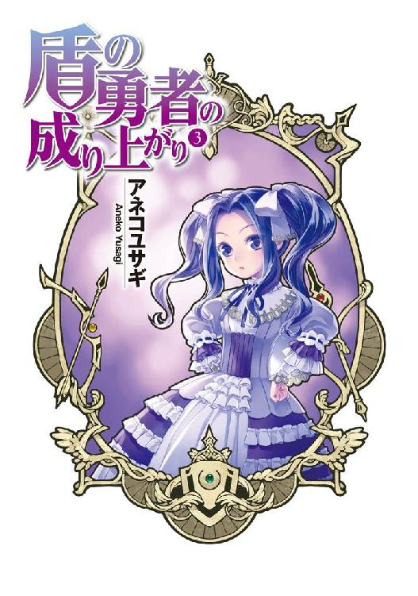
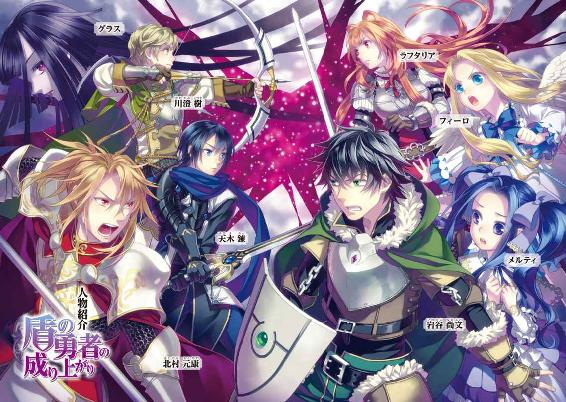
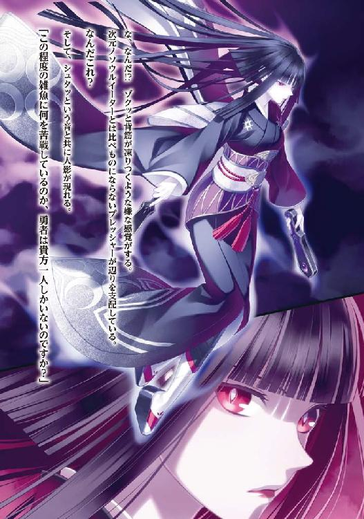
ＭＦブックス
盾の勇者の成り上がり３
アネコユサギ
プロローグ
「はぁ、面倒事が多くなりそうだな。断ればよかったか」
それは、東の村の連中が頼んできた依頼がきっかけだった。
──魔物の討伐。
山を汚染していたドラゴンゾンビこそ俺達が掃除したのだが、残った魔物が少しずつ村に向かってきているのだという。
村に近づいたら危険だとわかれば、魔物共が帰っていくだろうと考え、用心棒代わりに仕事を請け負うことになった。
本当は拒みたかったのだが、世話になったため引き受けることに。さすがにラフタリアの治療などを手伝ってもらっている手前、拒否することもできなく俺達は山へ足を運んだのだ。
「......仕方ない。やるしかないか」
俺の名前は岩谷尚文、現代の日本に住んでいたオタク趣味の大学生だ。年齢は二十歳。
ある日、図書館で四聖武器書という本を読んでいたら突然意識を失い、目覚めるとその本に書かれていた盾の勇者として異世界に召喚されていた。
俺が召喚されたこの世界には、『波』と呼ばれる災害が存在する。波とは、次元の裂け目から魔物が出現する現象のことを差し、その災害を乗り越えるために勇者の力を必要としているのだという。
盾の勇者として召喚された俺は、強制的にその『波』に立ち向かわなければならなかった。
夢のようなシチュエーションだと最初は思っていたのだが、俺が召喚された時に所持していた盾は厄介な性能を持っていて、なんと相手に傷を付けることができないというものだった。
俺がどんなに力を込めて殴っても相手には蚊が刺した程度の痛みしか与えることができず、有効な攻撃手段がなかったのだ。
唯一の長所は強固な防御力。まあ、守ることしかできないとも言えるが。
そんな俺は仲間を引き連れて旅をしている。現在は魔物を相手に戦っている最中だ。
「──ッ!?」
突然、一匹のドラゴンフライが俺に向かって突っ込んできた。
しかし、鈍い音を立てて魔物は盾によって弾かれる。
この盾は魔物や物を素材として吸収することができ、それによって出現する新たな盾の能力を解放することで俺と共に成長していく。そして様々な技能や能力を獲得するという代物だ。
まあ難点も多いが、それで助かったことも山ほどある。
薬を作る補助をしてくれたり、料理の質を上げてくれたりと、まあ便利といえば便利だ。
こんな装備、外したいのは山々だけど、どんな呪いなのか、付け外しはできず、ずっと俺の体に引っ付いている。こうなったら仲間に頼るしかなく、攻撃はそいつらに任せている。
「ナオフミ様、ご無事ですか!?」
タヌキの耳と尻尾を生やした少女が、ポイズンフライを胴体ごと叩き切った。
彼女の名前はラフタリア。ラクーン種と呼ばれる亜人で、城から追い出された後、敵を倒すために買った奴隷だ。
購入した当初は見た目一〇歳くらいの女の子だったんだが、亜人は急速なＬｖアップで肉体も成長してしまうらしく、今では一八歳前後の容姿をしている。
顔は美少女だと断言できるほどだ。まあ、美女というよりも可愛い系だな。
性格は真面目。何が正しいのかを常に見極めようとしているような気がする。
彼女は、俺が召喚される前に世界を襲った波で大事な村と両親を同時に失ってしまったらしい。だから波と戦う勇者に協力することに、やる気を見せているのだろう。
「守備に関してはお任せしますね！」
「わかった」
ありがたいことに、ラフタリアは俺の事を信頼してくれている。
彼女の成長をずっと追ってきたから、俺には親心というものがあった。二十歳やそこらで親というのもおかしな気分だが、一人の少女をちゃんと育てたからそういった気持ちが芽生えているのだ。
おそらく、それはラフタリアも同じだと思う。ずっと一緒にいた彼女も俺のことを親として見てくれているに違いない。
だから俺も信頼に応えたいという気持ちがある。
そんな時だった。一つの影が俺の前に現れる。
「とー！」
鳥型の魔物フィロリアルが、俺に近づいてきたポイズンツリーを蹴り飛ばす。
魔物といっても、こいつも俺の仲間だ。
フィーロという名前で、俺に懐いているフィロリアルである。
フィーロは不思議な力を持っていて、人型に変身することができる。変身した時のフィーロは背中に羽の生えた金髪碧眼の少女になるのだ。
本当の姿は......フィロリアルではあるんだが、普通のフィロリアルとはちょっと違う。なんていうか、ダチョウとフクロウを混ぜたみたいな大きな魔物だ。
一応フィロリアル・クイーンということにしている。
重たい馬車を引くほどの力を持っているが、その分食いしん坊で何でも口にしてしまう。可愛らしい見た目に騙されると痛い目に遭うだろうな。
性格は......無邪気というか自由というか、純粋というのが一番しっくり来るかもしれない。いつも幸せそうな顔をしている。
出会いはラフタリアを購入した奴隷商人のテントにあった、魔物の卵を使ったくじだ。見た目が殆ど同じ卵の中で、好きな卵を銀貨一〇〇枚で買って、孵化して生まれたのがこのフィーロ。
年齢は......二週間。些か見た目と合わない奴である。一応、俺が育ての親だ。
「だいぶ片付いてきましたね、ナオフミ様」
「フィーロ、もっと戦いたかったなー」
俺達の戦いによる効果は割と早く現れて、一時間程度で魔物共は山へ逃げていった。
「大丈夫か、ラフタリア？」
彼女は呪いの所為で動きが鈍い。呪い自体が強力なのも原因だろう。
彼女に付いた呪いは昨日、ここでドラゴンゾンビと戦った際、俺が付けてしまったものだ。
まあ元はと言えば、俺と同じく召喚された勇者が残した問題の所為なわけだが。
ドラゴンゾンビという魔物を相手に戦った時、『カースシリーズ』憤怒の盾という力が目覚め、俺はそれを使った。その盾が出す呪いの炎が、大事な仲間であるラフタリアにも牙を剥いてしまったのだ。
呪われた盾に意識を飲みこまれた俺を救うために、ラフタリアは自らを犠牲にし、その結果として呪いの傷を受けてしまった。
だから盾で防ぐことしかできない俺は重点的にラフタリアを守るように前に出て戦っている。
「傷の方ですが、そこまで問題はありませんよ、ナオフミ様」
「そうか」
「フフ......こうして心配してくださると少し嬉しい気持ちになりますね」
「......本当にすまない」
「それは言わない約束ですよ」
気にしないようにと微笑むラフタリアに、俺は罪悪感を覚える。
「お姉ちゃん大丈夫？」
「ええ、大丈夫ですよ。ね？ ナオフミ様」
「ああ、だが、無理はするなよ」
「ご心配......ありがとうございます」
まあ、ラフタリアもそこまで重傷じゃないようだから良かったけどさ。
「さて、これで一仕事終わりだな。明日にはラフタリアのためにメルロマルクの城下町へ向かうぞ」
魔物討伐の帰り道でのこと。山から降りて、村に続いている平原を歩いていると、
「ごしゅじんさまなんかいるよー？」
野生のフィロリアルＡが現れた！
野生のフィロリアルＢが現れた！
野生のフィロリアルＣが現れた！
フィロリアルの近くに青髪の少女がいる！
って、なんで女の子が野生のフィロリアルと一緒に居るんだよ!?
内心でツッコミを入れつつ、よく観察する。......どこからどう見ても普通の少女にしか見えない。
「おい、そこに居るのは村の人間か？」
念のため尋ねると、少女よりも先にフィロリアル達が反応をした。
「「「グア!?」」」
フィロリアル達はフィーロを見て驚愕の表情を浮かべている！
フィロリアルＡ、Ｂ、Ｃは素早く逃げ出した！
「あ......」
少女が名残惜しそうにフィロリアル達に手を伸ばしている。
なんだこの子？ フィロリアルと遊んでいたのか？
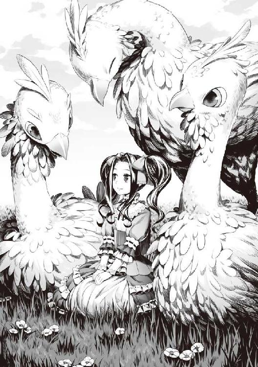
まあ......フィーロを見ればフィロリアルってどんな魔物なのかはわかるような気がするけど。
大方、餌づけでもしていたのだろう。食いしん坊だからな。
この少女、パッと見だけど身なりは良く見える。通りすがりの貴族か行商の娘だろうか？
「なんだったんだ？」
あの女の子を置いていってしまったということは飼いフィロリアルじゃないんだろうな。
となると野生か。
遭遇すると同時に逃げるとは......なんか経験値と金銭が美味しいレアモンスターみたいな行動パターンだ。まあ、そこらじゅうにいるフィロリアルを倒したところでそんな高い経験値は望めないだろうが。
おそらくはフィロリアル・クイーンを目撃して驚いて逃げたとかだろう。
「なんかおいしそうな鳥だよねー。人が飼ってるのとすれ違うたびに思うの」
「あれはお前の同族だ」
舌なめずりをするフィーロに注意する。
コイツは何でも食べ物に見えているんじゃないのか？ 簡単に共食いをしそうで怖い。
「今なら追いかければ仕留められるよ、ごしゅじんさまー」
「......やめておけ」
まったく、緊張感のない奴だ。
経験値といえば、ドラゴンゾンビ戦の後のＬｖを見ていなかったな。
俺 Ｌｖ38
ラフタリア Ｌｖ40★
フィーロ Ｌｖ40★
★......星？
「なあ、お前等のＬｖに星が付いているんだが何か知らないか？」
なんだろうか、凄くいやな予感がする。
「さあ......」
「フィーロわかんない」
う......ヘルプを見てみよう。
......わからん。もしかしたら載っているのかもしれないが★の説明を見つけることができない。
これは後回しにするか。
ん？ さっき野生のフィロリアルの傍にいた少女がこっちに気付いて近づいてくる。
「わぁ......フィロリアルさん？」
「ふえ？ フィーロの事？」
「おしゃべりできるの？」
なんか女の子とフィーロが顔を合わせているぞ。
「うん」
「わたし、フィロリアルさんとお話しするのが夢だったの！ もっとお話ししましょ！」
女の子が興奮気味にフィーロに声を掛けている。
見た目は一〇歳前後の少女。髪は青......色合いが濃いから紺だろうか？ 髪型はツインテール、ちょっと気が強そうな印象を受け、意志がしっかりとした眼をしている。
高価そうな服を着ていて、一目で生まれがいいことがわかった。
「ごしゅじんさまーどうしよう？」
ふむ......どうするかな。どこぞの貴族の娘がフィーロを欲しているとも取れる。
まあ、その貴族と仲良くすれば、いい金の話が飛び込んでくる可能性は否定できないしな......。
俺の立場は盾の勇者ではなく、神鳥の馬車の持ち主である聖人という状況だ。聖人が行商に使っている魔物であるフィーロを売ってくれという話は何度かあった。
もちろん売る気はない。だけど、それから話を発展させて安物のアクセサリーを高く買い取ってもらったことが沢山あるんだ。
盾の勇者であるのを隠しているから、相手も好意的に接してくれることも多い。そういった意味で、少しでも恩を売っておくのは正解かもしれない。
しかし、この子供、一目でフィーロがフィロリアルであることを見抜いたな。
「喋るフィロリアルさん。お名前はなんて言うの？」
「フィーロ」
「フィーロちゃんね。わたしは......メルって言うの！」
「じゃあ、メルちゃん」
「うん！ フィーロちゃん。これ食べる？」
メルと名乗った女の子はポケットから干し肉を出してフィーロに差し出す。
おお、フィロリアルが食いしん坊であることを知っているな。
「わぁ......ありがと！」
フィーロは渡された干し肉を美味しそうに頬張る。
「うふふ」
メルは干し肉を頬張るフィーロを見ながら幸せそうに笑っている。そして、フィーロの羽毛を優しく撫でていた。
フィロリアルが好きなんだと、それだけでわかる。珍しいからと欲しがる連中とは大きく違う何かを感じることができた。
まあ、フィーロとは良い友達になりそうだな。人脈を築くという意味で、あいつには頑張ってもらおう。
「フィーロ。今日は村での仕事がまだ残っているから自由にしてて良いぞ。できる限り楽しませてやれ」
「わかったー。行こ？」
「うん！」
フィーロはメルと遊ぶために平原を駆けて行った。
村に帰ってからも疫病の根絶のために俺達は精一杯働いた。
治療師の仕事の手伝いができないかと尋ねると、調合を手伝ってくれと言われた。
俺は薬の材料を調合し、作業は予定よりも早く終わった。
病で苦しむ人々がいなくなり、村が平穏になってくれることを願う。
外を見るとフィーロが子供達と遊んでいた。
「あの聖人様......これを......」
そう言って村の長から渡されたのは金の入った袋だった。
「聖人様、ご所望の金銭です。どうかお納めください」
そういえば今回は俺の正体がばれていなかったな。今の俺は犯罪者の盾の勇者ではなく行商で奇跡を振りまく神鳥の聖人ということになっている。
「ああ......」
俺は金の入った袋を受け取り、どれくらい入っているかを数える。
......そして半分ほど別の袋に入れて返した。
「え？」
「俺だけの力じゃない。この村にいる治療師の手柄でもある。そいつに渡しておけ」
「は、はぁ......」
今回はあの治療師が居なかったら危なかった。俺だけでは病の進行を抑えるので限界だっただろう。そういう意味では功労者は奴だ。
「さて」
ラフタリアの治療のために大きな教会に行きたいけれど、日が傾いてきている。
今日は一泊した方が良さそうだな。
村の宿で休んでいるとフィーロが楽しげに帰ってきた。
「あのね。フィーロに新しいお友達ができたのー」
「そうか、よかったな。村に帰ってくる時に会った子か？」
そもそもコイツに友達なんていたのか？ この場合、初めての友達じゃないのか？
ラフタリアは友達というより母親......どちらかと言えば姉か。
「うん！ あのねーさっきの子でねーフィーロと同じでいろんな所を旅してるんだってー」
「へぇ......旅人ってやつか？ その割には身なりが良かった気もするが」
もしかしたら金持ち商人の一人娘で、たまたま疫病が流行っていた村の近くを通っただけかもしれない。
まあ、フィーロはなんだかんだで子供受けは良さそうだよな。人当たりは良いし。
しかも人型に変身したフィーロを見ても、さっきの子はすぐに受け入れているみたいだ。そういった順応性も持ち合わせているのかもしれない。
「でねー。フィーロの知らないことをいっぱい教えてくれたのー。フィロリアルはどんな魔物なのかとかねー。どんな伝説があるのかとかいっぱい！」
「ほー」
適当に相槌を打っておこう。フィーロは話すのが下手だから要点がわかりづらい。
俺は忘れてないぞ、魔法の使い方を聞いたら「ぎゅーっとねー」とかわけわからない言葉で説明した時の事を。
「でねー、フィロリアル達と遊んでいたらみんなとはぐれちゃって困ってるんだって」
「へー」
「あの......ナオフミ様？ ちゃんと話を聞いてました？」
「ん？」
正直に言えば聞き流していた。だが、何を言っていたか思い出してみよう。
フィーロがあのメルって自己紹介した子と友達になって、その友達がみんなと逸れてしまった？
なんか不吉な事を言っているなと思って、振り返るとフィーロの隣に女の子が立っていた。
「夜分遅く申し訳ありません。その......どうか少しの間、ご一緒させてもらえないでしょうか？」
「待て待て、少し話を整理させてくれ。えっとメルちゃんだったか？ どうしてフィーロと一緒に俺の所へ来たんだ？ 逸れたのなら探してもらえば良いだろ？」
「その......フィロリアルさんに連れてきてもらったのですが、ここがどこかわからなくなってしまって......目的地はわかるのですが、護衛の方々とはずいぶん前に逸れてしまって......」
「護衛？ というかお前は貴族か？ それとも商人の娘か何かか？」
「えっと......」
メルちゃんとやらは目線を一度逸らした。その後、小さく頷く。
「はい。貴族の娘という認識で間違いはありません。そして、わたしのことはメルと呼んでください。聞けばフィーロちゃんとその馬車の持ち主......聖人様でしたか？ 明日にはメルロマルクの城下町へ行くとのこと。どうかそこまでご一緒させていただけませんか？」
礼儀正しい態度でメルは俺に頼んでくる。
ふむ、ちゃんと送っていけば礼金とか貰えそうだよな。行方知れずの貴族の娘を送り届けたとかで喜ばれるかもしれない。
ただ、盾の勇者である俺が送っていったら貴族に誘拐疑惑を吹っ掛けられて、面倒な事に巻き込まれるかもしれないしな......。
「うーん......」
「ごしゅじんさまーフィーロからもお願い。メルちゃん、困ってるんだって」
「危険に巻き込まれる可能性もあるしなぁ」
「ナオフミ様、私からもお願いします。こんな小さな子が迷子になっていて放っておくことなんてできません」
「お礼はします。どうか連れていってもらえませんか？」
ラフタリアとフィーロに頼まれる。しかも金まで貰えるのか。最悪フィーロの速い足で逃げればいいと考えれば......。
「礼金は要求するぞ？ 礼の受け取りはフィーロにさせるがそれでも良いか？」
「はい！ 父上に頼みますので、よろしくお願いします」
......しょうがないか。
しかし城下町に家を持っている貴族とか、結構身分が高そうな奴だ。そんな子が野生のフィロリアルと遊んでいるうちに逸れたとか護衛はザルだな。何かの事件に巻き込まれたらどうするんだ？
「変な真似をしたらこの話は無しだからな」
「わかっています。どうかよろしくお願いします。聖人様」
こうして、フィーロの友達であるメルが城下町まで同行することになった。
フィーロが引いている馬車に乗って、これから城下町へと向かう。
「ありがとうございましたー！ また来てください」
「じゃあな」
村の連中が総出で俺達を見送った。
この後、俺の正体がわかったら奴等は嫌な顔をするんだろうか？ 考えると複雑な気持ちだ。
「よろしくお願いします、メルさん。私の名前はラフタリアと言います。短い間ですがお世話になりますね」
「はい。よろしくお願いします。ラフタリアさん」
ラフタリアの体調も良くしておきたいので一刻も早く治療用の聖水が欲しい。
「メル。俺達はラフタリアの治療を優先するからな」
「ラフタリアさんに何かあったのですか？」
メルが尋ねてくる。
「ちょっとな、あの村の近くにある山で凶悪な魔物と戦った際に呪いを受けてしまったんだ」
「そうだったの......ですか」
俺は薬を作り、それを売ることで金を稼いでいる。
だが、今はラフタリアの呪いを解くことを最優先にしようと決めていた。本来はその金銭で武器屋の親父から装備を購入して波に挑みたいんだが、ラフタリアの傷と天秤に掛けたら当然彼女の方が大切だ。
だって俺が付けてしまった呪いだし、波の事を考えたら少しでも戦いやすいようにしなくてはいけない。武具の方は後でもどうにかなるがラフタリアの方は呪いという病だ。できる限り早くした方が良いだろう。
「大きな教会で作られた聖水が必要なんだ」
「首都の教会へ行くほどの、強力な呪いなんですね」
「ああ」
ラフタリアの治療には教会が作った強力な聖水が必要だと治療師に言われた。
なので、俺は一番大きな教会がある城下町に行くと決めていたのだ。
「フィーロ、急いで城下町へ行くぞ！」
「りょうかーい！」
「わ！」
速度を上げるフィーロにメルは声を漏らす。
ああ、そういやフィーロの馬車は揺れが激しいから、普通の人は乗り物酔いするんだよな。
大丈夫だろうか？ この子。
「あははははは、フィーロちゃんはやーい！」
「えへへーもっと速く走れるよー！」
おお......大丈夫そうだ。
「あんまり、はしゃぎすぎると危ないですから気を付けなさい！」
ラフタリアが注意するがフィーロは全然聞いていない感じだった。
むしろメルが加わったことで、いつもより激しい動きになっている。
ラフタリアの方はすでに気持ち悪そうにしているし......。
「ナオフミ様、ちょっと休んでもいいですか？」
「ああ」
......逆に大変になったのか？
「はぁ、面倒事が多くなりそうだな。断ればよかったか」
俺はそう呟いた。
出会いのきっかけとなった魔物退治の依頼を受けたことを、少しだけ後悔しながら。
一話 フィーロの友達
パチパチと音を立てて焚き火は燃えている。この日は野宿をすることになった。
明日にはメルロマルクの城下町に行けるはずだ。
「あははははは、フィーロちゃーん」
「まってー！ つーかまえた！」
「つかまっちゃったー！」
人型のフィーロとメルは野宿だというのにテンション高く駆け回っている。
仲の良い友人と寝食を共にするというのは楽しいものだ。俺も学校行事で何度も修学旅行や臨海学校、自然教室と参加したのでわからなくもない。
とは思うんだが......コイツ等本当に仲良いな。
フィーロの方は友達らしい友達がいなかったからわかる。
しかしメルは貴族らしいから、身分的には家畜と飼い主って感じだ。
それでも一見友達に見えるからメルにとってはフィーロが魔物なのは関係ないのかもしれない。
そういえば馬車の中でフィーロの種族、フィロリアルに関して熱弁を振るっていたような気がする。なんでも長いこと、旅をしていたとか話していたし、フィロリアルの馬車に乗る機会も多かったから好きになったんだろう。
「あんまり騒ぐな！」
「はーい！」
「ナオフミ様、良いじゃないですか。フィーロに仲の良い友達ができたんですから」
「まあ......そうだな」
まったく、やかましいフィーロに友人ができるとここまでうるさくなるのか。
「メルちゃんにはフィーロの宝物を見せてあげるね」
「うん！」
そう言ってフィーロはいつも大事に馬車に隠していた袋をメルに見せる。
何が入っているんだろう。微妙に気になるな。あのフィーロの宝物だ。どうせガラクタだろうとは思うけど......俺の所持品からちょろまかしていたら没収するか。
「ごしゅじんさまもみる？」
「あ、ああ」
手招きするフィーロに、俺は近づいて中を覗き込んだ。
えっと、折れた剣の破片。俺がアクセサリー作りに失敗して捨てた宝石。空きビン。ビー玉っぽいガラス片。
「キラキラして綺麗でしょ」
「ええ、綺麗ね」
メルはちょっとだけ微妙な顔をしている。ま、ゴミばかりだからな。
光物が多いのは正体が鳥だからだろうか。烏が光物を盗んで騒動を起こした、なんて話を聞いたことがある。それに近いのかもしれない。
ん？
「なんだこれ？」
袋の中に妙な物が混じっていたので取り出してみる。
茶色の......大きな毛玉？ ボールのようで微妙な柔らかさ......中には硬いものがバラバラになって混じっている。どことなく異臭がするような気がしなくもない。
とてつもなく嫌な予感がする。
「それはねー......フィーロの口から出てきたの」
口から出てきた......フィーロの。
猫で例えると毛玉。人間で例えるならゲロ。だけどフィーロの正体は鳥。
鳥の嘔吐物＝ペリット。
つまりこの硬いバラバラになった物体は魔物の骨やフィーロ自身の羽の残骸。
「きったね！」
何考えてんだ。触っちまったじゃねえか！ 俺はペリットを投げ捨てた。
「あーフィーロの宝物！」
「宝物じゃない！ それは排泄物だ！ 次にそれを袋に入れていたらお前の宝物を全部捨てるからな！」
「ぶー......」
メルは俺とフィーロのやり取りを見てなんとも言えない顔をしている。
そんな会話の後、俺は晩飯を作った。
今日の晩飯は遭遇した魔物の肉を、串に刺して焼いただけの串焼きだ。
「ごしゅじんさまご飯作るの上手なんだよ」
「はい。とてもお上手で、みんな美味しいと言うんです。メルさんも食べてみてください」
ラフタリアが勧める串焼きをメルは素直に受け取って食べる。
「ただ串で焼いただけなのに凄く美味しい！ どうなってるの!?」
何でも臆することなく食べるメル。てっきり「こんな野蛮な料理は食べられない！」とか言い張るかと思ったけど杞憂だったようだ。
これは長い旅で色々と回っていた影響か？
イメージだけでメルを評価してしまっているな。物怖じしない性格なのだろう。
さて、食事も終わり寝るだけとなったわけだが、横になるには少し早い。
要するに暇な時間だ。
野宿も大分慣れてきたけど、とりあえず初級魔法書を読んで新しい魔法を覚えるよう勉強するか。
しばらくしてフィーロとメルは静かになった。大方、疲れて眠ったのだろう。
ラフタリアには先に仮眠を取ってもらっている。フィーロとメルが火の番をするのは些か不安が拭えないからな。
「ふむ......」
初級とはいえ、色々な種類の魔法がある。
ファスト・ガードやファスト・ヒールの範囲版がそれだ。
まだ使えるようになっていないんだが、初級最後の習得魔法のようだ。今は攻撃力や速度の上昇の魔法を読んでいる。早く覚えたいのは山々だけど、難しい文法や概念の説明があって厳しい。
焚き火に薪をくべつつ、時間が過ぎていく。
「ん......」
ラフタリアが目を覚まし、寝ぼけ眼をこする。
「起こしてしまったか？」
「いえ。......交代しますか？」
「ラフタリアが良いのなら」
「はい」
ラフタリアの言葉に甘え、俺はキリが良いので寝かせてもらうことにした。
「あの、ナオフミ様？」
「なんだ？」
「フィーロとメルさんが......」
何やら震える指を押さえながらラフタリアは静かになった魔物形態のフィーロの方を指差す。
そこにはメルが着ていた服が脱ぎ散らかしてあって、魔物の姿のフィーロがなぜか一人で座って寝ている。
「えっと」
......メルはどこだ？ フィーロの背中に半裸で寝ているのかと後ろの方を見るがいない。
靴まで転がっていて......本体はどこだよ。
「まさかね......」
幾ら食いしん坊だからって......。
「ナオフミ様、以前盗賊達に人を食べる魔物だと脅したからフィーロは......」
「いやいやいや！ まさか！」
「でも......フィーロですよ」
「う......」
ありうる。友達＝いつでも食べられる相手と認識していたのか？
「ラフタリア。何も見なかったことにして証拠隠滅しないか？」
「な、何を言っているんですか！」
「じゃあフィーロが人を食った、しかも貴族の娘を食べましたと自供しに行くのか？」
責任逃れをしたい。いや......目を離していた俺が悪いのはわかっているけど！
まったく、このデブ鳥はとんでもないことをしてくれる。
「ふにゃ？」
カクンと頭を強く下げすぎてフィーロが目を覚ます。
「どうしたの？ ごしゅじんさまにラフタリアお姉ちゃん」
「メルさんはどうしたのフィーロ？」
「メルちゃん？ メルちゃんならフィーロの羽毛の中で寝てるよ？」
「は？ いないじゃないか」
先ほど確認したのだから間違いない。
「メルちゃん。起きて」
フィーロが背中の羽毛を逆立てる。
「ん～？」
もさもさと羽毛が奇妙に逆立ち、なんとメルがフィーロの背中から顔を出す。
「な!?」
いやいや、フィーロの体積から考えたら体には女の子一人分が入るほどの余裕はないだろ。なのに変な所からメルが出てきた。
「どうしたのフィーロちゃん？」
「ごしゅじんさまがメルちゃんはどこ？ って聞くから起こしたの」
「どこってフィーロちゃんの背中......。ここ、とってもあったかいの」
「......服を脱いだのは？」
「暑いから」
はぁ......驚かせるな。
「というかどうやってそんな深くに入り込んでいるんだ？」
「フィーロちゃんの羽毛って不思議なくらいふかふかで分厚いんだよ？ 手を入れてみる？」
「あ、ああ」
この際だ。フィーロの体はどうなっているのか確かめてみるか。
メルが手招きするので俺は手を伸ばす。
「うわ......不自然に深い」
二の腕の奥まで入ってやっと地肌っぽいのにぶつかる。やっぱコイツの体温は高いな。これだけ深いとメルが寄り添って寝ていたら気付かないかもしれない。
「......どんな構造しているんだ？」
「ですねぇ......」
「一度全部羽をむしって調べてみるか。ついでに羽を売れば儲かるかもしれないぞ」
「やー！」
「聖人様！ フィーロちゃんに乱暴しちゃダメ！」
「冗談だよ」
ううむ......またフィーロの変な生態を垣間見てしまった。
二話 行商の成果
翌朝、門が開くと同時に城下町へ入った。
馬車は城下町を歩く上で少々邪魔だ。どこかに止めておく必要がある。
というわけで武器屋の親父の店に止めることにしよう。
武器屋の親父はこの世界では珍しく、俺に良くしてくれる数少ない人間だ。
冤罪で悪く言われる俺に、良心的な価格で武器を売ってくれた信用できる人物だ。
「親父、武器と防具を売ってくれ」
久々に見た武器屋の親父が眉間に手を当てて考え込んだ。
「アンちゃんはいつもいきなり来るな」
「商売とは突然の出来事の連続だと思わないか？」
「まあ、そうだが。予算金額はどれくらいだ？」
「そうだな」
ドンッと親父の立つカウンターにここ三週間半の収入を載せる。
ずっしりと入った大きな金袋を三つほどだ。
「銀貨何枚だったか、これだけある」
「アンちゃん、ちゃんと数えろよ！」
「ははは、行商の成果だ」
「まったく......アンちゃんは俺を驚かせる趣味でも持っているのか？」
「あいにくないな」
「さて、じゃあどれだけあるか数えるか」
「おう」
親父と俺、そしてラフタリアで金袋の中身を数えた。
「そういえば嬢ちゃん、怪我でもしたのか？ 動きがぎこちないぞ」
「ええ、この前、魔物の攻撃で強力な呪いを受けてしまいまして」
俺は思わず数えるのをやめてラフタリアの方に顔を向ける。
「ああ、呪いかー。そうなると厄介だよな。治療中ってやつか」
「ええ、この後、教会で聖水を買おうと思ってますよ」
「なるほどな」
ごまかせたか......いや、俺が付けた呪いと思うわけないか。
量が多く見えたけど銅貨も多く、銀貨に換算すると意外と少なくなっていく。
「金貨五〇枚相当だぞ！ ものすごく稼いだなアンちゃん」
「商才がある自覚は持っているさ」
自分でも商売の才能があるんじゃないかと自惚れてはいる。
他人の不幸で金を稼いでいるから、あまり良い気分ではないが。
「後は、盗賊から奪った装備とか色々とあるな」
俺は店の品をキョロキョロと見ていたフィーロに指示を出し、裏に止めていたボロボロの馬車から色々と持ってこさせる。
「フィーロ、メルちゃんを送っていっていい？」
「ああ、昼過ぎには一度戻ってこい。そしてちゃんと礼は貰ってこいよ」
「はーい」
「聖人様、お世話になりました。このお礼は必ず。それではさようなら」
フィーロは荷物を運び終わり、メルを親元に送りに行ってしまった。
まあ、城下町に送っていくまでの関係だったし、フィーロが無礼を働いたとか因縁を付けられる等の問題もあるまい。一日しか付き合っていないがメルという子の性格はなんとなくわかった。
礼儀も正しいみたいだし、親が因縁を付けてきても大丈夫だろう。問題があったらすぐに逃げてくるようにフィーロには言っておいたし。
「さて、これも下取りに出すか」
視線を親父に戻して商談を続ける。
これは以前、盗賊に襲われた際に連中から奪った武器防具だ。
「アンちゃん、手広くやってるな」
「で、これだけでどれくらいの装備を売ってくれる？」
「そうだなぁ......お嬢ちゃんの武器と防具、合わせてアンちゃんの防具を売るとなるとなぁ」
武器屋の親父が腕を組んで考え込む。
「うちの店を贔屓にしてくれるのはありがたいが、別の店へ行くのも手だぞ？」
「どういう意味だ？」
「いやな、他の勇者は最近めっきり顔を出さなくてな。どこかに優秀な店でもあるのだろうと思ってな」
「ふむ......」
考えられない話ではない。あの連中はゲームの情報を持っているから、親父の店より品揃えや性能が良い装備を売っている場所を知っている可能性は非常に高い。
城下町で一番品揃えの良い店が親父の店だとして......どこか別の国か？
「心当たりがあるとすれば？」
「隣国辺りまで行けば、俺の所より良いものを売ってるかもしれねえな」
「そんな雲を掴むような可能性に賭けるくらいなら親父の店で十分だ」
「アンちゃん......よし！ じゃあアンちゃんの期待に応えないとな！」
「最悪、親父に武器と防具を作ってもらえば良い。見た感じ......腕は良いんだろ？」
「おうよ！ 若い頃に東方の名工の弟子をしていたんだぜ」
「そういうわけだ。効率とかそういう全てを考えて俺は親父に頼んでいる」
「アンちゃん、わかったぜ。俺も期待に応えなきゃな」
武器屋の親父はカウンターから乗り出して自身の店の商品を眺めた。
「そうだなぁ......嬢ちゃんの武器には魔法上級銀の剣辺りが妥当な線だろうなぁ。もちろんブラッドクリーンコーティング加工済みでな」
金貨一〇枚相当だと説明して分ける。もちろん、下取り分を入れて一〇枚だ。
ブラッドクリーンコーティングとは血糊が剣に付かなくなる便利な加工らしい。
血糊が付くと錆びたり、切れ味が悪くなったりするから、かなり優秀な加工だ。
「次に魔力防御加工が掛かった魔法銀の鎧が妥当だろうな」
「魔力防御加工？」
「装着者の魔力を吸収して防御力を上乗せする加工だ」
「なるほどな」
俺が守りきれずに怪我をさせてしまう可能性を視野に入れたらラフタリアの装備は重点的に付けさせたい。
親父はまた金貨一〇枚相当を移動させる。かなりの高額だな。
だが......。
「なあ、もっと金を掛けて良い装備にしても良いんだが？」
「アンちゃん、嬢ちゃんの治療費をどうするんだよ。後な、自身に釣り合わない装備じゃ無理が出るってもんだ」
「そういうものか」
「あと、今うちにある在庫の装備じゃこの辺りが限界だ」
「ああ、そういうことか」
親父の店でも高価な商品なのか、なら納得。
「ここから先はオーダーメイドになるな。そうなると少し時間が掛かる」
「作る時間とか必要だろうしな」
「今は......かなり色々な素材を持ってきているが、どれも足りないな。主に鉱石が」
「腐竜の皮とかは使えるかと思ったんだけどなぁ......」
「問題はそれだな、アンちゃんはどうする？」
「どうするって？」
「アンちゃんの場合は重い装備をエアウェイク加工で軽くさせて売ることもできるが、持ち寄った素材で新しい装備も作れるぞ」
「ちなみにどっちが性能が良いんだ？」
「トントンだな」
「ふむ......そういえば蛮族の鎧に骨を付与すれば性能が上がるんだったか」
「ああ、それを勧めるつもりだったよ。キメラとドラゴンの骨なんて凄い素材じゃないか。後は腐竜の皮を張り替えて......腐竜の核を鎧の中心に装飾すれば完璧だ」
腐竜の核は死んで腐ったドラゴンを心臓の代わりに動かしていた核だ。殆どフィーロが食べてしまったんだけど、一部だけお土産として貰った。
こういうレアっぽいのは良い装備の材料になりそうだな。
「へー......じゃあそれを頼むか」
「毎度！ 骨の付与代はオマケとして、加工費と足りない素材代っと」
そう言って親父は金貨五枚を移動させて素材をカウンターの奥に持っていく。
「アンちゃんも装備している蛮族の鎧を置いていけよ」
「わかった」
更衣室に行き、着替えて蛮族の鎧をカウンターに置いた。
「じゃあ、そうだな......二日後には完成しているから、その辺りに来てくれ。その頃にはアンちゃんの装備ができてる」
「わかった。なあ、親父」
「なんだ？」
「Ｌｖの隣に星が付いたんだがなんか知らないか？」
「お？ アンちゃん達もクラスアップの領域に達したか」
「クラスアップ？」
「なんだ、知らないのか。クラスアップっていうのは成長限界突破の事だ。それを超えることで更にＬｖを上げられるのさ、しかもクラスアップした時、かなりパワーアップできるぞ」
なん、だと!? つまりアレか、ゲームとかで言うところの転職とかその辺りの通過儀礼的なやつか？
「本来クラスアップは国に認められた騎士とか魔術師とか、あと一部のお抱え冒険者じゃないとできないんだけどな。アンちゃんは勇者だから信用は足りているだろ？」
これを逆に考えると盗賊団が思いのほか弱かったのも頷けるな。最高でもＬｖ40だ。信用のおけない冒険者や村人にはクラスアップができないという枷を掛けて、力で管理している。
そういえば盗賊が雇った用心棒と戦った時、似たような話を聞いた気がする。
「クラスアップする時に自分の方向性を決めるんだが、俺も悩んだもんだぜ......星に達しているとなると全部の可能性が開いているから尚の事だろうな」
「......どこでクラスアップできるんだ？」
「アンちゃん行ったことなかったか？ 龍刻の砂時計でできるぞ」
あんな所でできるのか？ よくよく考えてみれば確かに高尚そうな、管理が厳重な施設だった。
龍刻の砂時計というのはこの世界を襲う波の到来時間を教えてくれる施設だ。
以前、俺以外の勇者達と再会した場所でもある。
......もしかして、あそこで他の勇者共に会えたのもクラスアップが理由か？
あいつ等Ｌｖ幾つなんだよ。さすがに焦りが浮かんできた。
「とりあえずはラフタリアの治療が先だな。フィーロも出かけているし......合流してからにしよう」
できるのなら、さっさとクラスアップをさせるべきだろう。
「じゃあ親父、店を待ち合わせの場所にしてしまうが良いか？」
「まあ、アンちゃんの頼みならしょうがないな」
本当、武器屋の親父は俺に良くしてくれるよなぁ。ぜひ贔屓にしたい人物だ。
こうして俺はラフタリアと共に教会へ向かうのだった。
城下町の目立つ所に建っている教会に行く。
大きな教会だな......シンボルはなんか剣と槍と弓を重ねた形をしている。
なんとも不快なシンボルだな。なんで盾だけ無いんだよ。
「た、盾の勇者!?」
入ると同時、シスターがものすごく渋い顔で俺のことを睨みつける。幾らなんでも、そこまで拒絶するものか？ さすがに罪状が強姦疑惑では教会に入るのも拒否られるのか？
「うろたえるものではありませんよ」
教会の神父らしき落ち着いた態度の男がシスターに注意した。
......何か引っかかるがまあいい。
「教皇様！」
「本日は我が教会に何の御用ですか？」
「ああ、仲間が酷い呪いを受けてしまってな。呪いを解く強力な聖水を譲ってもらいたい」
別にコイツ等は俺に被害を与えていないのだから今はまだ普通に相手しよう。
「ではお布施を」
料金表が壁に掛けられているので値段はわかる。試しに聞いてみるか。
「幾らだ？」
「聖水ですと安い物から銀貨五枚、一〇枚、五〇枚、金貨一枚と効果によって上がっていきます」
ふむ......吹っかけてはいないようだ。
これで吹っかけるようだったら制裁を加えてやろうと思ったが......。
「神様の前で値引き交渉するのもアレだな、じゃあ金貨一枚の強力なやつを頂こう」
「いけません、ナオフミ様。そんな高価な物は頂けません」
「いいんだよ。前に言っただろう。俺はお前を大切にしている。ラフタリアに比べれば金貨一枚なんて安いもんさ」
「あ、ありがとうございます！ 私、絶対に期待に応えてみせます！」
俺は金貨一枚を取り出して教皇に渡す。
「わかりました」
教皇はシスターに指示して聖水の入ったビンを持ってこさせた。
......目利きスキルが作動して品質をチェックする。
低級聖水
品質 粗悪品
品質の悪さに教皇を睨む。すると教皇も聖水に視線を移して顔色を変えた。
「なぜ、質の悪い物を持ってくるのかね？」
「ですが」
「神は慈悲深いものです。あなた個人の正義感を満足させるための蛮行なら今すぐ悔い改めなさい」
「ま、誠に申し訳ございません！」
「すみませんね。我が教会の者が無礼を働いてしまいまして」
「金に見合った物を最終的に寄越すのなら文句は言わないさ」
「慈悲に感謝いたします」
今度は教皇が直々に聖水を持ってきた。俺は聖水を再度チェックする。
呪い払いの聖水
品質 高品質
「まあ、こんなところだろう」
俺は聖水の入ったビンを受け取る。
「神の導きに感謝をしてくださいね。全ては我等が神の慈悲なのですから」
宗教って恩着せがましいな。まるで俺が悪人前提で、許してやるみたいな言い方だ。
そんな感想を抱きながら教会を後にした。
三話 天使萌え
「あー！ 盾の勇者──」
教会を出たところで聞きなれぬ声に振り返る。
見ると息を切らした一四、五歳くらいの兵士の格好をした少年がこちらに駆けて来る瞬間だった。
ここは城下町だから、兵士が俺に向かってくるとなれば基本的に悪いことしかない。
咄嗟に逃げようと走り出す。ラフタリアも俺に続く。心当たりが多すぎるからだ。
俺に罪を着せたこの国の王......俺の心の中ではクズと呼んでいる奴が気まぐれで、またもあらぬ罪を着せたのかもしれない。
「待って！」
知らんな。待ったところで碌な事がないのは目に見えている。古来からこういう時に、待てと言われて待つ馬鹿はいない。
だから逃げ始めたわけだけど、よく考えたらフィーロとは別行動じゃないか。下手に捕まるわけにもいかないし、かといって城下町から出てもフィーロがいないんじゃ馬車で出発できない。
「待って──」
「しつこいな！ ラフタリア、フィーロを連れてきてくれ。どうやら買い物を切り上げて逃げなきゃならないようだ」
「わかりました！」
ラフタリアと二手に分かれて俺は兵士から逃げることにした。
案の定、兵士は俺の方を追いかけてくる。
「どうにか撒いたか」
かなりしつこい兵士だったな。路地裏を抜け、大通りの人混みの中をくぐりぬけて、やっとの事で兵士を撒けた。後は見つかる前に城下町を後にするほかあるまい。
......問題は合流だが、武器屋の親父の所へ向かえばすぐに合流できるだろう。
などと考えていると──
「あああああああああ───」
なんだ？
俺が振り返ると元康一行が俺を指差しながら詰め寄ってくる。人混みが割れた。
チッ！ ここで目立ったらせっかく撒いたのに意味がなくなるだろ。
「尚文、見つけたぞ！」
コイツの名前は北村元康。俺とは違う日本からこの世界に召喚された槍の勇者だ。そして俺を冤罪に陥れたビッチのような王女のお気に入りでワガママ放題で異世界生活を満喫している。
顔は勇者の中で一番良いだろう。性格は軽い、女好きのナンパな奴だ。頭の中身も軽そうだがな。
コイツの所為で俺はかなり迷惑している。
「お前！ 何考えてるんだよ！」
「何の事だ？ 変な因縁をつけてくるな」
「とぼける気か!? わかってるんだぞ。あのデブ鳥の飼い主がお前だっていうことは」
デブ鳥......フィーロの事か？
「良いからあのデブ鳥を出せ！ ぶっ殺してやる！」
「出せと言われてもな。一体どうしたんだ？ あの時はお前が不用意に近づいたからだろ」
過去に元康はフィーロに股間を蹴り飛ばされている。錐揉み回転をして爽快だったな。
「しらばっくれる気か!? あのデブ鳥、俺を見るたびに撥ね飛ばしていったんだぞ！」
ん？ 何の事を言っているんだ？ 変な因縁だろうか。
「どういうことだ？」
「だから、お前の飼ってるデブでブサイクな鳥が、遭遇するたびに轢いていくんだよ！」
元康を見ると、装備は豪華になりつつ、股間にファールカップがついているのに気付いた。
これは笑える！ トラウマだコイツ！ 大爆笑だ。
そうかそうか、これは後でフィーロに褒美をやらねばならないな。俺の気持ちを察してそんな事をしていたのか。
「何へらへらしてんだ！」
「あっはっは！」
「てめぇ！」
まったく、何を怒っているのか。こりゃあ爽快。
元康は俺に話が通じないのを悟ったのか、別の話題を持ち出してきた。
「あと、彼女を解放しろ！ この奴隷使い勇者！」
「またか......お前もしつこいな」
コイツは以前、ラフタリアが美少女で奴隷だからという理由で俺から没収しようとしたことがある。賭けにならない勝負をして、後方にいるビッチな王女に卑怯な不意打ちをさせて勝利したのだ。
あの時と、全く同じ状況じゃねえか！
「ラフタリアは断っただろうが」
真実を知り、状況を理解したラフタリアに拒否されて話はうやむやになったけどな。
「ラフタリアちゃんの方じゃない！」
元康が握りこぶしを作って断言した。
「俺は知っているんだぞ！ 最近新しい奴隷を手に入れただろ！ 武器屋から出ていくのを見たんだからな！」
......誰の事を言っているんだ？ 心当たりがない。
俺の配下になっている奴はラフタリアとフィーロだけだ。
で、さっき元康はフィーロに激怒していた。そして奴隷を解放しろ？
「誰の事を言っているんだ？ メルって子は違うぞ」
「メルというのか、あの金髪の子は！」
金髪？
「青い髪ならメルだが、金髪？ フィーロの事か？」
「そうだ！ あの、羽の生えた女の子に決まっているだろうが！ フィーロちゃんというんだな」
なんかものすごい熱意で元康が断言した。
ぶっ殺すと言ったその口で解放しろとはどういう理屈だ？ やはりコイツの考えは理解できん。
「お前は、女なら何でもいいのか？」
「違う！」
何か断言しやがった。
「あんな理想的な女の子は初めて見た......」
「......は？」
「魔界大地のフレオンちゃんみたいな子が実在するなんて思わなかった！」
誰だよソレ。
......絶対ゲームのキャラクターだな。
そういえばフィーロの外見は俺の世界のゲームにも居る典型的なピュア天使娘だ。
「俺、天使萌えなんだ......」
「黙れ！ お前の性的嗜好なんて知りたくもない！」
「異世界最高！ あの子を一目見た時から俺の心は晴れやかさ！」
元康のテンションが最高潮に達している。とてもじゃないがさっきまで鳥型フィーロに激怒していた人間とは思えないほど、恍惚とした表情で人型フィーロを語っている。
逆に取り巻きの機嫌は悪くなっている。ああ、だから黙って見ていたのか。
「あの子の主がお前だっていうのはわかっているんだ！ すぐに解放しろ！」
「はぁ......めんどくせぇな」
つまり好みのストライクゾーンだからフィーロを寄越せと言っているんだな。
ふざけるのも大概にしろ。
「俺が応じると思うか？」
「思わないなら、思うまで戦う！」
元康が槍を構えて俺に向ける。
「おいおい、ここでやるのかよ!? 場所を考えろ！」
「乱れ突き！」
元康がいきなりスキルを俺に向かって放った。俺は軽く盾を構えて防御したんだが流れ弾というか、俺に当たらなかった突きが背後の商店に当たって壁が崩れる。
人垣ができていたこの状況で、元康がスキルを放った所為で悲鳴が響き渡る。
「おい！」
「エアストジャベリン！」
元康は槍を俺に向かって投擲してきた。
く......避けたら一般人の連中にも当たる。この国の連中の事など知ったことではないが、戦って良い所と悪い所の違いくらい俺にだってわかるぞ。元康は俺以外目に入っていないんじゃないか？
「彼女を解放しろ！」
「誰がするか！」
まったく、あの食欲魔鳥を解放？ 冗談じゃない！
下手に解放してみろ、何をするかわからないぞ。
「まだ従わないか！」
辺りはパニックになりかかっている。
「こら！ いい加減にしろ！」
「幾ら勇者だからってこんな場所で戦うな！」
周りの野次が加速している。
やばいぞ。これって幾ら元康が暴れても責任は全て俺が被るパターンじゃないか？
「元康、いい加減にしろ！」
この際だ。ドラゴンゾンビを焼き払った憤怒の盾に変えてカウンターを狙ってみるか？
いや、憤怒の盾の力は辺りを焼き尽くす。その所為でラフタリアは呪いに侵されてしまったわけだし、民間人の居るこの場所で使うべきじゃない。かといって逃げるわけにもいかないし......。
「おい！ お前等も止めろよ！」
元康の取り巻きであるビッチな王女とその仲間の女達に注意する。
お前等の勇者様が暴走してんだぞ。
そう思ったのだが、ビッチの奴、へらへらと笑いながらこっちを見ていやがる。
嫌な予感がする。アイツは人の嫌がることを必ずやるタイプだ。
「皆さま！ 落ち着いてください！ 槍の勇者様と盾の勇者の一騎打ち！ これは正当な決闘！ ここに国が認める権利として宣言いたします」
と、ビッチな王女はマインという冒険者名を掲げつつ、国が認めた署名のようなものを掲げる。
「ふざけんな！」
最初に抗議したのは俺の背後にあった店の店主だ。同様に近くの店が抗議の声を上げている。
そりゃあそうだ。見た感じ、いきなり攻撃を始めたのは元康なんだしな。決闘もクソもない。
「国の意向に逆らうというの？ 無礼者が！」
無礼はどっちだ！ ビッチ王女！
署名を見て「やれー！」と言う応援と「やめろ！」と言う声が交差する。
やがて混乱は広がりを見せていき、外野も乱闘を始めた。
「く......」
この状況は非常にやばい。
何がやばいって俺は今、身に覚えのない追跡から逃げ切ったばかりだ。
まだこの辺りをうろついているだろうし、これだけ騒げば見つかってしまう。
「セカンド・ジャベリン！」
元康が光る槍を二本出して俺に投げつける。
俺は盾でそれを受けて近くの店を守ったのだが、肩に掠り傷を負ってしまった。
「ファスト・ヒール」
受けたダメージは魔法で回復することができる。だが防戦一方では勝負にすらならない。
どうする？ ラフタリア達がいない限り俺に勝機はない。
そもそも元康は俺に反撃手段がないから舐め切っているんだ。
コイツはいつもいつも勝てる勝負しかしないのか、まったく！
愚痴りたくなるこの状況、逃げ出すのが一番得策ではある。
今回はラフタリアの時のような人質はいない。ならば相手をする義理もない。
そう思った矢先。
「おやめください！ 槍の勇者様！」
さっき俺を追いかけてきた兵士が、人混みから現れて俺と元康の間に立つ。
「ここは民の往来です。このような場所での私闘は許可されません」
「されますわ」
兵士の注意をビッチは即座に否定する。そして署名をひらひらと見せつけて宣言した。
「いいからおどきなさい。これは勇者同士の決闘なのです。一介の兵士が遮って良いものではありませんわ」
ビッチ......お前はどこまで腐ってやがる。
「う......」
兵士の目が泳ぐ。そりゃあ身分を隠しているがこの国の王女様だものな。どうせ俺の事を擁護なんてしないだろ。
「ボクは......それでも国を、民を守る兵士です。兵士は民を守るため、間違った私闘を行う者には勇者といえど注意します！」
お？ なんか風向きが良い方向に向かっているような気がしてきた。
「ですから......守るしかできない盾の勇者様の代わりに、私が剣となります！」
と、兵士は腰に着けていた鞘から剣を抜いて構える。
「な......」
「は......？」
俺と元康は両者揃って声を失った。
一介の兵士が......俺を庇った挙句、剣を元康に向ける？ 一体どういうことだ？
「私も......」
びくびくとしながら魔法使いっぽい子が人混みから現れて俺の背後に回り、杖を持って構えた。
こっちも兵士のようだ。
「無礼な。私に歯向かうとは、身の程がわかっているのかしら？」
ビッチが「この場を仮に生き延びたとしてもこの兵士達を処分する」と暗に伝えてくる。
「身の程は関係ありません。私達は使命を全うしているだけです」
そう宣言する兵士にビッチは相当腹が立ったのか顔が赤くなっていく。
「無礼者！ 国の意向を無視するとは──」
「勇者同士の私闘は許可致しません」
という澄んだ声の主が人垣を割いて現れた。
その様子はまるで事態を収める権力者が現れたかのようだ。この世界に来てそんな事態に遭遇したことなんて一度もないから驚きだな。
俺の知る権力者って碌な事をしないというか、この問題を起こして楽しんでいるのがこの国で二番目くらいに偉い奴なんだ。
そいつに反論するってどういう奴だよ、と思って目を向ける。
どこかで見た子だな......というかメルじゃないか！
その隣にはフィーロとラフタリアが落ち着かない様子で歩いてくる。
「お前は......なぜここにいるのよ！」
「お久しぶりです、姉上」
姉上!?
そしてメルは懐から、一枚の署名を取り出した。
「そ、それは──」
周りの連中がその署名を見て絶句する。そして頭を垂れた。
え？ ビッチの署名よりも威力が高いのか？
「槍の勇者様、どうかご理解ください。此度の騒動、勇者の権力や姉上の権力でどうにかできると思わないようお願いしますわ」
「し、しかし！」
「周りをよくご確認ください！ 民の往来で死闘を行う者を、誰が勇者と思うのですか！」
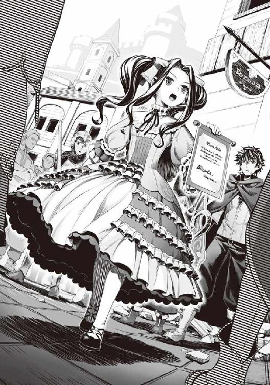
「う......」
状況に呑まれた元康が段々と我に返っていく。
「ナオフミ様！」
ラフタリアが俺の方に駆けてくる。
「大丈夫ですか」
「まあな。ところで......メルがアイツの妹？」
「聖人様......ではありませんね。改めまして、盾の勇者様、メルティと申します。城下町までお送りくださってありがとうございます。とても楽しい旅でした」
メルは俺に会釈して挨拶する。
「盾の勇者様、一体何があったのですか？」
「知らん。元康がまた勝手に俺の配下を寄越せと決闘を挑んできたんだ」
「またですか？」
そう呆れた声で言ったラフタリアが眉を寄せて元康を睨む。
すると元康はラフタリアの視線を軽くスルーして、フィーロに視線を合わせた。
「お嬢さん、お名前は？」
「えっとねーフィーロ」
「素直に答えるな！」
元康の奴、フィーロにキザったらしく手を添える。
「コイツに馬車馬のように働かされているのだろう？ 俺が救ってあげよう」
「まあ、馬車馬のように重い馬車を毎日引かせているな」
それは素直に認めないといけない。そういう生き物だし。
引かせないとうるさい。まさしくギャーギャーと。
「貴様────！ まさかあのデブ鳥と同じようにフィーロちゃんをコキ使っているのか！」
元康がうるさいな。そんな事、俺の勝手だろうが。
「フィーロちゃんを解放しろ！」
「いい加減にしろよ、お前！」
だからさっきからやめろと周りに注意されているだろうが。
元康が殺気を放って俺に槍を向ける。
「ですから決闘はダメですわ」
メルちゃんとやらが注意するが、元康はどこ吹く風だ。
問答無用か？ 女と来たら常識が吹き飛ぶタイプだな。
「お嬢さん達！ 早く逃げるんだ！ コイツはとても危険な男なんだ」
元康がフィーロに向けて必死に良い男アピールをしている。
そいつはお前が先ほどまで、殺す殺す連呼していたデブ鳥だぞ。
ああ、そういえば今は人の姿だったな。一般基準では美少女だからか。元康らしい発想だ。
「えー？ ごしゅじんさま危険じゃないよー？」
「ごしゅじんさま、だと!? てめえ！ エアストジャベリン！」
元康が警告を無視してスキルを放つ。
「ごしゅじんさまになにするの！」
「大丈夫だよフィーロちゃん！ 俺が君を救ってあげるからね」
人の話を聞け！ 戦うなと言われているだろうが！
「しょうがありませんね......」
メルが目を瞑って手を上げる。
「フィーロちゃん。お願いします。槍の勇者様を止めてください」
「うん！ フィーロはごしゅじんさまを守るー！」
フィーロが元康の前に立つ。
「さあ、道を開けてフィーロちゃん。そいつを処分できない」
しかしフィーロは元康に道を譲らず、腕を広げる。
「フィーロの事、デブ鳥って言った」
「尚文！ 貴様、女の子になんてことを言うんだ」
「お前だ。お前がフィーロに今さっき言った言葉だ。ぶっ殺すとも言っていたな」
「前に会った時もフィーロの事笑ったし、槍の人きらーい」
「笑う？ いつ俺が君を笑ったと言うんだい？」
ボフンと音を立ててフィーロは本当の姿に戻る。そう、フィロリアル・クイーンの姿に。
「へ？ アレ？」
元康はフィロリアル・クイーンになったフィーロを見て硬直していた。なんとなく股間を押さえようとしているようなポーズになりかかっている。
フィーロは唖然としている元康の股間目がけて強靭な足で蹴り上げた。
「ああああああ────」
俺には見えた。元康が困惑した表情のまま、錐揉み回転で一〇メートル以上飛んでいくのが。
さらにはファールカップが粉々に砕け散っていた。
「うげ！」
「フィーロの勝ちー！」
フィーロが片方の羽を上げてガッツポーズを取る。
今度こそ潰れたか？ いや、おそらく平気だろうな。ファールカップがあったし。
ラフタリアが青い顔をしてあわあわと呟いていたが、まあ良いだろ。
さすがに取り巻きも不快だったのか助けようとしない、というか助けられない状況だ。
周りのギャラリーも歓声を上げている。この場にいた者にとって、どっちの主張が正しいのかは一目瞭然だからな。
いやぁ......さっきの不愉快な気分が若干晴れたな。
「槍の勇者様を治療院へお運びください」
騒ぎを聞いて駆けつけてきた兵士が、元康を担いで連れていく。
「さて、姉上？ ずいぶんとワガママをしていられるようにお見受けしますが、どういうことでしょうか？ 事と場合によっては母上に報告することになりますよ？」
「わ、私は、勇者様の補佐として責務を全うしているだけですわ」
「とてもそうは見えませんでしたが？」
「今回の事だけで判断するのはいけないことよ。メルティ」
「そうでしょうか？ 報告では姉上の蛮行が目立つようですが？」
「妹の分際で私に歯向かうの？」
「その言葉、そっくり姉上にお返ししますわ」
「チッ......」
とビッチが舌打ちして俺達を睨みつける。
どういう関係なんだ？ 見た感じ、このメルティの方が、権力を持っているように見える。
逃げるようにビッチとその仲間達は元康を追いかけていった。
「ごしゅじんさま褒めてー」
フィーロが自分のやった行いに対して対価を要求してくる。
しょうがないな。俺はフィーロの頭を撫でてやる。
「よしよし。今まで元康に会ったら撥ね飛ばしていたみたいだしな。よくやった。凄く爽快な瞬間だったんだぞ？」
「うん。見かけるたびに蹴ったの」
「そうかそうか、偉いぞー」
「えへへー」
「どうして褒めているんですか！」
ラフタリアに怒られた。
しかし俺は反省しない。フィーロが元康にやったことは素晴らしいことだからだ。
「まったく......勇者様達は......」
メルティが額に手を当てて話しかけてくる。
「あまり城下町で騒ぎを起こさないでいただきたいです」
「えっと......一応、礼を言おう」
「まずはこのような場所ではなく、もう少しゆっくりできる場所で話をしましょうか」
辺りを見ると、ギャラリーがこっちに注目している。
確かにそうだな。こんな場所で何を話していたか聞かれるのは正直よくない。
「わかった」
「盾の勇者様」
俺を庇った兵士達が両手を合わせて懇願している。
「はいはい。お前等もついてくるんだろ？ 何の用だか知らないが......」
「私達は盾の勇者様を捕まえようとしていたわけではありません。それは信じてください」
あの状況に割り込んできたわけだし、任務に忠実だとしても......話を聞くくらいはしてもいいか。
四話 志願者
「というわけで、ここが俺の贔屓にしている武器屋だ。さっき来たよな」
「はい」
「アンちゃん。少し説明してくれないか？」
「色々あった。ここで会議したい」
「幾らなんでもそりゃあないぜ。どこか余所を当たってくれ」
俺は城下町で人と話ができそうな場所が武器屋しか思い浮かばなかった。
なので、そのまま連れてきた。
「他というと魔物商のテントくらいしかないぞ」
「アンちゃん。魔物商って......」
ああ、親父も知っているのか。奴が本当はどんな商売をしているかを。
「子供を連れてあそこに行くくらいなら、しょうがねえな......」
「ということで店の了解は取った。それで？ お前は何者なんだ？ メルティだったか？」
「わたしは、メルロマルク王位継承権一位、第二王女メルティ＝メルロマルクと言います」
「は？」
えっと、ビッチって長女だよな？ なのに第二王女の方が継承権が上？
「姉上はあの性格ゆえ、昔から色々と問題を起こし、今では継承権がわたしよりも低いのです」
まあ確かに、ビッチに比べて話は通じそうではある。
って何、空気に呑まれて信じようとしているんだ？
腐ってもあのビッチの血縁者、つまりクズ王の娘なんだから信用できない。
「フィーロ」
「なーに？」
「この子ともう遊んではいけませんよ？」
「ナオフミ様、なんでお父さんみたいな言い方でそれとなく酷いことを言っているんですか！」
だってビッチの妹だろ？ 継承権がビッチよりも上だというのはきっとぶりっ子が上手なのだろう。この幼い年齢でビッチ以上に魔性の女である可能性が高い。
目的はフィーロか？ ということは、元康の使いか！
俺を信用させようとしてあんな茶番をしたのか！ ありえる！
疫病の流行した東の村近隣から潜入とは考えたな。きっと城にフィーロを入れたと同時に、捕まえるつもりだったんじゃないか？ ラフタリアが駆けつけなかったらどうなっていたことか。
「それで──」
「悪いが話はここまでだ。俺はお前を信用できない。むしろお前の経歴を聞いたことで信用できなくなった」
「人の話は最後まで聞いてください！」
「お前の姉と父親は人の話を聞いたか？ 残念だが会話も成立しないぞ」
真実を話したって信じてくれるとは限らないんだ。
ましてやコイツはあのクズの血縁者。信じろと言われたところで無理な話だ。
「先ほどの借りは城下町まで送ってきた礼だと受け取っておく。さあ、出ていけ出ていけ！」
「この──」
と、第二王女が怒るよりも早く、武器屋に騎士連中が顔を覗かせた。
「メルティ様、王がお呼びです。どうかご同行をお願いします」
「......わかりました」
子供のように怒りを露にしたかと思ったが、第二王女は服をギュッと握り、表情を整えて騎士についていった。
「じゃあね。フィーロちゃん」
「うん。またね」
残念ながら次はない。お前と元康にフィーロをやるつもりはない。
まったく、この国の連中はつくづく俺からむしり取ろうとしやがる。
「ナオフミ様、少しは話を聞いてあげても良かったのではありませんか？」
「そうだぜ、アンちゃん」
「悪いが王族ってだけで拒否だ」
「盾の勇者様......」
「なんだ？ まだお前達もいたのか」
第二王女と一緒に帰ったと思ったんだが、先ほど俺達を追いかけてきた兵士がまだいた。
とんだ茶番に付き合わされてしまった。この兵士もグルだろう。
俺が手で追い返そうとするが一向に引かない。
「帰れよ！ お前等と話をすることは何もない」
「話を聞いてくださるまで一歩も引きません！」
ああもう......どうせフィーロを第二王女に渡せとかそんな話だろ？
「話だけは聞いてやる。言ってみろ」
じゃなきゃこいつ等はどこまでも付いてきそうだ。
「はい......波の......間、だけですが、ご一緒させてください」
「はあ？」
何を言っているんだ？ 俺は素っ頓狂な声を出しながら少年を見る。
「前の波の時に僕達、下級兵士は盾の勇者様の戦い方に感銘を受けまして......その、自分はリユート村出身で、盾の勇者様に村のみんなを助けてもらった恩を返したいのです」
「そうなのか？」
「はい。そして、盾の勇者様の戦いを見て、本当にみんなを守ってくれる勇者は盾の勇者様だと考えを共にする者が集まったのです」
「俺をねー......騎士団じゃ風当たり厳しいんじゃないか？」
なーんか、この国の連中って俺に非協力的だからな。波の時は魔物を引き寄せていた俺に向かって火の雨を降らせたし。
「はい。厳しいのが現状です。ですが、盾の勇者様が守ってくださったように、僕達も、人々を守る力になりたいのです」
「それで俺を捜していたと？」
「町の見回りの時に盾の勇者様を見つけた者はこの話をしようと皆で決めていたんですよ」
「どうだかな」
「私達の役目は波と戦うことではありますが、それよりも国民への被害を抑えるのが最優先であります」
高尚な考えだ。あの勇者共に聞かせてやりたい言葉だな。
「ですので、その......盾の勇者様、どうか波の時にご一緒させてください」
「別に波で戦いたいだけなら俺じゃなくても良いんじゃないか？」
この提案には裏がある。
おそらく波との戦いによって、より活躍した兵士や騎士は出世ができるという保証のようなものだ。そうなると勇者と同行する仲間として波で活躍すればそれだけで自身の立場が向上する。
いくら勇者といっても一人で波を倒せるわけでもないし、戦力は必要だ。
ステータス魔法、仲間の項目には『編隊』という項目が存在する。おそらく波に備えたものだろう。
これを使用して隊を作って戦うというのが、俺の考える波との正しい戦い方だ。
どちらかというと、ネットゲームのギルドとかチームで競う攻防戦のようなものではないだろうか。ここでは敵が人間ではないが、感覚に間違いはないと思う。
じゃないとあんなに大量の魔物を相手にして一人で戦うなんて無謀極まりない。
確かにボス級の魔物を倒すのはＬｖの高いエースプレイヤー......ゲームじゃないから勇者が役目を背負うのだろうが、他の雑魚はこの世界の住人でも対処できるはずだ。
前回の波がそれを証明している。
以前の波......リユート村という城下町から近い場所で波が起こったから、騎士団が駆けつけることができたが次はわからない。
この国も広い。もしも遠い場所に出たら大惨事だ。
そうなったら少人数で被害を抑えなくてはならなくなる。
まあ波での戦いにおける定石は置いて、目の前の少年がどうしてこんな提案をしてきたのかを知りたい。競争が厳しいから一番競争率の低そうな俺に頭を下げに来た、というのが妥当だろう。
もしくはこの話自体が大嘘で、波で転送されたと同時に俺を捕まえる。あるいはやる気を見せて転送する直前に断るとかそんな感じだろうか？
「いえ、僕達は盾の勇者様と一緒に国民を守りたいのです」
表面上は何とでも言える。
「目的は出世か？」
「違います」
即答と言えるほどの早さで少年は首を振る。そして俺の後ろの方にいた魔法使いっぽい衣装の少年に手招きする。魔法使いっぽいといっても魔法屋みたいな紫色の衣装ではなく、なんか安っぽい黄色だ。そして二人で並んで俺に頭を下げた。
「僕......出身がリユート村なんです。ですから盾の勇者様に家族を助けてもらって......だからせめて少しでもお役に立ちたくて」
「ああ、なるほどね」
家族が助けてもらったから恩を返したい奴か。リユート村の連中なら少しは信用できる。
「確かに勇者様の言う通りの者もいるとは思います。ですが、僕は盾の勇者様のお力になりたいのです」
「そうか、物好きもいたもんだな......ん？」
「あの......勇者様」
魔法使いっぽい衣装の少年が顔を上げる。
......よく見るとこの子、亜人だ。
人間至上主義のこの国で亜人、しかも兵士になるってことは何か思うところがあるのかもしれない。
以前の波で騎士団と同伴していた魔法使い達と比べて安っぽい衣装を着ているのは、何も年齢や階級だけが原因ではなさそうだな。
「こいつ、盾の勇者様のファンなんですよ。昔から、この国とは別の勇者の伝承を聞いていて盾の勇者様にあこがれていたんです」
「へー......」
ごくごく一部の俺を信用している連中が力になりたいということか。ということはこの少年は話していないが、行商している間に救った村とかの出身者が同じ思いで集まったとかかもしれない。
......試してみるか。
俺は馬車に載せていた袋から売れ残りのアクセサリーを出す。
「銀貨一五〇枚だ。それだけの金額を出せたら考えてやる」
「え......」
「なんだ？ お前等はこれを買うことで俺から信用が得られるんだぞ？」
「ナオフミ様......」
ラフタリアが若干呆れ顔で言った。まあ仲間になりたければ金をくれ、だもんな。普通は逆だ。
性分なんだよ。出世、もしくは金銭目的なら、ここで引き下がるだろ。
正直、第二王女との繋がりがあるかもしれないから信用できないし。
「......わかりました。今からお金をみんなで募ってきますので待っていてください」
そう言って、代表の少年兵が一人走っていってしまう。
「アンちゃん、酷い奴だな」
「美味い話には裏があるんだよ。ウソを吐いている疑惑が晴れないんだ」
残った魔法使い風の少年兵は黙ってその場で佇んでいる。
「俺に幻滅したか？」
魔法使い風の少年兵は首を横に振る。
「信じてます」
「......ふん」
モノ好きな奴だ、と思いながらしばらく待っていると少年兵が息を切らしてやってきた。
「はぁ......はぁ......みんなで、カンパして持ってきました」
「早かったな」
「騎士団の詰め所で集まる予定でしたので、ついでに寮も回ってきました。ほぼ全員のお金です」
ふむ......色々と回ってきたわけか。
それなりに高額な金銭を要求したつもりだが、と少年兵が持ってきた金袋の中を確認する。
「みんな、細々と貯めたお金を募金してくれました。これで信じてくださいますか？」
「ああ、わかったよ。代表者は何人だ？」
「えっと......私を入れて五人です」
「そうか」
俺は袋からアクセサリーを五つ出して、金袋と一緒に少年兵へ渡す。
そのうちの一つは一定のダメージを肩代わりするという付与効果のある便利なネックレスだ。
実験するのもどうかと思うし、偶然できたのものを一つだけ与える。
波はいつ死ぬかわからないからな。立候補者には持たせて良いだろう。
「あの......これ......」
「金を出せとは言ったが貰うとは言っていない。ウソか本当かを見極めるためだ。そのお陰でお前等の方でも本気でやる気なのか出世目的なだけの奴かを見分けられたろ」
まあこの金の出所が国だったらそれまでだけどな。最低限の礼儀は見せたから一応は信じてやる。
俺は『編隊』の項目から分隊長を目の前の少年に向けて送った。
パーティーの状態はリーダーが俺でラフタリア、フィーロと続く。その下に、分隊長の権限を与えたのだ。
この権限は俺の方が優先されるパーティー状態。つまり、分隊長に経験値を渡さないようにすることも可能だ。
「これは......」
「わからないか？」
「いえ」
「お前が代表じゃないならソイツにそれを渡せ。参加したい奴を集めればいい。だけど勘違いするなよ。俺をただ利用したり、何か不埒な事をしようとしたりしたら任を解いて解散させる」
「はい！ ありがとうございました！」
二人揃って敬礼し、立ち去っていった。
思うところはあるが、これが本当だったら少しずつこの国でも信用されだしているのかもしれない。
無論、言った通り何かあれば容赦はしないが。
「さて、じゃあ次はクラスアップに行くとするか」
「アンちゃん。手段は酷いがやっぱ勇者なんだな」
「本当かどうかを見極めるためだったんですね」
「言ってろ。あれだけやって嘘かもしれないんだ。何かしたら報いを受けてもらうさ」
少年兵達を送り出した俺達は、武器屋を後にした。
余計な面倒があったが、目的はクラスアップだったわけだしな。
五話 王直々の命令
俺達はクラスアップするために龍刻の砂時計へ足を運ぶ。
「そういえば、クラスアップは可能性を広げるというが、ラフタリアはどんな風にしたい？」
「私はナオフミ様の思う通りクラスアップしたいです」
「......それはやめておけ。ラフタリア、お前が自分で自分の可能性を決めろ」
昔やったゲームだと光のルートと闇のルートが選べるクラスチェンジというシステムがあったが、大事なことは本人に決めさせるべきだ。
「波が終わって俺が元の世界に帰った時、俺が居なくなっても生きていけると思う方になれ」
「え......ナオフミ様は帰ってしまうのですか？」
「ああ」
この世界に何の愛着もない。恩を受けた連中もいるにはいるが、それも世界を救ったら報いることになるだろう。となれば、こんな不快な世界に残る意味がない。
「私は連れていってくださらないのですか？」
「どこへ？」
何を言ってるんだ？ 俺の世界にラフタリアのような子が来ても奇異な目で見られるだけだ。
「フィーロが運んでいきたい。どこへ行くの？」
「フィーロじゃ行けないなぁ......」
「そうなの？」
「その話は置いておけ。......フィーロはどういうクラスアップをしたい？」
「えっとねーフィーロは毒を吐けるようになりたい」
「............」
絶句した。何を言っているんだ？ この鳥は。
アレか、最近毒ばかり使う魔物と戦ってきたからフィーロが変な憧れを抱いたのか？
バイオプラントとかドラゴンゾンビとか。
「既に吐いているがな」
毒舌という意味で。空気を読まずにべらべらとよくしゃべる。
「ホント!?」
フーッと口をすぼめてフィーロは息を吐く。
「出ないよ？」
「そういう意味じゃねぇから。ともかく行ってみよう」
俺達はクラスアップへの期待に胸を弾ませて龍刻の砂時計へ向かった。
龍刻の砂時計はメルロマルクの城下町の中でも高い位置にある。見晴らしが良い場所でもある。この辺りは日当たりも良いのか、のんきに日向ぼっこしている連中も居るみたいだ。
そう思いながら歩いていくと、龍刻の砂時計のある場所に辿り着いた。
相変わらず、静かだけど重々しい雰囲気の漂う施設だ。
「盾の勇者様ですね」
前に来た時と態度の変わらないシスターが不快そうに話しかけてくる。
「ああ......」
「今回は何の御用で？」
「クラスアップをしたい」
「では......一人に付き、金貨一五枚をお納めください」
金貨一五枚だと!? 幾らなんでも高すぎるだろ！
シスターは表情こそ変えていないが目が笑っている。
払えないと見て、馬鹿にでもするつもりだったのか？
「一人金貨一五枚だな？」
ラフタリアとフィーロの二人だが、少し足りない。
まだ波まで余裕があるからその間に稼ぐのを視野に入れてっと。
「ラフタリア、お前が先にクラスアップしろ」
「えー！ お姉ちゃんだけ？」
「足りないんだからしょうがないだろ。次に来た時にお前もしてやるから我慢しろ。帰りに良い物を買ってやるから」
「ぶー」
元康を蹴り上げていた件で、元々褒美を買ってやろうと思っていたんだ。丁度良いだろう。
俺は渋々ラフタリアの分である金貨一五枚相当の金の入った袋を見せる。
するとシスターの奴、顔色を変えて、書類を受付から取り出した。
「......盾の勇者様は禁止されています」
「なんだと!? どういう意味だ！」
「王直々の命令です。盾の勇者様一行のクラスアップの許可は下りません」
あのクズ王！ 本格的にウザイことをかましてやがった！
わざわざ法外なクラスアップ費用を要求し、それを満たしたら許可を下ろさないで突っぱねるとかいい加減にしろ！ Ｌｖアップができないってどうすりゃ良いんだよ！
転職ができるはずなのにしないで行くってどんなやりこみプレイだコラ！
「ふざけるな！」
「規則です。何より盾の勇者様は最初から......いえ、なんでもありません」
「最初から、なんだ！」
俺がいきり立つと、受付の奥から騎士っぽいのがずらずらと出てくる。
「チッ！ わかったよ！」
足に力を入れて床を蹴り、大きな音を立てながら俺達は龍刻の砂時計を後にした。
第二王女が本当に俺に力を貸そうとしているか見極めるべきだった。
第一継承権者らしいし、本当に話の通じる奴ならばクラスアップも許しただろう。
それにここで何もできなければ追い返す真っ当な理由にもなった。
「しかし、どうしましょう」
ラフタリアが困ったように呟く。確かにこれは大問題だ。
「ねえねえ、あの砂時計はなんなのー？ フィーロもっと見ていたかった」
「我慢しろ」
一応再度ヘルプを見てみる。
......クラスアップが見つかった。今みたらあっさりと。
クラスアップとは勇者の仲間となったメンバーの可能性を広げる儀式です。
国にある龍刻の砂時計へ行きましょう。
★が入るまで育ててからさせることを推奨します。
勇者には成長限界は存在しません。
勇者には成長限界の制限がないのか......ということは、俺だけ40以上になるのか。
だけど、これは実に不快だ！
どうにかしてラフタリア達にクラスアップをさせなければ攻撃面で不安が出てくる。
「しょうがない、これは後回しにしておこう」
幸い、波が過ぎるまではＬｖ上げをする予定はなかったし、その後に考えれば良い。
例えば、紹介状を持っていそうな冒険者にラフタリア達を預けて、クラスアップさせるという奥の手も考えにある。金で釣ればどうにかなるだろう。
そういや奴隷商の奴隷にＬｖ40超えがいたな。あんまり奴の所には行きたくないがしょうがない。
「よし、じゃあこれから奴隷商の所へ行くか」
フィーロが怯えた表情を浮かべる。
「フィーロを売るの？」
「売らないから安心しろ」
ビクビクしているフィーロにそう言うと俺は奴隷商の店へと足を向けた。それにしても、最悪な気分だ。フィーロに蹴られた元康の事でも思い出してこの鬱憤を晴らそう。
「ナオフミ様がこれまでにないほどの晴れやかな笑みを！」
ラフタリアが騒がしいな。良いじゃないか思い出し笑いくらい。
六話 ウェルカム
俺達は奴隷商の所へ顔を出した。
「これはこれは勇者様。今日は何の御用で？」
「それよりも......」
俺は奴隷商の格好が非常に気になった。
......羽振りが良さそうな印象を受けるほど、装飾品が豪華になっているからだ。
「妙に金回りが良さそうだな」
「勇者様のお陰です。ハイ」
「は？」
「勇者様が行商へ出ているお陰でこちらも儲けさせてもらっているのですよ」
「どういう意味だ？」
理由が複数思い浮かぶが、決定打になる材料が足りない。
「まずはフィロリアル・クイーンの評判です。あの魔物はどうやったら手に入るのかと貴族の収集家が来るのですよ。ハイ」
ああ、フィーロが馬車を引くことによって、評判が上がるわけか。確かに珍しい魔物だろうし、どこで手に入るのかを調べたら、専門家である魔物商という顔もある、コイツの所へ行き着くのか。
俺に譲ってくれという貴族も何人かいたしな。
あの第二王女もそれが目的でフィーロに近づいたのだろう。
戦力であり、商売道具だからな。残念ながら安易に売るわけにいかない。
「後は口八丁で様々な魔物を購入していただくだけです。ハイ」
「お前もたいがいだな」
フィロリアル・クイーンになる条件は今のところ不明だ。
容易く売ることなどできるはずもない。
勇者が育てればクイーンになるのか？ フィーロ一匹でも面倒なのに、二匹とか考えたくもない。
「次に勇者様の奴隷を見て私の所の奴隷は質が良いと噂になったので、儲けさせてもらっているのですよ。ハイ」
今度はラフタリアか。確かにラフタリアは俺から見ても美少女だと思えるほど整った顔つき、体形をしているからなぁ。ラフタリアの出所を知ったら信用できる奴隷商、と箔がつくんだろう。
俺は奴隷商の評判を上げるのに一枚噛んでしまっているということになるわけだ。
「で、今回はどのようなご用件で？ 奴隷ですか？ それともフィロリアルの実験に協力を？」
「なあ、奴隷商。お前の所でクラスアップの斡旋とかできないか？」
「クラスアップですか？」
「ああ、ここのクズ王が俺の配下のクラスアップ許可を出さないんで困っているんだ。お前の所にＬｖ40超えの奴隷が居ただろ。紹介状とかあるのかと思ってな」
俺の頼みに奴隷商の奴、何やら考え込むように顎に手を当てる。
「勇者様のご希望にお応えできず非常に残念です。私共は紹介状を持っておりません」
「そうか......当てが外れたな」
あの奴隷は奴隷商の権力でクラスアップしたわけではなかったのか。
「クラスアップなら隣国などで信用を得ればその国にある龍刻の砂時計で可能ですよ」
「なに？」
ちょっと待て、龍刻の砂時計ってこの国以外にもあるのか。
「メルロマルク以外にも龍刻の砂時計はあるのか？」
「ええ、ですが信用を得るとなると非常に時間が掛かりますからねぇ......」
早急にクラスアップしたい俺にはその時間が非常に惜しい。
隣国にも盾の勇者の悪名が響いているだろうか？ 響いていた場合、難しいだろうな。
「盾の勇者様でもクラスアップしやすい国となると、傭兵の国ゼルトブル、亜人の国シルトヴェルト、シルドフリーデン辺りですかね。ハイ。他は少し時間が掛かると思いますよ」
「そんなにあるのか」
「ええ、勇者様にオススメはシルトヴェルトかシルドフリーデンですかね。あそこなら時間も掛けずに入国することが可能かと」
「ふむ......そこまで行くのにどれくらい掛かるんだ？」
「それぞれ、馬車でなら一ヶ月、船なら二週間は掛かります」
奴隷商は地図を持ってきて俺に道を教えてくれた。
確かに、一日の平均移動距離で逆算すると相当遠い。フィーロなら二週間と少しで到着するかどうかという範囲だ。大きく見積もって三週間は掛かると踏んだ方がいいな。
「飛竜ならもっと早く到着するでしょうが、勇者様の移動手段ですとこの辺りが妥当ですね」
「遠いな......」
しかし戦力アップを考えるのなら行かなければダメだろう。
その分、他の奴等に後れを取るが、ラフタリアとフィーロが成長しないんじゃ、ここに留まる意味がなくなる。必然的に俺達が亜人の国とやらに行くのは決定事項か。
「波が終わったら行くとしよう」
まったく、あのクズ王は俺を困らせることに情熱を傾けすぎだ。
「勇者様、今回の御用はそれだけでしょうか？」
揉み手をする奴隷商。このまま帰らせてもらえそうにないぞ......。
「なんならフィロリアル・クイーンに武器を購入するのをご検討なさっては？」
「フィーロに武器？」
「ぶきー？」
そういやフィーロには服以外は特に買い与えていなかったなぁ。
攻撃力は十分だけど波の事を考えると買うのも悪くはない。が、武器屋に頼んだ方が良い物を売ってくれそうだ。ドラゴンの骨を削って爪とか──。
「ちなみに魔物の武器は魔物商人の管轄なので、町の武器屋では扱っておりません。オーダーメイドなら別ですが、高くなりますよー？」
ぐ......考えを読まれた。
「......じゃあ頼む」
褒美も兼ねて買ってやろう。これで元康を蹴り飛ばしたら、面白いことになりそうだ。
奴隷商の奴、フィーロの方へ目を向ける。
すると機嫌よく鼻歌を歌っていた人型のフィーロが奴隷商に見られるや怯えるように俺の後ろに隠れた。やっぱり苦手なのか。
「武器となりそうな物だと突撃角か蹄鉄ですかね。防具だとフィロリアル用の鎧もありますが......」
フィーロの体形を考えると鎧は無理だろ。
オーダーメイドで作れなくはないが、変身するからすぐに着直す羽目になる。
「突撃角ってなんだ？」
「頭に付けさせる兜ですよ。突進時に使います」
「へー......」
蹄鉄は馬の蹄に付けるやつだったはずだ。
「後はツメですかね」
「ふむ、フィーロは何が欲しい？」
「え？」
フィーロの奴、奴隷商に怯えて話を聞いていなかったのか？
「頭に付ける兜か足に付ける靴みたいなやつ、後は鎧だ」
「うーん......フィーロ、変身するから、姿が変わった時に肉に食い込むのは、やー」
過去に洋裁屋の言った脅しが今も効いているのか。
人型時のフィーロの服は洋裁屋が作ってくれたものだ。魔力を服にして、フィロリアルの姿になるとリボンに変わる。
となると突撃角は魔物の姿だと問題はないが人間の姿だと重そうだな。蹄鉄も足に食い込むだろうし、鎧はサイズが合わないだろう。
ならば、以前フィーロの服を作ってくれた魔法屋に行って、あの糸を金属板で出せないかとか聞く手もあるが、凄く金が掛かりそうだ。防御力とか雀の涙になりそうだし。
「着脱を考えるとツメがよろしいかと、ハイ」
「じゃあ、ソレだけでいいか。フィーロ」
「うん」
「サイズを測りますので魔物の姿になっていただきたいのですが。ハイ」
「だ、そうだ」
「わかったー」
ボフンとフィーロは魔物の姿に戻って足を前に出す。
すると、それに合わせて現れた奴隷商の部下がフィーロの足のサイズを測った。
「ふむ......フィロリアルの平均よりかなり大きいですな」
「すぐには用意できそうにないか？」
「いえ、辛うじてサイズがあるかと思います。素材は鉄でよろしいですかな？」
こういう時って、どういう基準で攻撃力を期待できるんだろうか？
硬ければいいのか？ 鋭ければとか......。
「多少、金には余裕があるから質の良い物がいい」
「わかりました。では魔法鉄が現在用意できる限界ですね」
「ちなみに幾らだ？」
「勇者様には贔屓にしていただいているので、特別に相場の半額である金貨五枚で提供したいと思っております」
「更に値切って良いか？」
「勇者様の貪欲さに私、ゾクゾクします。わかりました。四枚で妥協しましょう」
「買った。ついでに良い手綱も付けろ」
「お売りしましょう！」
奴隷商の奴、テンションが高いよな。扱いやすくもあるけど、利用されているような気もする。そういう意味では商売上手で怖いよな。こいつ。
テントの奥から大きなツメが運び込まれる。
丁度フィーロの足に嵌りそうな大きさの、金属製のツメだ。
「よくこんなでかいのあったな」
「飛竜用のツメです。もっと大きなサイズもありますよ」
フィロリアル用ではないのか。
「これを履くの？」
「ああ、それがお前の武器だ」
フィーロは地面に置かれたツメに自分の足を乗せる。
「ピッタリのようですね」
みたいだな。後は紐でツメと足を結ぶだけだ。
フィーロは片足を上げて、ツメを付けた実感を確かめている。
「なんか変な感じー」
「慣れろ。慣れれば前よりも攻撃力の上昇が見込める」
フィーロの脚力での攻撃力は今でも高いのだ。更に高くなったということは......。
俺の脳裏にフィーロが元康を蹴った時の出来事が浮かぶ。
さっきは面白そうだと考えたが今度こそフィーロの脚力で蹴ったら引き裂いてしまいそうだ。想像ではやっても良いかと思ったが実際にやったら危険だな。
「フィーロ、今度槍を持った奴を蹴る時はツメを使って蹴ってはダメだぞ」
「なんでー？」
「さすがに玉が潰れるだけでは済まなくなるからだ」
まがりなりにも勇者だ。殺したら何が起こるかわからん。今更遅い気もするが。
「ふーん」
フィーロは買ってもらったツメに意識を集中していて話半分という感じだ。
ちゃんと聞いているのか？
俺は奴隷商に金貨四枚を渡す。
「世話になったな」
「そう思うのでしたらぜひ──」
「断る。......そうだ。念のためにツメの試し蹴りができないか？」
「何か蹴るの？」
「何分、こちらが用意した魔物を殺されては困るのですが。ハイ」
フィーロの蹴りじゃ試される魔物もたまったものじゃないと。
かといって、野生の魔物と戦わせては粗悪品を掴まされた時の対処が面倒だ。
まあ、城下町を出て草原に出れば......ってバルーンじゃ弱すぎて威力がわからないぞ。
「強めの魔物と戦わせたいが簡単に出会えるのか？」
「ゼルトブルのコロシアムに行けば思う存分戦わせることは可能です」
「遠いんだろ？」
「はい」
無理だな。波まであまり日数がない。
となると草原辺りで妥協するか。さすがに奴隷相手に試し蹴りなんてしたくない。
「そうですねー......このような状況にピッタリの依頼があるようですぞ」
奴隷商が部下から何かを聞き出して俺に言う。
「なんだ？」
「メルロマルクの下水道にはとある貴族が秘密裏に育成した魔物がいたのですが......育ちすぎて手に余る状況になっているそうです」
「魔物紋があるんじゃないのか？」
「常時作動し続けると何分、慣れてしまいまして」
どんな弊害だよ......。
「しかも育ちすぎた所為でしょうか、効きも悪いそうで......手をこまねいている状況だそうです」
城下町の下水を根城って......子供とかが遊びで入ったら、とんでもないことになるんじゃないか？
どこの映画だよ。都市部の下水を根城にする化け物って。
なんとなくだが、俺の脳内で魔物の姿がワニで固定される。
「まだ被害は出てませんが、近々、冒険者に依頼を出す。という話です」
「報酬は貰えるんだよな？」
「もちろんでございますです。ハイ」
俺は奴隷商の言葉に頷き、依頼を受けることを決めた。
「ではこちらです」
奴隷商は、テントの奥の方へ案内する。
やがてテントを抜けると、大きなトンネルのような城下町の下水の入り口の一つに案内された。
「......」
事前準備がしてあるってどうなんだよ。
「こちらがメルロマルク下水道の地図でございます」
奴隷商が寄越した地図には、魔法が掛かっていて、目的地が点灯していた。
「今回、討伐して欲しい魔物の所在がわかるようになっておりますです。ハイ」
「わかった。ところでこの魔物......何Ｌｖなんだ？」
「飼い主の最後の記録ではＬｖ50ですハイ。現在は不明です」
つまり50以上か。クラスアップ済みとかどんだけだよ。
ただ、飼い魔物は野生の魔物のように勝手にＬｖが上がり続けることはないらしいから、精々メルロマルクの下水道内で生息する魔物を餌に育つ程度......か。
異臭漂う下水道を鼻を摘んで進む。
「くさーい」
「そうですね......」
「我慢しろ、もうすぐだから」
特に危険な魔物には遭遇せず、下水道を進むことができた。
所々で奴隷商の部下が待っていて、道を教えてくれたからアッサリ辿り着けたな。
で、遭遇したのは......やっぱりワニの魔物だった。
色は黄色の掛かった白、目が赤くて暗い下水道でも不気味に光っている。
大きさは全長六メートル。かなり大きいな。ドラゴンほどじゃないけど。強そうではある。
「グルルルル......」
「これと戦うのー？」
「そうだ。ついでにラフタリアも新しく買った剣の試し切りをしてくれ」
「はい！」
俺達はワニの魔物、クリームアリゲーターとの戦いを始めた。
「行くぞ！」
俺が大口を開いて俺達に喰らいつこうとするクリームアリゲーターのアギトを紙一重でかわし、口が閉じたのを確認すると同時に体を使って、開かないように押さえ込む。
ワニの対処法は昔、書物で読んだことがあるんだ。もちろん、現実でのワニの対処方法なんだけどな。
だが、これは異世界でも通用したらしい。
「グ!?」
俺が押さえ込むとクリームアリゲーターは目を白黒させながら必死に口を開けようする。
しかし、俺もかなり力を入れているから失敗してしまったようだ。
「今だ！」
「てい！」
ラフタリアが暴れるクリームアリゲーターの尻尾に向かって新しく買った剣を振りかぶる。
文字にするならズバッと音がするくらいの見事な切れ方でクリームアリゲーターの尻尾は輪切りにされて飛んでいった。
「──!?」
「お姉ちゃんすごーい！ フィーロも負けないよー！」
フィーロは思いっきり腰を落として、クリームアリゲーターの横っ腹に向けて蹴りを入れた。
クリームアリゲーターが上に向かって吹き飛ばされる。
「とどめー」
蹴りで宙に浮いたフィーロがクリームアリゲーターの頭めがけて落下した。
その後は......まあ頭蓋骨が陥没したクリームアリゲーターはアッサリと絶命した。落下地点の近くにいた俺は血まみれになったけどな。
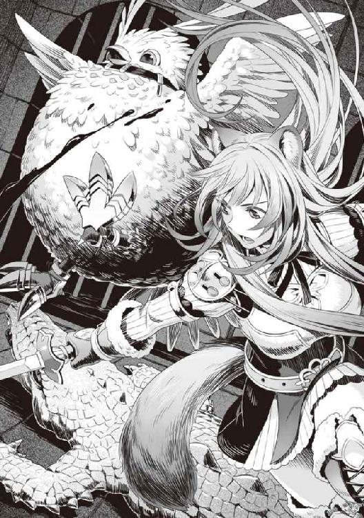
「すごいすごーい！ ツメすごーい。無かったらもう少し苦労したと思うー！」
「あのなー......」
ツメの素晴らしさを実感したフィーロは大興奮でピョンピョンと跳ねて勝利を宣言していた。
最低Ｌｖ50の魔物だから、武器を試すために戦ったにしては大きな成果かな？
こうしてラフタリアの剣とフィーロのツメの試し蹴りはアッサリと終わった。
急いで奴隷商のテントに戻る。もちろん、俺は血を洗い流したけどな。
ちなみにクリームアリゲーターを解体して盾に吸わせてみたけど、キメラヴァイパーシールドよりも弱い盾だった。盾の解放ボーナスも夜間戦闘技能１と夜目が利くようになる技能のみである。
「いやはや、僅かな時間で討伐できたと聞いて、盾の勇者様一行の強さに驚愕です。ハイ」
若干興奮気味で奴隷商は俺に報酬の金を寄越した。これでツメの出費は結果的にプラスだな。
もう、ここには用はないな......と思ったところで思い出した。
過去に盗賊を倒した時、奴隷として売れないかと思ったんだけど面倒だったんでやめた。
「この国で人間は無理ですね。もっと深い所に行けば買う方もいるでしょうが、その分質を求められますし、リスクもあります」
なるほど、この国では安全なラインは亜人か。人間至上主義の国だからな。
「そうか、じゃあな」
こうして俺達は奴隷商のテントを後にした。フィーロは人の姿になり、脱げたツメを紐で縛って持っている。こんな感じで買い物を終えた俺達は武器屋に戻った。
「アンちゃんの馬車、結構くたびれているな」
「かなり使っているからな」
なんだかんだでフィーロは馬車を大事にしているが、修理まではできない。
一応は俺が補修しているが、限度がある。
「なんなら作るか？」
「ホント？」
フィーロの目が期待に輝く。
「さっきツメを買ってやったばかりだろうが」
「でもー......」
最近ガタが来てるから新調するか悩んでいたんだけど、新しく買うほどかというと微妙なところだよな。
「できるだけ安く作ってやろうか？」
そうだなー......これからの行商を考えると耐久性とかも考慮すべきだろうか？ 甘やかすわけじゃないけど、こう何度も補修する必要のある木製の安物馬車より頑丈な馬車を作った方が最終的には得かもしれない。
「なるだけ丈夫で、たくさんの物を積載できる馬車が良いな。予算は金貨一〇枚くらいで」
「それだけあれば立派な馬車ができる。装飾にこだわる必要はないんだろ？」
「当たり前だ。実用性を重視してくれていい。重量もある程度は重くても平気みたいだからな」
フィーロが片手で馬車を引いている時がある。もう少し重くても問題ないだろう。
「わかったぜ、アンちゃん。任せてくれ。鳥の嬢ちゃんもそれで良いか？」
「えっとねー。おっきな家みたいのが良いのー」
「そりゃあすげえな」
予算金額を速攻でオーバーしそうだ。そう言おうとしたら親父が手で大丈夫だとサインする。
「それでね」
「あのな嬢ちゃん。夢を広げるのも良いが今の嬢ちゃんで引けるのか？ もっと強く、力を出せるようになってからの方が良いと思うぜ」
「うー......」
「せっかく作っても、引けなかったら恥ずかしいだろ？」
「う、うん！」
おお、説得が上手いな。俺だったら高いからダメだとバッサリと切り捨てる。
「じゃあ、ある程度デザインはこっちが決めるけど良いか？」
「うん！」
「というわけだ。鳥の嬢ちゃんがどれだけ引けるかわからないから、こっちもある程度目算になる」
まあ、オーダーメイドになるしな。貴族が引く馬車とは種類が違うし、どれだけの重量にすれば良いかも判断しづらいだろう。
「わかった。頼む」
「おうよ」
さて、まだ波まである程度余裕がある。
馬車や武器ができるまで時間が必要だろうし、行商をするとしよう。
七話 副将軍......
それから俺達は、まだ在庫処理で困っているだろうと考えて、南西の村に向かい作物を安く購入した。
というのも、北の方で飢饉があったらしいので高く売れると見込んでいたのだ。
ここは以前バイオプラントという植物型の魔物で困っていた村だ。
俺達がその事件を解決したんだが、その際バイオプラントの種を改造して渡しておいたのだ。
だから、食料を安く売ってくれるだろうと考えた。
そして、恩人ということもあり南西の村の連中も喜んで作物を売ってくれた。
見た感じ、俺が改造したバイオプラントの種は植えたようだな。トマトのような赤い実が南西の村の畑に生い茂っていた。
その荷物を載せて北へ向かう道中で立ち寄った町でのこと。
「あ？ 商業通行手形だと？」
町へ入ろうとした時、検問所で見張りの奴に領主への通行税と商業税を請求された。
だからリユート村発行の商業通行手形を見せたのだが......。
「そんなものは受け付けん！ さっさと払え！」
「ですが」
ラフタリアの交渉にも見張りは応じず、金の請求ばかり。
俺も前に出て交渉しようとしたんだけど見張りは一歩も引かなかった。
「強情な奴だ！」
うーむ......ここまで強く出るには何か理由があるな。
この世界で行商を始めて幾つか学んだことがある。
一つは脅迫。力による威圧を行うことで無理を通したり、弱みを握って高めに買わせたりすること。これは舐めた態度の相手に効く。ただ、この検問所の相手の反応を見る限り俺達を舐めているわけではなさそうだ。次に交渉。相手と話をしながらノリで下げたり上げたりを行うことで人間関係を循環させる。敵意のない相手に効く。今回は敵意というか......焦りが相手から伝わってくるな。
この二つが効かない相手となると、考えられる理由は......。
「ここの領主はとんでもない奴みたいだな」
ふと、町の方を見ながら呟く。すると見張りの奴の表情が若干変化した。
「領主様の悪口を言うな！ 不敬罪に処すぞ」
なるほどな。これは上が問題を抱えているパターンだ。この場合、脅迫も交渉も意味がない。
あっちは引くに引けないのだ。引いてしまえば自分が処罰されてしまう。
それでも引かせる方法といったら騒ぎを起こすか、その領主が出てくるまで問題を起こすしかない。けど......そこまでのリスクを負うメリットが俺にはなかった。
「わかったよ。お前も苦労しているな」
言われた金額を見張りに渡す。すると見張りの奴、肩透かしを食らったように呆けた。
「ああ......それなら良いんだ」
そして見張りはポツリと耳元で答える。
「すまない......」
「しょうがないさ」
クズ王の管轄かな？ この町にも腐った領主がいるのだろう。
この町......殆どの場所に税が掛かっているのか、日用品から食料、武器防具、細工品、挙句の果てに宿代まで、なにもかもが割高だ。
商業も衰退傾向にあって市場も活気がない。相当重い税金が掛けられているに違いないだろう。
「どこの村で食料を買ってくれるか、情報を集めてくる」
「わかりました」
「はーい！ ごしゅじんさまーおみやげ待ってるねー」
「あれだけ食料があってまだ欲しいのか！」
フィーロの奴、ここの物価が高いというのに土産を要求するとは......。
宿の室内にラフタリアと人型になっているフィーロをおいて俺は酒場の方に顔を出した。
ちなみに盾をブックシールドに変えて、ラフな格好で酒場に入っていく。
そこで見覚えのある、遭いたくない奴を見かけた。
「──のようです」
弓を持っているというのになぜか剣を腰に差し、格好も地味で質の悪い装備をしている。しかも俺のブックシールドと似たような偽装ができる小さな弓だ。初対面だったら手甲と勘違いするな。
そして仲間なのか取り巻きの一人に目立つ色の鎧を着せて、自分はその陰に隠れている。そんな感じだ。
そう、弓の勇者である樹が酒場の隅で何やら話し合いをしている。
こいつも元康と同じく、別の日本からやってきた勇者だ。
年齢は一七だったか、ピアノが弾けそうな少年といった面持ちだ。若干押しが弱そうに見える。
樹の奴、こっちに気付いていないようだ。
何を話しているのか......近づける範囲まで行って聞き耳を立ててみよう。
「ここの領主は......」
どうやら仲間達とここの領主について情報を収集していたみたいだ。
樹達の話によると、領主は国の方針以上に税を引き上げ、近隣の商人から賄賂を受け取り、用心棒を雇って異議を唱えるものは厳罰に処しているとか。それもこれも全ては私腹を肥やすためらしい。これまたありきたりなダメ領主の話だな。
「これは少し、懲らしめてあげなくてはいけませんね」
おおっと！ 樹の台詞に危うく足を滑らせるところだった。
まずどこからツッコミを入れたら良いものか......。
自分の正体を意味もなく隠して、何がしたいのかは置いておくとして、どこの副将軍だ、お前は。
世直しの旅でもしているつもりになっているのだろうか。
噂の限りでは弓の勇者が何かした、という話はまるで聞かない。
結果論だけなら俺も神鳥の聖人とか言われているから人の事は言えない。
だが俺の場合、盾の勇者という悪名があるからな。未だに正体がバレると警戒されるので、最近では勝手に勘違いしてくれる聖人でごまかしている。時々盾の悪魔！ とか罵られるからな。
少なくとも俺の知る範囲で弓の勇者である樹が経歴を隠す理由が思い浮かばない。
これは......国の依頼ってやつか？ だが、樹の情報は少なすぎる。後で弓の勇者が解決した、という情報すら流れてこない。意図的に隠しているのか......？
「では皆さん、行きましょう」
話を終えた樹達は酒場を後にして夜の町に消えていった。
......明日にはこの町の領主は降ろされているな。
たぶん、領主の屋敷で一暴れした後、部下である仲間が樹の正体を明かして説教するとかそんなところだろう。俺の世界の時代劇で世直しの旅に出るご老公みたいな感じで。
そしてクズ王の耳に入ってここの領主は別の奴に代わるとか安易な結末が予想できる。
......馬鹿じゃないのか？ 関わり合いになるのも面倒だ。
俺は当初の目的である食料の売却先の情報を軽く探して、その日は宿に戻った。
フィーロへの土産？ そんなもん、こんな物価の高い街で買うわけないだろ。
当然土産を持ってこなかった俺に対してフィーロは何か言っていたが無視した。
翌朝、俺の予想通り国から雇われた冒険者がこの町を密かに視察し、領主は失脚したという話が町にもたらされた。
町の往来のど真ん中で、美人の女の子と何やら世間話をしている樹達を見かける。
「ふぇええ！ 本当に、ありがとうございましたぁ」
「いえいえ、なんてことはありませんよ。これは秘密ですよ？」
秘密ですよ？ じゃねーよ！ 疑惑が確信に変わった。樹の噂がなんで出てこないかわかったぞ。
コイツ、自身を隠し、目立たないけど実は凄いんですよって思っているタイプだ。
それを実感して喜ぶというのは、ちょっと趣味が悪い。
自己顕示欲を満たすためだけに自分の正体を隠していやがる。でなければ、こんな目立つ所で立ち話なんて普通しないだろ。少なくとも俺のように負い目がある、というわけではないのはわかった。
大方、あの女性も税の代わりに連れ去られそうになっていた、病気で床に伏せっている爺さんの娘とかそんなところだろう。そういう時代劇を見たことがある。
馬鹿馬鹿しい。俺達は足早にその町を後にした。
それから半日ほど進んだ隣国との国境付近の村でのこと。
昨日売れなかった馬車の食料を売り出すとみるみる売れた。飢饉のあった地域に入ったらしい。
ただ、何かこの村の住人じゃないっぽい奴が多い。
服装とか、なんていうのだろう。この国と微妙に異なる。
「なあ、お前等......」
隣国の圧政を布く悪い王が退治されたとか噂を聞く地域が近いはずなのだが。
その辺りの連中が行商に来ているのか？
彼等は俺の馬車を覗くと鬼気迫る勢いで商談を持ちかけてきた。
何か金じゃなくて物々交換で買おうとしている。薬草は良いけど材木とか......木工品とか渡されてもな。俺は馬車を降りて、そいつ等に事情を尋ねる。
「金の方が助かるんだが」
藁の束とか紐とか炭とか渡されても処分に困る。大量の薬草は薬にすれば良いから買い取るが。
「すいません。何分売るものが殆どなくて......」
なんともやせ細っていて、今にも死にそうに見える。
「......少しだけ炊き出しをするから食っていけ」
しょうがないので大きめの鍋を村の連中から借りてくる。村の連中も飢えで苦しんでいたのもあって快く協力してくれた。
「ありがとうございます！」
みんな貪るように振る舞った鍋を食べている。
その間に、どうしてこんな事になっているのかを尋ねた。
なんでも圧政を布く王が倒されたまではよかったのだという。税も軽くなり、人々の生活が少しだけ楽になった。
けれど、それもすぐに元に戻ってしまった。
なんとレジスタンスだった連中が、今度は税を引き上げたのだという。
「なんでだ？ せっかく悪い王を倒したんだろ？」
「......その、国の運営となると金が必要になり、戦力の減少を抑えるために税の引き上げが起こりまして」
なるほど、別に圧政を布いていた悪い王ではなく、国を守るために軍事力を最低限確保しようとしていたわけか。
民なくして国ではないというが、民を守れなくては国ではない、とも言えるのか......。
そんな状況で王様の悪い噂だけを集めていたら、そりゃあ退治されるかもしれないな。
王様の気分なんて知ったことではないが、悪い王として処分された王様に妙な親近感を覚える。悪いことだとわかっていてもやらなきゃいけないこともあるだろうし。
ま、この国のクズ王は最初から馬鹿で悪だけど。
「頭が替わっただけで生活ができません。ですからどうにか金になるものを持って、こうして少しでも裕福なメルロマルク国に来ています」
「王様がかわいそうー！ 本当はみんなのことを一番に考えてたのにねー。今おなかが空いてるのはだれの所為なんだろうねー？」
「黙れ！ 俺の精神を疑われるだろうが！」
「はーい」
人の傷口を抉るように毒を吐いたフィーロを叱る。
最近こいつは妙な知恵を付けてきたのか口が悪くなってきた。
「一体誰に似たんだ......」
ボソッと呟くとラフタリアがこっちを微妙な表情で見ている。
「多分、ナオフミ様ですよ？」
「なんだ？」
「いえ、なんでもありません......」
フィーロはああ言っているが、噂から推測するに樹がレジスタンスに加担したんだ。根っからの善人ではなかったのかもな。ともあれ、こいつ等は密入国して闇米とかを買いに来ている感じか？
そういえば食べ物の物価がこの辺りじゃ急上昇しているようだ。そのお陰で稼げてはいるけど。
樹......副将軍様がこの辺りの世直しをしているんだよな。アフターサービスくらいしておけよな......。その場で自分の正義感を満足させているだけになっているぞ！
「このままじゃどこかの国が弱っている私達の国に攻めてくるかもしれない......でも、飢饉で生活ができないんですよ」
「なるほどなぁ......」
波の影響なのか、各地で飢饉が頻発しているのかもしれない。
「しょうがないな」
俺は改造したバイオプラントの種をそいつ等のリーダーらしい奴に一個渡す。
「これは？」
「植えたらすぐに育つ、国の南方の地で問題を起こした植物の種を特殊な技術で改造したものだ。おそらく大丈夫だろうが管理には気を付けろよ。下手に扱うと危険な代物でもある」
「は、はぁ......」
「また近々この辺りを通る。その時にでも礼を寄越せ」
次にこの近隣に来た時、熱烈な歓迎をされるのは別の話か。
俺の正体も完全にばれていたし、その小さな隣国も飢饉から脱して住民は食べるに困らなくなったらしい。
八話 嵐の前の
日も落ちてきたので、その日は宿をとって、ラフタリアの治療に専念することにする。
買った聖水を別の器に移して、包帯を浸し、ラフタリアの体に巻く。
ジュウ......ッと音がして、黒い煙が包帯を巻いた所から立ち昇る。皮膚は綺麗になっているけれど呪いはまだ根強く残っているようだ。だが、しっかり治療すれば傷はなくなるだろう。
「大丈夫か？」
「は、はい。なんと言いますか痒いような、凝りが取れるようなそんな感覚があります」
「そうか......」
できれば早く治って欲しい。俺が傷つけてしまったのだから。
「ナオフミ様が巻いてくださった所は治りが早いのですよ」
「それなら良いんだけどな」
できればもっと早く完治して欲しい。
「あーラフタリアお姉ちゃんがごしゅじんさまとイチャイチャしてずるーい！」
フィーロが治療中だというのに俺にじゃれついてくる。
「イチャイチャしてません！」
「そうだぞ、俺はラフタリアの怪我を治療しているんだ」
俺とラフタリアがイチャイチャ......死語か？ まあ良い。どこで覚えたのかは置いておいて、俺とラフタリアはそんな関係じゃない。
「ラフタリアお姉ちゃん黒いもんね」
「私が腹黒みたいな言い方しないでください」
仲が良いな、コイツ等。
「ま、近々波が来るし、城下町に戻って親父に作ってもらった物を受け取ったらゆっくりするとしよう」
「はーい！」
「そうですね。最近は色々忙しかったですし、たまには悪くありませんよね」
「ああ」
「ごしゅじんさまはごはんを作ってくれるの？」
「そうだなぁ......明日、親父にでも鉄板を借りるか」
「わかったー！」
こうしてラフタリアの治療をしつつ、宿でその日は眠った。
それから数日、ラフタリアに掛かった呪いも強力な聖水を毎日使ったお陰で完治。どうにか治ったので胸を撫で下ろした。早く回復して良かったと思う。
行商も一区切り入れて、親父に頼んだ防具を受け取りに城下町に戻ることに決めた。
波も大分近づいてきているし、潮時だとは思う。
武器屋が開店する時間になると顔を出す。
「お、アンちゃん。朝一か」
「まあな、どうだ？ できたか？」
「おうよ」
親父は店の奥から俺の防具を持ってきた。
キメラとドラゴンの骨をバラバラに砕いて作られたボーンメイル......ではなく、前回と殆ど見た目は変わらない。
世紀末の雑魚マークⅡ。
ぶっちゃけ遠目じゃ前回の鎧との違いがわからない。光沢とか色々と付いているけどさ......。
「親父、お前は俺をそんなに盗賊のボスにしたいのか？」
元々の素材に蛮族の鎧が使われている所為かもしれないが、方向性をどうにかしてくれ。
「あ？ 何言ってんだアンちゃん？」
これを着るのか......ファンタジーの世界なのになんでこうも俺が着る装備は悪人臭いものばかりなんだ。
「ちなみにこれはなんて鎧なんだ？」
「もうオーダーメイドが進みすぎてなんだかわからねえな、蛮族の鎧+１で良いだろ」
「これは+１では済まない改造だと思うぞ」
前は生地がデニムっぽい世紀末の雑魚だったが、腐竜の皮の黒い光沢がラバーっぽいというか。
胸まわりだけが金属製。ぶっちゃけ前回とあんまり変わった感じがしない。
蛮族の鎧＋１？
防御力アップ 衝撃耐性（中） 火炎耐性（大） 闇耐性（大） ＨＰ回復（微弱）
魔力上昇（中） 魔力防御加工 自動修復機能
これまた色々と耐性が付いてやがる。
自動修復って......字だけで性能が理解できるな。破けても直るんだろうなぁ......。
これだけ性能が高いとずっとこの......鎧を着続けることになりそうだ。
「なんだ？ アンちゃん？」
「親父は俺に何を期待しているのかと思ってな」
こういう服装に意味はあるのだろうか？ 俺を悪人っぽく見せたいのか？
「ごしゅじんさまはこの格好でフィーロの上に乗ってくれるの？ フィーロ、さっきね黒いメガネを見つけたの。アレを掛けて走ったら気持ちよさそう」
フィーロがメチャクチャ目を輝かせて俺を見つめてくる。お前は何をするつもりだ。
「アンちゃん。鳥の嬢ちゃんが人の姿で『乗ってくれる』と言うと卑猥に聞こえるな」
半眼で親父が呆れ気味に呟く。
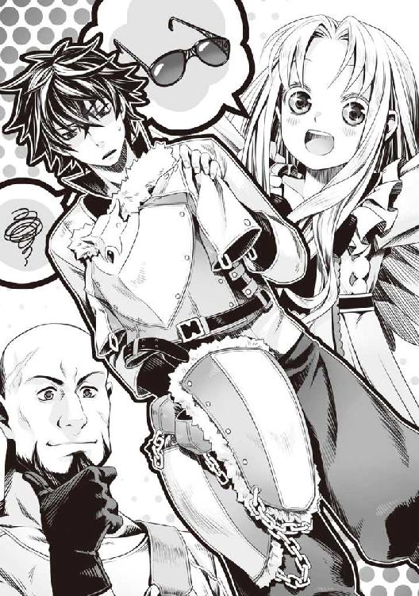
「うるさい！ 俺にそんな趣味はない！」
武器屋の親父、防具を作る時に俺への最大限の嫌がらせをしているんじゃないのか？
「どうした？ アンちゃん」
......違うだろうなぁ。なんていうか悪意が全くない。
「ま、まあ。受け取っておく」
ラフタリアは俺の格好をカッコいいとか言いやがるし。
町を歩くと浮くんだよなぁ......この鎧。
「さてどうするかな」
更に強くなるためにはラフタリア達のクラスアップは必須だろう。
また波が来たらどうせ召喚されるんだ。その間は行った先の国で金稼ぎとＬｖ上げをすればいい。
「まだ時間に余裕があるな。ラフタリア、フィーロ。何か欲しいアクセサリーはあるか？」
「アクセサリーですか？」
「ああ、細工でお前達の装備品ぐらいは作れるだろうからな」
これはここ最近、頑張っているラフタリアとフィーロへの褒美として前々から決めていたことだ。
「ラフタリアもそういうのを欲しがる年頃だろ？」
「え、ええ......」
「フィーロも！」
「わかってる。だからお前達に何が欲しいか聞いているんだよ」
ラフタリアは若干呆気に取られたような顔をしていた。そんなに珍しいことだろうか？
「えっとねーフィーロはヘアピンが欲しーい」
フィーロはヘアピンか......鞍が欲しいとか言うかと思ったから意外だ。
「ヘアピン？ なんでだ？」
「変身しても肉に食い込まないからー」
まだ気にしてるのか。まあ、頭に付ければ良いからなのかもしれないが。
フィーロの人型時の外見年齢から察するに妥当なところか。
「ラフタリアは何が欲しい？」
「私ですか？ そうですね......」
しばし考えたラフタリアは俺を見て答える。
「腕輪が欲しいですね。重要なのは付与効果です。これがダメでは意味がありません」
「は？」
「能力の上昇が期待できるものが望ましいです、ナオフミ様」
なんだろう。ラフタリアの返答が想像の斜め上を行っていて理解が追いつかない。
指輪やイヤリングとかネックレスとかを欲しがると思ったのに腕輪、しかも付与効果重視って。
脳筋に育ててしまった俺が悪いのか？
「わ、わかった。善処する」
「フィーロもー」
「はいはい」
九話 成り済まし冤罪
「あ！ いました！」
武器屋から出たところで、なぜか樹と錬とその取り巻きが俺達の方へ駆け寄ってくる。
錬は俺と同じく......いや違うなネットの世界に入ることのできるＳＦの日本から来た異世界人だ。
そして剣の勇者として召喚された。顔は元康ほどではないが美少年に入る。女顔というか......黒髪に艶があって、一応は物静か。クールを自称する奴だ。
なんだコイツ等。揃いも揃って城下町に居るってどういう状況だよ。
樹の奴、以前のような質の低い防具ではなく、今日は良いものを着けている。
俺が不愉快そうに見ていると珍しく樹が先頭に立って第一声を掛けてきた。
「あなたですね！ 僕の達成した依頼の報酬を成りすまして奪ったのは」
「はぁ!?」
なんで俺が樹の依頼の報酬を横取りせねばならんのだ。
「俺もだ。俺の方へ来た依頼を横取りしただろ」
錬も俺を糾弾するような目で言い放つ。
こっちは身に覚えがあるな。疫病の村の問題を解決した時のやつだろう。
「錬の方は俺だが、樹、お前のは知らん」
「とぼける気ですか!?」
「知らんものは知らんと言っている」
「待て待て、まずは話をしなければ尚文だって白状しないだろ」
「俺が犯人前提で話を進めるんじゃねえよ」
「ごしゅじんさま何かしたの？」
「身に覚えがありませんよ」
フィーロとラフタリアを宥めながら俺は樹と錬を睨む。
「とにかく、事情を説明してもらおうか」
「じゃあ僕からです」
樹は俺にどういう経緯があったのかを説明しだした。
「城から北の地域で問題を起こしている領主等の調査と退治の依頼を達成した時のことです......」
樹は普段通り、仲間である目立つ鎧を着せた奴に国からの依頼を受け持つギルドへ報酬を受け取りに行かせたらしい。しかし、弓の勇者が達成した依頼の報酬は既に支払われていると言われ、樹はこんな事をしそうな人物は俺だと断定して問い詰めているのだという。
「あのさ、副将軍様......お前は誰かの陰に隠れながら悪人を倒して、自身の正体を明かして驚かす趣味を持っているようだけどさ、完全秘密主義にすると勇者が解決したって噂が全然流れてこないようになるのわかってる？」
「副将軍!? な、何の事を言っているのですか!?」
「腰に剣を差して冒険者のフリをしていただろ。副将軍様」
身に覚えがあるのか樹の奴、狼狽しながら俺に怒鳴る。そう、樹の依頼に対する態度というのはこういうところで問題を起こすのだ。
弓の勇者とはどんな姿をしていて、どんな活躍をしているのかを特定できない。
そのため、国内で良い意味で話題を攫っているのは剣か槍の勇者ということになってしまう。
実は凄いんですよ、なんてやっても実際の評価になるわけではないのだ。
確かに人知れず悪を裁く、なんてヒーローみたいでかっこいいが世間には認知されない。
俺もまだ大学生だけど、社会に出たら自分の手柄は守らねばならないことくらい理解している。樹の場合は、自身の手柄であっても誰かが声高く自分がやったと言い放つと、普段の態度で信じてもらえないようになる。
というかその手のヒーローは金銭や名声欲しさに人知れず悪を退治しているわけではあるまい。
......痛い話題だ。俺自身も聖人様と言われているという意味で。
「樹の解決した依頼、弓の勇者が解決したってなるのか？ 俺が聞いた話でお前だと断定できるのは税が高い町の事件だけだぞ。あの時その場に居たからな」
「それは僕が秘密にしているからですよ」
「じゃあ確認だ。北の国でのレジスタンスに加担した弓の冒険者はお前で合っているのか？」
「え、ええ！ 僕が悪政を布く王をレジスタンスと一緒に討伐しました」
「......その後、あの国がどうなっているのか知っているのか？」
「悪い王が倒され、豊かになったのでしょう」
「なってねえよ！ 密入国して食い物を物々交換で買おうとしていたくらい飢えてたぞ」
「そんな！ どうして！」
「あのさ、王も悪かったのかもしれないが、元々国中が飢饉で生活が保ててなかったんだよ。そんな状態じゃ頭が替わるだけで意味がない」
「それは僕とは関係ありません。問題をすり替えないでください！」
はぁ......無責任な......少しは気にしろよ。
「じゃあ話を戻す。受け取りは部下がやるんだろ？ お前の部下だと説明できるのか？」
「え、ええ！ できますよ！ できますとも」
「ギルドだっけ？ その受付とかにはお前の部下であることを証明するものがあるのか？」
「そ、それは......証文です。王直々の判が押された証文を見せます！」
樹が確信に満ちた顔で言い放つ。何言ってんだ？
「特殊な技術で作られた証文です！ 簡単には偽造できません」
「それじゃあ、それを貰ってない俺にも証明できないだろ」
「ッ！」
樹の奴、図星を突かれて舌打ちした。
「で、では武器です！」
今度は苦し紛れの言い訳か......どうにかして俺の所為にしたいらしい。
「武器の形状をポンポンと変えられるのは勇者だけの特権です。弓に似た盾に変化させて、証文無しで成りすましたんです！」
「そうか？ この世界ならそれくらいのもの、他にもあるかもしれないぞ」
「そ、そんな証拠がどこにあるんですか」
「フィーロ」
「なあに？」
「本当の姿になれ」
「うん」
フィーロは本当の姿に変身した。するとフィーロが着ていたワンピースが消えて残ったリボンが首輪になる。俺は首輪を指差した。
「な!?」
「わかるか？ こんな防具が作れる世界だぞ。弓に形状を変える道具くらいあるかもしれないじゃないか。後な、俺だけじゃなくて他の勇者もできるだろ、それなら」
「で、ですが──」
「樹、諦めろ、現状証拠じゃ尚文を犯人と断定できない」
錬があくまでも俺の所為にしたかった樹の前に出て注意する。
「そもそも成りすましを行ったと思われる奴がどんな姿だったか聞いたのか？」
「い、いえ......それは......」
錬の質問に樹は言葉を濁す。
「なら諦めるしかないだろ。少しは自分が勇者であるのを広めておけ。で、次は俺だ」
「東の地域の疫病の件だろ？」
「わかっているなら話は早い。なんで横取りした」
「現地に居たからだ。お前は知らないのか？ お前が倒したドラゴンの死骸が原因で疫病が蔓延したんだぞ」
「何!?」
錬の奴、なんか絶句して立ち尽くしている。
どうしたというんだ？ もっと冷酷な奴かと思ったのだが。
「死人もかなり出たらしい。収容施設の裏に真新しい墓地があった。俺が居なかったらもっと死んでいただろうな」
「馬鹿な......」
ヨロヨロと錬は東へ向かおうとする。
「待て待て！ 今からじゃ間に合わないだろ。波はどうするんだ」
「でも、俺の所為で──」
「俺がドラゴンの死骸を除去した。疫病に掛かった奴等も現地の治療師と力を合わせて治癒したんだ。これで依頼を横取りとか言われてもな」
「そ、そうか......それならしょうがない」
錬の奴、顔色が真っ青だな。
「信じるんですか!?」
樹の奴が困惑の表情で錬に言う。
「嘘を言う理由がない。依頼は解決したのでキャンセルされたんだ。ということは間違っていない」
「ドラゴンの死骸がドラゴンゾンビになった時は驚いたぞ。その時の戦いでラフタリアが呪いを受けてしまってな。一応は治ったが、大変だった」
嘘は言っていない。俺の所為ではあるけれど。
「そうか、すまなかった」
錬はラフタリアに頭を下げた。
......意外だ。錬ってもっと冷酷な奴かと思ったが、自分の行ったことで発生した問題に対しては弱いみたいだ。正直「弱いのが悪い」とか言うかと思っていた。
「なんでドラゴンの死骸を放置したんだ？」
「それは......俺の仲間が『他の冒険者に素材を恵んでやるために放置しよう』と言い出して、俺も良い考えだと思ったんだ」
そういえばあの村も一時は潤ったとか言っていた。
「村の連中や冒険者も任せろと言っていたのだが......」
「今度はちゃんと死骸の処理をしておけよ。死骸は腐るんだ。腐ったら病を招く危険がある。最低でも臓物と肉は処分しておけ」
「ああ......」
なんか拍子抜けだ。それにしてもあの村、この事に関して何も言わなかったよな。自分達に非がある部分を隠していたとは......まあ自業自得になるのか。
「僕は信じませんからね」
錬よりも樹の方がしつこいな。
「絶対に証拠を持ってきます」
「ああ、持ってこい。但し捏造はするなよ。犯人を見つけても盾の勇者から頼まれたか？ とか問い詰めるな。俺の風聞の所為で頷く」
「......どういう意味ですか？」
「盗賊が襲ってきたので返り討ちにしたら、俺に襲われたとか町で言い放つつもりだったらしいぞ」
「そ、それは......」
「お前と同じだな。副将軍様、嘘を見抜けるようになろうな？」
さすがに俺の風聞の悪さに樹も哀れみを覚えたのか、なんかむかつく同情の視線で見られる。
なぜ俺がそんな目で見られなくてはならないのか。
「とりあえずこの件は保留にしておきますね」
「......俺は犯人じゃない」
まったく、冤罪は大嫌いだ！ なんでも俺の所為にすれば良いと思うな！
「必ず尻尾を掴んでみせますからね」
腹の立つ態度で樹達は立ち去り、錬も若干落ち着かない様子で去っていった。
「じゃあ行くか」
やっぱりあのクズ王の管轄である城下町は碌な目に遭わないな。さっさと宿に行こう。
「こんばんは、盾の勇者様」
宿で休んでいると志願した兵士達が五人、俺に挨拶に来た。一応俺に話を付けに来た二人が代表して話しかけてくる。
「どうしたんだお前等？」
「波に関しての打ち合わせをしたいと思いまして」
なんとも真面目な連中だ。まあ、丁度良いか。
「ラフタリアは波を経験済みだしな。フィーロも一緒に話に入れ」
「んー？」
「俺も波に関してそこまで詳しいわけじゃないからな。あくまで、転送された時の盾の勇者としての戦い方とその補佐の仕方を説明するぞ。それで良いな？」
「はい！ 私達は人々を守るために盾の勇者様に力を貸したいのです」
本心で言っているか怪しいが今のところは信じても良さそうだ。
「前回の波に関して一応復習をする。俺が参加した前回の波では出現する魔物が近くの村の連中に襲いかかってきた。だから俺は村の連中を守るために矢面に立っていたわけだ」
そう、あの時は大変だった。空に大きな亀裂が走り『次元ノ』と名前の付いた魔物がわらわらと湧き出して襲ってきたのだ。
それなりに大型の魔物もいたし、リユート村の連中も混乱していた。襲われそうになった村人をエアストシールドやシールドプリズンで助けたっけ。
そうしてラフタリアに避難誘導させて、それから大型の魔物を討伐した。
ぶっちゃけ、プレイヤーＶＳモンスターの戦争に似ている。
「とりあえずは民間人を守ることを最優先だ。できる限り避難誘導をしてくれ」
「はい」
「まあ、さすがに前回の反省から他の勇者共も騎士団辺りを呼ぶとは思うけどな」
こうして俺に志願した兵士達以外にも民間人を守るものが居るだろうよ。
「その件なんですが......」
「どうした？」
「私達以外の、国の兵士には勇者様の編隊の話が来ていないのです」
......これはどういうことだろうか？
考えられるのはこいつ等クラスの弱い連中では波に参加させられないと切られている。もしくは出世や栄光目当てで騎士団の上層部がただついてくるだけの状態になっている、というところだろう。その辺りの管理はいい加減なのかもしれない。俺以外の勇者はその辺りが適当なのか？
「フィーロは何していればいいのー？」
「俺の近くで避難誘導中に襲ってくる魔物を倒していれば良い。ラフタリアは避難誘導組やこいつ等と一緒に動いてくれ」
「わかったー」
「わかりました」
「正直、俺は他の勇者のように波に詳しいわけじゃない。だからぶっつけ本番なのが悩みだ。みんな頼んだぞ」
「「「はい！」」」
その場にいるみんなが頷いた。一応は頼りにしている。
十話 第三の災厄
ラフタリアとフィーロのアクセサリーは当日に完成した。
「ほら、要望のアクセサリーだ。まずはラフタリアから」
俺はラフタリアに翡翠のブレスレットを渡す。
「ありがとうございます」
「付与効果は魔力上昇（中）だ。装備している鎧の魔力防御加工によって低下した魔力を若干補うことができる。お前のお陰で良い物を作れた」
少し前、ラフタリアとフィーロが立ち寄った温泉地で金銭を稼ぎ、高くて手が届かなかった機材を買ってくれたのだ。そのお陰で、良い物を作ることができるようになっている。
「大切にしますね」
「本当にそんなので良いのか？ もっと見た目重視のシャレたやつだって作れるぞ？」
「何を言っているんですか。そんな物で着飾る余裕がどこにあるのです？」
うーむ。本人がそう思うのならしょうがない。
「次にフィーロ」
俺はフィーロに琥珀のヘアピンを渡す。若干細工に力を入れて、魔物時のフィーロにも似合うように羽毛で挟むと羽飾りっぽくなるようにしてある。
「付与効果は敏捷上昇（中）だ」
「ごしゅじんさまありがとう」
「手元の素材じゃそれが限界だった。また必要になったら作るから我慢してくれ」
「問題ありません。このアクセサリーの性能を最大限に引き出してみせます」
「うん！ フィーロもがんばる！」
「期待している」
志願した奴等とも再三の打ち合わせをしたし、準備は万端だ。
最初こそ波とは何なのだろうかと疑問を浮かべていたフィーロだったが、解決させないといけないことなのだと理解させた。
薬も揃えてある。馬車は......新しい物はまだできていないので荷車を代わりに引かせた。
どうせ俺は波で他の勇者共とは違って近隣の町や村を守るのが役目だ。そもそも参加する必要すらないのだが、下手に参加しないでいたら何を言われて処分されるかわかったものじゃないからな。
00：05
あと五分。転送されたらどの辺りに飛んだのかを察知して、志願兵へ指示を出そう。
盾はキメラヴァイパーシールドにして......。
00：00
時間になった！ 世界中に響くガラスを割るような大きな音が木霊する。
次の瞬間、あっという間に景色が変わった。俺達は冷静に辺りを見渡す。
「ここは......」
うん。以前、病に苦しんでいた老婆が住む村の近くだ。城下町からだと、どんなに早くても一日半は掛かるだろう。
空を見ると以前と同じくワインレッドに染まっていて、その先に亀裂が走っている。
「盾の勇者様！」
志願兵達も召喚され、俺の方へ駆け寄ってくる。そして俺は他の三人の勇者とその──。
「フィーロ！ 槍を蹴って亀裂に向かおうとする奴等にぶつけろ。加減はしろよ」
「はーい！」
俺の指示通りにツメを脱いでフィーロは駆ける！
すぐに剣、弓、槍に追いついた。
「え──？」
槍が振り返ると同時、フィーロに蹴られて他の連中にぶつかった。
「「「わあああああああああああああああ！」」」
ボウリングのように盛大に吹き飛んだ連中に俺達は近づいた。ビッチ共も吹っ飛んで気分が良い。
加減したフィーロの蹴りによって大してダメージは負っていない。
「な、何をするんだ！」
槍が騒いで俺達を弾劾する。俺は槍を無視して、剣と弓を睨みつけた。
「それはこっちの台詞だ馬鹿共！」
「いきなりなんだ!?」
「そうです！ 僕達は波から湧き出る敵を倒さねばいけないのですよ！」
俺は馬鹿勇者共に対して怒りを通り越して呆れていた。
「まずは話を聞け。敵を倒しに行くのはその後だ」
俺は視線で志願兵達に近隣の村へ向かうように指示する。頷いた志願兵達は俺の命令通りに村へ駆け出した。
「さては......僕達への妨害工作ですね！」
「違う！」
俺の一喝に樹がビックリして目をパチクリさせる。
「落ち着け、そして考えろ。俺は援助金を貰えないから波の本体とは戦わない。せいぜい近隣の町や村を守るのが仕事だ。そこは理解したか？」
「ああ」
「勇者としては失格ですね」
勇者共が睨みつけてくるが、無視をして話を進める。
「次に錬、樹、元康、お前等は波の大本から湧き出る敵の撃破が仕事だ。大物を倒せば波は収まるのか、亀裂に攻撃をするのかはやってないから知らない」
「ボスとリンクしているのですよ！」
リンクというのはゲーム用語だな。繋がるという意味を兼ねていて、大物を倒すと波は静まる、ということなのだろう。樹の奴がムキになって答えるが、どうでも良いな。
「だけどな、俺達にはそれ以外に重要な仕事があるの......わかってない？」
「なんだ？」
錬の奴も理解していなかったのか。というかこの世界はお前の知るゲームと酷似しているんだろう？ なんでわからないのか。
「あのな、騎士団はどうしたんだよ！」
俺の怒鳴り声に三人の勇者は目を強く瞑った。
「そんなものは後から来る」
見せつけるかのように、上に照明弾のような魔法が上がっている。おそらくあれで呼ぶのだろう。
「ここは城下町から馬やフィロリアルで一日半の距離があるんだぞ！ 間に合うかボケ！」
「じゃ、じゃあどうすれば良いんだよ！」
「情報通のお前等が言うのか!?」
俺は村の方へ駆けていく志願兵達を指差す。
「そういえば......あの方々はどうやって転送を？」
「......本気で言っている？ 編隊機能を知らないのか？」
「仲間ですか？ いつの間にか大量に勧誘したんですね」
「違う......編隊で一人を下位のリーダーに指名してパーティーを作らせているんだよ。で、一斉転送させたわけ」
もしかして......コイツ等、波の知識とかないのか？
志願兵共が上司から編隊の指示が来ないと言っていたが、まさか勇者共が使っていなかったとは呆れて物も言えない。これでは騎士団に話が来ないのも頷ける。
「とりあえず確認だ。誰か波での戦いについて、ヘルプなどの確認を行ったもの」
......誰も手をあげやしねえ。
「熟知しているゲームのヘルプやチュートリアルを見る必要なんてねえだろ？」
「そうだ。俺達はこの世界を熟知している」
「ええ。ですから、早く波を抑えることを最優先にしましょう！」
「じゃあ波の戦いはお前等......他のゲームでなんて言う？」
「は？」
「何のことだ？」
「それよりも早く行きましょう！」
俺の質問を無視して樹は走っていきやがった。
「元康、お前は俺の質問の意味がわかるだろ？」
「まあ......インスタントダンジョン？」
「違う。タイムアタックウェーブだろ？」
錬......それも違う。別のゲームだと言っただろ！
お前の知っているゲームはブレイブスターオンラインというゲームしかないのか！
「ギルド戦、またはチーム戦、もしくは大規模戦闘だよ！」
俺が元々居た世界でやっていたゲームはプレイヤー同士で週に一回ほどの大きなイベントがあった。編隊のシステムを使うとなると、敵の数が、勇者だけで対応できる人数を超えてしまうということが予想される。現に前回の波の時も騎士団が間に合わなかったら俺は後退して、もっと被害を出していただろう。
「......お前等、ゲームのシステムを完全に理解していても大きなギルドの運営をしたことがないんじゃないか？」
こういう大規模戦闘というのは連携が最優先される。
もちろんエースプレイヤーである勇者が先頭に立つのは前提だ。だけど、被害を最小限に抑えるためにはこの世界の住人に協力してもらわねばならない。
それが理解できていないというのは幾らなんでもおかしい。
「俺はチームの運営をしていたぞ」
元康が答える。視線は魔物の姿のフィーロに釘付けだ。蹴られたくないのだろう。
「じゃあなんで理解できない」
「必要ないだろ」
「はぁ!?」
「どうにかなるもんさ」
はぁ......これは秘書的な、サブマスター辺りに丸投げしていたな。
ビッチ、お前の仕事だ。ああ、この腐れ王女はそんな知的担当じゃないか。
「俺はそういうのに興味がなかった」
錬の奴......確かにこういうタイプってギルド戦以前に人と話すのが苦手だよな。
そんな奴が大規模ギルドのマスターとか言われたら、逆にどう成り立っているのか知りたくなる。
「とにかく、今回は俺達がどうにか頑張ってみるが、次はちゃんと騎士団と連携を取れよ！」
俺がシッシと早く波の大本へ向かうように追い払う。錬も元康も俺への不快感を隠さずに走り去っていった。
「というわけだ。俺達も近隣の村へ行くぞ！ ラフタリアとフィーロもな」
「はーい！」
「はい！」
荷車に乗り、俺とラフタリアは近隣の村へ急いだ。志願兵も用意した乗り物に乗って付いてくる。
村に到着すると、波から現れた魔物が暴れていた。
黒いコンドルみたいな奴と黒い影の狼、あとゴブリンのような奴とリザードマン。
ただ、亜人みたいな奴は造形が一定しないようで、なんていうか影っぽい。
それぞれ、ダークコンドル、ブラックウルフ、ゴブリンアサルトシャドウ、リザードマンシャドウと揺らぎながら名前が表示されている。そしてハッキリと、名前の欄に『次元ノ』が追加された。
亜人種に近い、シャドウと名の付く魔物は倒すと幽霊のように消える。
なんとも不気味な奴等だ。前回の波とまるで魔物の種類が違う。法則のようなものはないのか？
ともあれ、面倒な事は全部勇者共に任せよう。
で、だ。
「アチョー！」
先ほどから妙な叫び声を出しているのは、俺が行商中に薬を飲ませた老婆だ。
老婆はクワを片手に善戦している。志願兵達も老婆の姿に困惑している。
「あ、聖人様！ あの節はどうも！ アチョー！」
老婆は俺に一礼するなり波から湧き出た魔物にクワで一撃を加える。
結構強く、老婆を中心に魔物の死骸がかなり転がっていた。
「ほら、お前もお礼を言い」
「あ、はい。ありがとうございました」
老婆の息子も相変わらずのようで俺に頭を下げる。
「とりあえず、波から敵が湧き出てくるので避難してください」
志願兵達は村人の避難誘導を行っている。その合間に敵の殲滅も行っているが、かなり厳しそうだ。俺達も敵の討伐に加わる。
「アチョー！」
老婆が軽快に敵を倒している。これが一ヶ月くらい前に死にそうだった奴の動きか？
「聖人様のご加護で昔の強さが戻りました。ハッハ！」
老婆の息子に目を向けると精一杯戦っている。しかし親より動きが悪い。志願兵と一緒にいて、やっと戦えているような状態だ。老婆にはかなり劣る。
「これでもわしゃあ昔冒険者をやっていて名を馳せていたんじゃ。今は年齢と同じＬｖでしてのう！ アチャー！」
「ババア無茶すんな！」
一騎当千というか、この中でもかなり強いんじゃないか？
俺が敵の攻撃を止めている最中にゴスゴスとフィーロに匹敵する勢いで敵を仕留めていく。
頼りになるのは良いとして、戦いが終わったらそのまま死にそうで怖い。
「俺はババアに何を飲ませたんだ？」
「さあ......」
俺の問いにラフタリアも呆然としてババアを見る。後であのババアの息子を問い詰めるとしよう。
ともかく今は怪我人の治療だ。
「怪我をした者は荷車の方へ、それ以外は防衛線から最優先で安全な所へ下がれよ」
俺も指示を出しながら余裕があったら怪我人の治療を行う。
「アチョー！ 聖人様、なかなかの曲者が混じっておりますぞ」
見ると次元ノリザードマンシャドウの中にかなり大きな個体が混じっていた。他の個体の倍くらいの大きさだ。
「行きます！」
志願兵の代表がそいつに向かって切り掛かっていった。
「馬鹿！ やめろ！」
大きな次元ノリザードマンシャドウは志願兵に向かい、剣で叩きつぶそうとする。
咄嗟に防御の構えを取るが、間に合わない！
そこで志願兵が付けていたネックレスが輝き、一瞬だけ結界のようなものが展開されて砕け散った。そして、次元ノリザードマンシャドウの剣が弾かれる。
「え？ あ......」
「何ぼさっとしてんだ！ 下がれ」
「は、はい！」
くっ......コイツは志願兵達では荷が重い。防御用のネックレスが一撃で砕けるほどだ。相当な攻撃力があるとみていいだろう。となれば俺があの大きな剣を盾で防ぎ、連携で倒すしかない。
「ラフタリア、フィーロ、俺達もアイツを仕留めるぞ」
「はい！」
「はーい！」
三人で大物へと走り出す。
次元ノリザードマンシャドウの黒く大きな剣が振りかざされる。
俺は一番前に出て盾を構える。ガインと大きな音がして、火花が散った。
蛇の毒牙（中）が発動して敵に毒を与える。だけど効果が薄い。
やはりこの手の爬虫類っぽい敵には薄いか。だが、俺の目的は毒にさせることではない。
「えりゃああああああああああああ！」
ラフタリアが次元ノリザードマンシャドウの腹部に剣を突き刺して怯ませ、
「でりゃあああああああああああ！」
ツメを履いたフィーロの一撃で次元ノリザードマンシャドウの顔が消し飛ぶ。
バタンと仰向けに倒れる次元ノリザードマンシャドウ。
「すごい......」
志願兵が言葉を漏らす。
「ありがとうございました！ 盾の勇者様が下さったアクセサリーが無かったら今頃私は......」
「大事がなくて何よりだ」
人命を救えたのなら、俺もアクセサリー作りを覚えて損じゃなかったと思える。
少しだけやる気が湧いてくるような気がした。
「よし！ お前達は少しでも被害を抑えるために近隣の村へ救助に向かえ」
この村はババアと志願兵六名。さらに駐在していた冒険者がいれば被害を抑えられそうだ。
この近隣にはまだ他にも村がある。一刻も早くそっちにも向かわねば危ないだろう。
「薬は少し置いていく。乗り心地は最悪だが、次へ向かうぞ！」
俺の指示に荷車に志願兵が乗り込む。
「行け！」
「らじゃー！」
フィーロは重くなった荷車を引いて、爆走を開始した。
次の村に到着した時、志願兵が乗り物酔いでふらふらしていたが、構っている余裕はない。
家屋は燃えており、村人にも被害が及んでいる。先ほどよりも被害の多そうな村だ。
「急いで救助に向かうぞ！」
「は、はい！」
波から湧き出る魔物を屠りながら、俺達は波が終わるのを待ち続けた。
「......遅い！」
あれから三時間が経過していた。
近隣の村への対処も辛うじて終わり、今は波から無限に湧き出す魔物の対応に追われている。
避難誘導は進み、村人達の死傷者は最小限で済んだ。だけど、避難している先を攻められたら目も当てられない。そんな攻防がまだ続いている。
だが、幾らなんでも遅すぎるだろう。あの勇者共、いつまで掛かっていやがる。
「勇者様、ここは僕達に任せて他の勇者様の援護に向かわれては？」
俺に一緒に戦いたいと話しかけてきた少年兵が進言する。
「行く意味はないんだがなぁ......」
波の大本を倒すのが奴等の仕事だったわけだし、そっちまで行って文句を言われるのもな。
「ですが......」
志願兵達の顔色も大分悪い。
三時間という長い時間と敵の攻撃にさすがにスタミナが切れているのだ。
俺だって大分疲れている。それはラフタリアやフィーロだって同じ......。
「てーい！」
フィーロが次元ノゴブリンアサルトシャドウを蹴り飛ばしている。まだ余裕あるな。
うん。フィーロはまだ大丈夫だ。スタミナの塊みたいな奴だし。
「任せられるか？」
「お任せください！」
こいつらもまだまだ戦えそうだ。
「じゃあ言葉に甘えて様子を見てくる。頼んだぞ」
「はい！」
「ラフタリア、フィーロ、行くぞ！」
「了解です」
「はーい！」
俺達は志願兵と冒険者に近隣の村を任せ、フィーロに乗って波の大本へ向かった。
十一話 グロウアップ
「この辺り......だよな」
「ですよね」
「うん」
波の大本には大きな亀裂が入り地面にまで伸びている。
「ん？ な、なんだぁ！」
その根元には大きな......幽霊船のような船が空に漂っている。そこから魔物がワラワラとあふれ出していた。
ボロボロのマストに穴の空いた帆、背景には稲光が閃いていて、木製の船には所々に穴が空いていた。
どのような力で浮かんでいるのか俺にはわからないが、ここは異世界で、何が起こるかわからない波という現象だ。一々気にしていたらキリがないだろう。
辺りには靄が掛かっていて、正直に言えば禍々しくて乗り込みたくない。
今回の波の魔物は、海賊か？
「あいつ等......こんなのと戦っていたのかよ」
三人の勇者とその仲間達が幽霊船相手に戦っている。
錬と元康が幽霊船に乗り込んで戦っているのか、放つスキルが見える。樹は遠くから船自体を攻撃していて、些か無謀な戦いをしているように見えなくもない。
すると、幽霊船の側面から大砲が出てきて、砲弾が飛んできた。
それは俺達の方にも飛んでくる。
「エアストシールド！」
「てぇい！」
飛んでくる砲弾を俺はエアストシールドでずらし、フィーロが直接蹴っ飛ばして弾く。
「お前等、いつまで時間を掛けているんだ？」
ノロノロと戦っている樹に向かって声を掛ける。
「な、尚文さん!? どうしてここに？ 戦わないのではなかったのですか？」
「お前等がノロノロとしているから避難誘導がとっくに終わったんだよ。で、様子を見に来たらこれだ。ゲーム知識で楽勝じゃなかったのか？」
「船を破壊しないと終わらないというのに、錬さんと元康さんは乗り込まないといけないと言いましてね」
......こんな所でも仲間割れをしているのか？
いや、それよりもどうして樹の知るボス撃破の方法と錬や元康の方法が異なるんだ？
「ちっ......」
幽霊船か......ボロボロの船だな。波はどんだけ非常識なんだよ。
そう思いつつ、樹達の戦いを少しだけ見る。
基本は樹のスキル攻撃を軸にしているみたいだな。他の連中は各々の武器で戦っている。
「とにかく、幽霊船自体を攻撃するにしても他の勇者と連携すべきだろ」
「あなたに言われる筋合いはありません！」
イラッとくる返答だな、この副将軍は！
「ここで決定打の見えない戦いを繰り返すのか？ 幾ら威力のあるスキルを放っていたとしても、一向に倒れる気配がないなら手段を変えてみろよ」
樹の戦い方ってなんだろうか？ これで効いているのか？ ゲームだとあっさり死ぬけどさ。
「まずは他の二人が乗り込むことを最優先しているんだからさ」
とはいえ、幽霊船の形をした魔物とも考えられるのが厄介だ。
イカリをブンブン振り回すその姿は家のような形をした魔物のようだ。
「内部から弱い箇所を攻めるとかさ？ ゲームではできない方法があるかもしれないだろ？」
「そんなもの、僕の知るディメンションウェーブにはありません！」
「お前、いい加減にしろよ？ ゲームゲームって遊びじゃないんだぞ！」
波でどれだけの被害が出ると思ってんだ。
現にこうして倒すのが遅れている分だけ魔物が湧いてきて近隣の村に迷惑が掛かっている。
「じゃあ、俺達が乗り込んで幽霊船の急所を攻めて倒してやろう」
「あ！ 横取りですか！ 許しませんよ！」
「悔しかったら付いてくるんだな。フィーロ！」
「はーい！」
フィーロは走り出し、ピョンとジャンプしたところで俺がエアストシールドを展開、足場にして幽霊船に乗り込む。
「あ、待ちなさい！」
樹とその仲間が俺の挑発を受けて追いかけてくる。
それで良い。これだけ時間が掛かっているということは方法が間違ってるんだよ。
うわ......甲板に辿り着いたのは良いけど、骨が散乱している。他に床板が腐っていて抜け落ちている所や、腐った魚の死骸、同じように腐ったロープや浮輪等、足の踏み場もなさそうな所だ。
甲板に乗った俺達だけど、そこには誰も......ん？ 船の後方に大きなタコの足みたいなものがへばりついていて、元康とその取り巻きが戦っている。
「流星槍！」
元康が高らかに跳躍したかと思うと槍が光り輝き、エネルギーで構成された槍が拡散してタコの足みたいなものに降り注ぐ。それで吹き飛ぶ足なのだが、即座に再生して船にへばりついている。
なんだこれ？ クラーケン的な魔物が船にヤドカリのように取りついているのか？
「フィーロ、食べたいとか言うなよ」
「えー......あれは食べれないよ？」
さすがのフィーロでも無理か。
甲板を進むと、錬が海賊船の骸骨船長みたいな奴と戦っていた。
骸骨船長は、まるでカリブ海の海賊のような豪華な海賊の服を着ていて、片腕は鉤爪だ。
ピーターパンに出てくるフック船長を骨にした感じというのがピッタリだな。
「流星剣！」
錬の放つ剣閃から星が出現して骸骨船長に命中する。
「く......なんてタフな奴だ」
「レン様！」
錬の仲間が援護に前に出て骸骨船長に切り掛かる。骸骨船長は剣で応酬するが、錬とその仲間達の攻撃を受けてよろめく。そして決定打と思われる一撃を錬が刻んだ。
「ふう......これで死んだか？」
だが、バラバラに崩れた骸骨船長がすぐに形を取り戻す。
「──なっ!?」
そして、頭にバンダナを巻いた骸骨と共に再び襲い掛かってきた。
もう一度、元康の戦っているクラーケンに目を向ける。
「フィーロ、船の後ろの方へ、回りこめるか？」
「うん！」
「ラフタリア！ 掴まっていろよ！」
「は、はい！」
振り落とされないようにラフタリアは俺に掴まり、フィーロは幽霊船を駆け抜ける。
船首から船尾へ......その合間にはクラーケンの足が引っ付いているが、それを蹴り飛ばして進む。そして俺達は船の後方から足の出ている方を見た。
「......ッ！」
確かに、クラーケン本体がヤドカリのように船尾に引っ付いている。
いや、頭の一つと言うべきだろうか？ クラーケンのような多頭生物と言うべきだろうか？
元康が相手にしている方にも同様の頭があるんだけど......目が、腐って濁っている。
間違いなく息をしていないだろう。
腐った物でさえ食べるフィーロだが食べられないというのは腐りきってしまっているからか？
樹は船自体を攻撃していたが、倒しきれていない。
元康はクラーケンを倒そうとしている。
錬は骸骨船長と戦っている。
見事にバラバラだ。
いや、手分けするしかなかったとも言えるが、滅茶苦茶だ。
しかも決定打を与えられているようには見えない。
この敵、全てに当てはまる要素はなんだ？ 考えられるのは、別に敵がいるということだ。
なぜ、ゲーム知識が豊富な連中がこの事実に気付かない？
今までの勇者共の言動から考えると、自分の知るゲームではこうしてクリアした、というのが奴等の理屈なのだろう。実際、全員戦い方が違う。
「錬！」
「なんだ！ って尚文？ なんでここに居るんだ！」
「お前等が遅いから追いついたんだよ。お前、なんでずっと戦い続けてんだよ」
「コイツを倒すと、ボスであるはずのソウルイーターが出現するんだ」
「......湧いたか？」
「何度か倒すと出現する」
「そうか」
......一応は知識を元に戦っているみたいだが、時間が掛かっているということ、なのか？
「元康！」
「な、なんで尚文がここにいるんだよ！」
フィーロに乗っている俺に元康が股をすぼめて言う。
ああ、また蹴られると思ったのか。さすがにこんな時までフィーロに蹴るような命令はしないぞ。
「モトヤス様、耳を傾けてはいけません！」
ビッチが俺をゴミを見る目で眺めながら、元康に注意する。
「お前は黙ってろ！」
「私に『お前』と言うのはどういう意味かわかっているの!?」
「そんな事はどうでも良いんだよ。元康、クラーケンを倒すとどうなるんだ？」
「ソウルイーターが出現して、そいつを倒すと良いんだ」
元康もか、ということは樹もそうなんだろう。
だが、攻撃が効いているようには見えない。
ゲーム系だとそのソウルイーターという魔物がどこかに潜んでいて、倒すと出てくるということか。
錬は骸骨船長、元康はクラーケン、樹は幽霊船を攻撃している......そりゃあ時間が掛かるわけだ。
「追いつきましたよ、尚文さん」
樹が甲板に上がってきたみたいだな。......これで勇者全員が甲板に集まった。
しかし......ソウルイーターか。
どんな魔物なのか見ていないから一概に言えないが......幽霊みたいな魔物で良さそうだな。
潜んでいる、アンデッドを操る魔物。だから媒体を破壊する必要がある......か。
「光の魔法とかで炙り出せないのか？」
「試してみますか？」
ラフタリアが話しかけてくる。そういえばラフタリアは光と闇を司る幻覚の使い手だったか。
ならば光の魔法も使えるのかもしれない。
「できるか？」
「任せてください」
ラフタリアが魔法を唱えるために意識を集中させる。
『力の根源たる私が命ずる。理を今一度読み解き、光よ、辺りを照らせ！』
「ファスト・ライト！」
ラフタリアが魔法を唱えると俺達の上に光の玉が出現した。
その光が、強い輝きを宿し、甲板を照らす。
ん？ 錬が戦っている骸骨船長の影が変だ。他にも各所に似たような変な影が出現する。
どう見ても普通の影じゃなく、しかも笑っている。
「そこだ！」
「なるほど！ 流星剣！」
錬が骸骨船長の影に向かって剣を振り下ろす。
「ＳＹＡＡＡＡＡＡＡＡＡＡＡＡＡＡＡＡＡ！」
影から白く凶悪そうな顔つき、赤い眼、大きな口と牙を持った白い布の幽霊みたいな魚──が出現した。これがソウルイーターか。
同様に元康、樹、その仲間達が影に向かって攻撃するとソウルイーターが溢れ出した。
「こんな所にいたのか！」
「道理でいつまで経っても倒れないはずです！」
幽霊っぽい......物理攻撃が効かないような気がする魔物だな。こうなったら魔法に頼るしかないか。
「なんだ!?」
ソウルイーター達は一ヶ所に集まって巨大な一匹のソウルイーターになる。
複数の生き物が集まって一つの巨大な生き物に見せかけるというのが俺の世界の魚にもある。
イワシとかがそれだな。魂で作られた魚のような魔物、だからそういう習性を持つ魔物なのかもしれない。しかし......一つになった所為で、一匹単体よりも遥かに大きい。
──次元ノソウルイーター。
「ナオフミ様、こちらに来ました！」
次元ノソウルイーターは炙り出しを行ったラフタリア......フィーロに乗る俺達に向かって突進してきた。
「エアストシールド！」
ゴツッと音を立てて、突進を遮った俺達はそのまま甲板を駆けて錬達の方に向かう。
「ほら、炙り出したんだからお前等が戦えよ」
俺の言葉に錬、元康、樹がそれぞれ舌打ちしながら、次元ノソウルイーターに向けてスキルを放つ。もちろん仲間達も各々の戦い方で援護する。......物理属性の効きが悪いボスかよ！
準備できてないんだよなぁ。ラフタリアは炙り出しの光魔法で貢献はできるけど。
「フィーロは魔法を使え」
「はーい」
フィーロはファスト・トルネイドを唱えて、次元ノソウルイーターにダメージを与える。
しっかし......ヘイトコントロールとかできない俺はただの役立たずだな。
そう思ったのと同時だっただろうか。次元ノソウルイーターが何か、攻撃準備を始める。
大きく裂けた次元ノソウルイーターの口の中に黒い大きな魔法の玉が出現し、それが徐々に膨れ上がる。
魔法の玉はまるでブラックホールのように光を吸い込み、レンズのように辺りの景色を歪ませた。
「紅蓮剣！」
錬が跳躍して次元ノソウルイーターに切り掛かる。
ん？ 火花が散ったぞ。
「思ったより硬いな」
おい......ゲーム知識所持者共。炙り出しても善戦できないじゃないか。
これでまた潜られたらたまったもんじゃない。
「ウインドアロー！」
樹のスキルも......。
「ライトニングスピア！」
元康のスキルも決定打にするには足りていないぞ。
相性問題の関係か？ この手の幽霊系には効く攻撃が難しいってやつ。
光の魔法が効果的なようだけど......。
次元ノソウルイーターが溜めている黒い魔法の玉だが、露骨に必殺技を放つ予兆じゃないか。
「急げ！ 早くしないと凶悪なスキルを使うぞ！」
「おう！」
錬の掛け声に元康が応じて畳みかけるように攻撃する。
「ＳＹＡＡＡＡＡＡＡＡＡＡＡＡＡＡＡＡＡＡＡＡＡＡ！」
バッと次元ノソウルイーターが黒い大きな玉を吐き出した。玉はまるで大砲のように放たれて甲板へと命中する。そして漆黒の爆発が辺りに広がり、爆発の衝撃で船自体が大きく揺れた。
やばいぞ！ 先ほどのは前哨戦だったとでも言うかのように敵が凶悪化している。
藪を突いて蛇を出してしまったか？ だが、波を終わらせるには避けては通れない道だ。
咄嗟にフィーロから降りて前に立ち、盾を構えて防御する。
「「「うぐぁあああああああああああああああああ！」」」
錬、元康、樹を含め、その仲間達が爆発に巻き込まれて吹き飛ばされる。
バシンバシンと盾に衝撃が走った。
「ぐ......」
かなり痛い、これ......俺の防御を貫くほどの威力を広範囲で放つのかよ。
「ぐ......」
錬達も致命傷を受けたわけじゃないが、深手を負ったのかふらふらだ。
だが、次元ノソウルイーターはこの攻撃が効果的だと悟ったのか、またも黒い玉を出現させる。
あの凶悪スキルの再発射!? 連射するなよ！ と、怒鳴りたくなるがこちらが嫌がる攻撃をするのが戦いの基礎だしな。ゲームとかだったらプレイヤーが嫌がることは制作者もわかるからそこまでしてこない。これがゲームと現実との違いか。
「フィーロ！」
「うん！ わかったー」
フィーロが颯爽と走り、次元ノソウルイーターに向かって蹴りを入れる。しかし打撃音はするけれど、次元ノソウルイーターはへらへらと笑ったまま余裕を見せている。
「はいくいっく！」
フィーロが蹴りを中断して地面に着地すると同時に、魔法を唱える。
すると一瞬、フィーロがぶれて見えた。
ドゴンと連続音が響いて次元ノソウルイーターが揺れた。さすがに次元ノソウルイーターもこたえたのか苛立ったようにフィーロに向けて黒い玉を吐き出す。
「当たんないよー！」
そう言いながらフィーロは俺の後ろに回り込む。そうだ、それで良い。
俺は盾を構えながら回復魔法を唱え、黒い玉の爆発を耐える。フィーロは攻撃を再開する。
ラフタリアは光の魔法を唱え続けている。じゃないと奴は潜り込みそうだしな。
「えーい！」
フィーロが高速で動いて敵に少しずつダメージを与えているけれど、長期戦になるだろう。
そうなれば消耗戦だ。勝てるか怪しい。
決定打に欠けているんだ。錬達、勇者でさえも足りないほどに、強力なボス......なんだろうなぁ。
こういう場合、ゲームだと連携した長い戦いの末に討伐する。
俺の知るネットゲームで言うところの上位ボス。種類によるけど上位プレイヤーが集まって一時間以上掛けて倒す類。
どうする？
できる限りダメージを継続的に与え続けて相手の体力を削りきれば勝利......となるが。
時間を掛ければ掛けるほど、近隣への被害は増大していく。
現に今もわらわらと魔物は波から湧き続けている。
時間なんて掛けていられないし、ここは一つ、とても強力な......一撃必殺スキルがあれば......。
一つだけ、そう、一つだけ状況を引っくり返せる手段がある。
錬達がおそらく所持していない強力な力を備えた盾が俺にはある。あの盾に頼るしかこの状況を終わらせられる手段は俺には無い。
「ラフタリア」
俺は下がってきたラフタリアの手を掴む。
「どうしました？」
「力を貸してくれ......」
俺が何をしたいのかラフタリアは察する。
「はい。私はナオフミ様の剣。たとえどんな地獄であろうともついていきます」
「......俺が奥の手を使う。下がってろ」
いい加減イライラしてきたし、本当は使いたくないが、どこまで行けるか試してみたかったんだ。
「フィーロ、もしも何かあったらラフタリアを連れて下がれよ」
「うん！」
俺はもう一度ラフタリアの方を見た。
「ナオフミ様！」
信じてくれる。
その信頼を裏切ってしまうかもしれないという恐怖がないわけじゃない。
だけど、ここで俺が負けたらラフタリアもフィーロも......死んでしまう。
それだけは嫌だと、どうしても守りたいと心で願う。
絶対に、怒りに飲まれない。そう......誓う。
俺は盾に手を添えて思う。
憤怒の盾！
腐竜の核石によるグロウアップ！
カースシリーズ、憤怒の盾の能力向上！
憤怒の盾Ⅱ
能力未解放......装備ボーナス、スキル「チェンジシールド（攻）」「アイアンメイデン」
専用効果 セルフカースバーニング 腕力向上 竜の憤怒 咆哮 眷属の暴走
な──。
視界に盾の材料にしたドラゴンの最後の記憶だろうか、その情景が映し出される。
剣を持った勇者に胸と眉間を貫かれて意識がブツリと途切れる。その時の怒りは想像を絶するものだ。
人間に敗北する。
それがドラゴンにとってどれだけの屈辱であったのか、俺には理解することができた。
グロウアップ......だと!?
盾の形状が炎をあしらったものから真っ赤なドラゴンを混ぜたものへと変わっている。
更に盾に連動して、蛮族の鎧＋１が変化した。
なんだこれ......腐竜の核が原因か？
蛮族の鎧が漆黒の竜を模した鎧になっている。
ぐ......怒りで視界が黒く染まりかけていく。全てを憎み、滅ぼしたい衝動に駆られる。
前回、この盾を使った時よりも遥かに強い憎悪が心を支配していく。
これは......俺だけの憎悪ではない！ 赤く......光る憎悪の対象が視界を掠め、意識を乗っ取られそうになっていく。
ダメだ！ 俺はここで、俺を信じてくれた者のために戦うと決めたんだ！
十二話 アイアンメイデン
赤い竜炎......成長して憤怒の盾Ⅱに変わった盾を黒い影へと向ける。
「うおおおおおおおおおおおおおおおおおおおおお！」
俺の叫びに世界が共鳴するかのように空気が振動する。
「ＳＹＡＡＡＡＡＡＡＡＡＡＡＡＡＡＡ!?」
次元ノソウルイーターがフィーロから目を外してこちらを振り返る。
やばい、初めて憤怒の盾を押さえつけた時の比じゃないほど心が荒れ狂う。
これは憤怒の盾が成長......グロウアップとやらをした所為か？
くっ......視界が歪む。
「ナオフミ様」
ふと、優しく触れる感触。ラフタリアだろう。
俺は......ここで失うわけにはいかないのだ。
今でも俺達が早く波を鎮めるのを待っていてくれる人達がいる。そのためにも、俺は、ここで怒りに飲まれるわけにはいかないんだ！
黒い影を振り払い、視界を取り戻す。
そして眼前の敵をこの眼でしっかりと捉えた。
「う......うううああああああああ」
くっ!?
見ると、なぜか俺の鼓動に合わせてフィーロも黒い......炎を宿らせている。
「ガアアアアアアアアアアアアアアアア！」
猛禽類のようにフィーロは目を鋭くさせて敵に向かって蹴りを加える。
おそらく、俺の盾に連動するドラゴンの核を喰らった所為だ。
フィーロが次元ノソウルイーターに向けて攻撃をした。
「ＳＹＡＡＡＡＡＡＡＡＡ!?」
なんだ？ まるでボールのように吹き飛んだぞ。
効果的ではあるようだ。
だが、フィーロは目に付いたものを全て敵と認識してしまうようで、近くに出現した雑魚の魔物に向かって突撃してしまった。
「く......」
盾の侵食が激しい。
俺は次元ノソウルイーター目掛けて走り、押さえつける。
ガツンガツンと俺に向かって噛みつき攻撃を始める次元ノソウルイーターだが、全くダメージを受けない。
......それでいい。
憤怒の盾Ⅱにはセルフカースバーニングがある。これは、攻撃してきた相手に反応して呪いの炎で焼き尽くすカウンター効果だ。
俺を中心に呪いの炎が立ち上って、次元ノソウルイーターを焼きつける。
「ＳＹＡＡＡＡＡＡＡＡＡＡＡ！」
悲鳴を上げる次元ノソウルイーターだが、セルフカースバーニングでは焼きつくせないらしい。
骸骨船長、クラーケン、船に備え付けの大砲が俺に狙いを定める。
「させるか！ 流星剣！」
「流星槍！」
「流星弓！」
立ち直った錬、元康、樹がそれぞれ、戦っていた敵に向かってスキルを放った。その後、次元ノソウルイーターに向けて攻撃する。
連携も糞もない、それでもダメージが入ったように見えたが、決定打に成りえない。すぐに回復されてしまう。
何か......何か手はないのか。
そこで俺はまだ試していないスキルがあることを思い出した。
チェンジールド（攻）とアイアンメイデン。
憤怒の盾に備わっているスキルだ。一か八かの可能性に賭けてみるのも悪くはない。
確か......シールドプリズン→チェンジシールド（攻）→アイアンメイデンだったな。
おそらく、これはこのスキルを連続で唱えることによって発動する類のスキル、コンビネーションスキルなのだろう。
「シールドプリズン！」
俺は敵に向けて盾の檻で囲むスキルを放った。幸い、錬達の攻撃に意識を集中していた所為か、次元ノソウルイーターは隙だらけだった。
盾の檻が敵を包み込む。
何度も重い攻撃を受けて、檻が今にも砕けそうだ。
させない。このチャンスを俺は逃すわけにはいかない。
「チェンジシールド（攻）！」
叫び方はチェンジシールドと同じだ。
どの盾に変化させるか選択肢が浮かぶ。
主に針が付いている盾のようだ。アニマルニードルシールドとビーニードルシールドが目に映る。
俺が選んだ盾はビーニードルシールド！
「──！」
ガキンと内側に向けて盾が変化し、内部に居る者を攻撃する。
その衝撃が檻を通じて伝わる。
アイアンメイデン！
そう発しようとした時、頭の中に文章が浮かぶ。
『その愚かなる罪人への我が決めたる罰の名は鉄の処女の抱擁により全身を貫かれる一撃也。叫びすらも抱かれ、苦痛に悶絶するがいい！』
「アイアンメイデン！」
詠唱と同時に巨大な鉄で作られた拷問器具、アイアンメイデンが空中に現れる。そして扉を開き檻ごと敵を包み込もうとする。
その中には幾本もの針がひしめき合い、犠牲者を貫かんと今か今かと待ち構えている。
このアイアンメイデンに閉じ込められた時、中にいた者は全身を串刺しにされるのだろう。
「──────！」
盾の檻が砕け散り、アイアンメイデンに閉じ込められ、叫び声すら許されず敵が貫かれた！
ガコンと音を立てて、アイアンメイデンが開く。
するとそこには、串刺しにされ蜂の巣のようになった次元ノソウルイーターが、震えながら逃げようと試みていた。
が──。
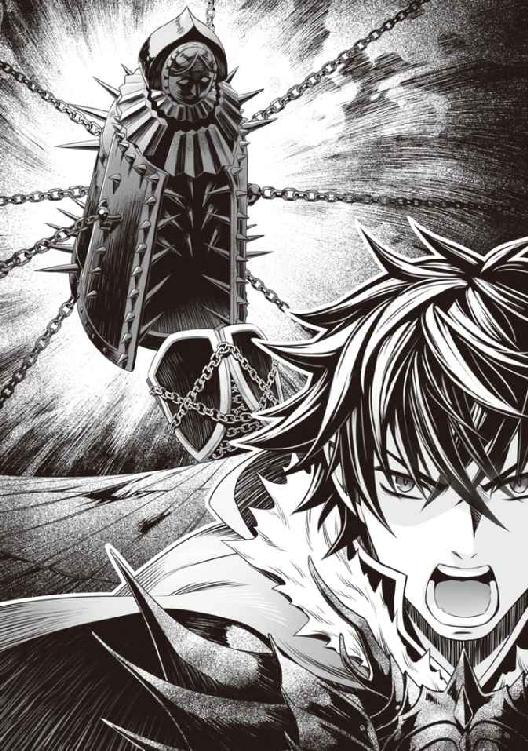
再度アイアンメイデンは閉じ、再度、次元ノソウルイーターを串刺しにする。
同時に俺のＳＰが０となった。
こ、これは使い手のＳＰを全て犠牲にして放つスキルだったのか。
そしてアイアンメイデンは効果時間が切れたのか消失した。
「はぁ......はぁ......」
「すごい......」
誰かが、そう呟いた。
見ると串刺しになった次元ノソウルイーターは絶命していた。
「勝った！」
俺は息も絶え絶えに、暴れるフィーロを抑えるため、盾をキメラヴァイパーシールドに戻した。
いきなりパワーアップしたこの盾はそんなに長い間変えていられない。
「ふにゅぅう......」
憤怒の盾Ⅱではなくなったお陰か、フィーロの自我が戻り、ぐったりと座り込む。
「ふう......」
「やりましたね」
「まあな」
「ふにゃあ......何があったのー？」
振り返ると丁度ラフタリアが俺に追いつき、フィーロは力尽きて地べたに倒れ込んでいた。
「どうにか波は収まったか？」
「フィーロ疲れたー......」
周りを見ると錬、元康、樹が悔しそうな顔でこちらを見ている。
「今回は負けたが、次はこうは行かないぞ」
「なんだよ。ゲーム知識がないとか言いながら戦えているじゃないか」
「怠けていたから力が有り余っていたんですね。卑怯な」
樹、お前が言うのか？ 常日頃から目立ちたくない、とかやっているお前みたいな奴こそ手を抜いたりするんだぞ？
「とにかく、これで......。──ッ!?」
な、なんだ!? ゾクッと背筋が凍りつくような嫌な感覚がする。
それは錬や元康、樹も感じていたようで辺りを見渡していた。樹の仲間の一人が脅えたように腰を抜かす。次元ノソウルイーターとは比べものにならないプレッシャーが辺りを支配している。
なんだこれ？
そして、シュタッという音と共に人影が現れる。
まだ敵がいたのか？ いい加減にしてくれ、俺はもう限界が近いぞ！
「この程度の雑魚に何を苦戦しているのか、勇者は貴方一人しかいないのですか？」
衣服は着物、色は漆黒、銀色の刺繍が施されていて、俺の元居た世界の基準だと葬式とかで親戚が着ている服を高級にした感じだ。
今までの中世っぽい感じの服装の中で着物を着ているというだけで違和感がある。
髪は黒いロングヘアー。
日本人にも見えるが、幽霊みたいな不気味さがある。
ただ、なんていうのだろう。時々幽霊のように若干半透明になって背後が見える。
そして扇らしき武器から......光線が俺達の背後に飛んでいく。
振り返るともう一匹、次元ノソウルイーターが物陰から必殺攻撃を放とうとしている瞬間だった。
「戦いの邪魔をしないでもらいたいですね。これは崇高な戦いの始まりなのですから」
「な......」
次元ノソウルイーターが一撃のもとに絶命する。
ウソだろ。俺達があれだけ苦戦して倒した次元ノソウルイーターを一撃で!?
その少女は俺をまっすぐに見つめて尋ねてくる。
「まあ、先ほどの戦いを見る限り、貴方が勇者ですか......他の者はまともに戦えているようには見えませんでしたが、貴方は違うようですね」
「......そうみたいだな」
「貴方、名前は？」
「人に名前を尋ねる時は自分からじゃないのか？」
「これは失礼、私の名前はグラス。言うなれば......貴方達勇者一行とは敵対関係にある者だと認識していただいて間違いないでしょう」
実際、友好的には見えないな。
「尚文だ」
「ナオフミですか、では......始めましょうか。波の戦いを！」
グラスと名乗った美少女は扇を広げ、突撃してきた。
くそ......俺はアイアンメイデンを放ったばかりで、まともに戦える状況じゃないんだぞ。
憤怒の盾Ⅱを使うことによる精神汚染だって厳しい。ラフタリアがいるお陰でどうにか抑えきれているというのに......。もう限界が近い。
「させるか！」
錬、元康、樹がそれぞれグラスに向けて武器で攻撃する。
「流星剣！」
「流星槍！」
「流星弓！」
三人の攻撃を待ち構えるグラスは僅かに唇を歪めた。
「甘いですね。──輪舞零ノ型・逆式雪月花！」
昼間だというのにワインレッドに染まる空が赤く光る。
俺はグラスの放った攻撃からラフタリア達を守るために盾を構えた。
見上げると血のように赤い月があたかも敵対者の言葉に呼応したかのように輝く。
そして円を描いた紅い閃光が勇者とその仲間達を薙ぎ払う。
「「「ぐあああああああああ！」」」
竜巻のような何かに元康、錬、樹とその仲間達が同時に撥ね飛ばされて倒れた。
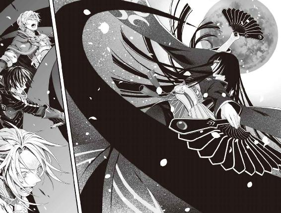
「ぐは！」
な......あいつ等はこの世界を熟知していて、相当な高Ｌｖのはず。簡単に負けるはずもない。
いや、次元ノソウルイーターに苦戦していたのに、そいつを一撃で倒せる相手の攻撃ではしょうがないのかもしれない。
これだけ消耗しているのに、次元ノソウルイーターが前哨戦みたいな扱いになっているぞ。
ゲームじゃないとは思っていたが、さすがに対処のしようがないほどの実力差を感じてしまう。
もしゲームだったら負けイベントを想定するな。だが、これは現実だ。
ここで負けても何か救いの手がある、なんて都合のいいことが起こるはずもない。
そもそも、ゲーム知識を持って、効率の良いＬｖ上げをしていた連中が負けたんだぞ？
何にも知らずに金稼ぎしていたような奴が勝てるなんて思えるはずもない。
それでも......俺は負けるわけにはいかないんだよな。ラフタリアのためにも、フィーロのためにも。
「なんとも情けない眷属器ですね。その程度では聖武器が泣きますよ」
持っている武器は鉄扇。両手で鉄扇を持ち、まるで踊っているかのように戦う。
「期待はずれも甚だしいですね」
「ごしゅじんさまー、すごく強いよ、あの子」
フィーロが全身の羽毛を逆立てて俺に言う。
「ええ、近くに居るだけで強力なプレッシャーを感じます。私達とは一線を画す強さかと」
尻尾が逆立つのを抑えるようにラフタリアも注意する。
俺は近くに吹き飛んできて、失神しているビッチを見下ろす。
お前が頼りにしていた勇者達は雑魚扱いだとよ。
しかし......ここをどう乗り越えるべきか？
正直、アイアンメイデンを放った所為でＳＰが枯渇している。最低でもＳＰを回復する手段が欲しい。
そうだ。ビッチは元康に可愛がられている奴だ。そういった便利な道具を持っているかもしれない。他に何か良いアイテムを持っていないか？
お？ 魔力水と魂癒水なんて持っているじゃないか、生意気な。
この二つはそれぞれ魔法を使う時に消費する魔力と、スキルを使う時に消費するＳＰを回復する効果がある。まあ、魂癒水は高くて買えないから試したことがないけどさ。話によると集中力を増加させて魔法の威力を上げるための飲み物と言われている。
魂癒水を試しに飲んでみる。栄養剤みたいな味がしたかと思うと視界のステータスに記載されていたＳＰが回復した。
おお、やっぱりＳＰ回復効果があった。よくよく考えてみれば、錬達はあんなにスキルを連打していたんだから回復する道具があるのは当たり前だよな。
「ナオフミ様！」
ラフタリアがビッチ女の懐からくすねる俺に注意してくる。
もう戦力外だし、最低限、道具くらいかすめても良いだろ？
「......非道な。それでも貴方は勇者ですか？」
「非道で結構。コイツ等はそれよりも酷い真似をしてきたんでね。強い恨みを持っているんだよ」
「ごしゅじんさま悪人みたいー」
「うるさい」
「敵に正論をぶつけられて返す言葉もありません......」
ラフタリアも呆れ気味に呟く。敵も俺達の態度に何か呆れ気味だ。
「......仲間ではないのでしょうが、人の道から外れた行いに違いはありません」
「どうとでも言え」
俺が勇者共の前に出るとグラスも構える。
さすがに戦闘不能の連中をこれ以上巻き込むわけにはいかないだろうし、その事をグラスも理解しているようだ。武人臭いしな、その辺りは気を遣っているのか？
「さて、では遊びもこれくらいにさせてもらいます！」
鉄扇を構えて敵はこっちに突き進んでくる。
速い！ 俺は咄嗟に盾を構える。直後、ガギン！ という鈍い音が盾から響く。
くっ......凄く重い。たった一撃で盾を持っている手が痺れるほどだ。
ドラゴンゾンビの比ではないほどの攻撃の重さ。鉄扇であんなに重い攻撃ができるということは、ラフタリアやフィーロではダメージを受けたら危ないな。
「ラフタリア、フィーロ！ 気を付けろ、こいつ......強い」
「はい！」
「うん！」
『力の根源たる盾の勇者が命ずる。理を今一度読み解き、彼の者を守れ！』
「ファスト・ガード！」
補助魔法を二人にそれぞれ掛けて戦いは始まった。
「......ここでは倒れた者達が戦いの邪魔となっていますね。正々堂々の勝負に、邪魔が入るのは私の美学に反します。場所を変えましょうか」
相手も俺の意図を掴んでいるのか、そう言って船から降りる。俺達もそれに続く。
「さて、ここでなら本気で戦えるでしょう。では......行きますよ！」
鉄扇の攻撃は、盾以外の部位で受けると俺でさえも痛みを伴う傷ができる。余裕ができるとファスト・ヒールを唱えて傷を治しているが、些か厳しい。
相手の攻撃は激しく、しかも動きが速い。しかも今までのような魔物ではなく知性を有した敵だ。俺に攻撃が入らないと理解するなり、ラフタリアやフィーロに目標を変えようとするくらいだ。
「させるか！」
だから俺はシールドプリズンを展開する。場所はグラスの居る所だ。
「あまい！」
グラスは俺の展開させたシールドプリズンを一薙ぎで破壊する。
だが、目的はそれじゃない。
俺がシールドプリズンを張ったのは......。
「てぇい！」
「とー！」
ラフタリアとフィーロの攻撃を事前に見せないためだ。
「ぐ......」
ラフタリアとフィーロのそれぞれの攻撃がグラスの扇の守る範囲を抜けてぶつかり、火花が散る。
「同じ戦闘タイプですか......これは先ほどの者達よりも面白いですね」
反撃をしようとラフタリアに向けて扇で切りつけてくる。
させるか！
俺が前に出てラフタリアを庇う。するとキメラヴァイパーシールドの反撃、蛇の毒牙（中）が作動してグラスに噛みつく。
「その程度の攻撃で、私が倒せると思ったのですか？」
どうやら毒は効果が薄いようだな。蛇の毒牙（中）を受けても平然としている。
確かに守りに重点を置いているのはラフタリアとフィーロの攻撃を鉄扇でいなしている時点でわかっていた。
だが、とにかく重いのだ。グラスの攻撃の全てが。
グラスの並々ならぬ強さは他の勇者を倒した事実が物語っている。
正直に言えば勝てる未来が想像できない。ＳＰを回復することはできても、決定打がやはり足りないのだ。
「ごしゅじんさま、フィーロの魔法を見ててー」
フィーロが右手と左手を交差させながら敵に向かって突進する。
「はいくいっくー」
次元ノソウルイーターと戦っていた時も使っていた、高速で動くとても強力な技だ。
一瞬、そう、本当に一瞬だけだけどフィーロが、ぶれて見えた。
空気が振動するような衝撃が敵を通じて俺に伝わってくる。
「うわぁ......この人すごくかたーい。フィーロの攻撃を受けて吹き飛ばないなんて」
「あの一瞬で八回も私に蹴りを与えてきましたか。残念ですが、強さが足りません」
え？ こいつ、あのフィーロの攻撃が見えていたっていうのか。
サッと舞うようにフィーロに向かって扇を振るうグラス。敵だというのに、その姿には一種の芸術的な美しさが感じられれた。それでいて、フィーロの攻撃を受けてもビクともしていない。
「フィーロ、もう一回だ！」
「えー......無理、魔力がもう無いし次に撃つための時間が掛かるー」
フィーロの必殺攻撃だったのか。そういえばさっきも連続では使っていなかったな。
まずいぞ、どんどん追い込まれている。このままじゃジリ貧だ。
ゆらぁっといつの間にか消えていたラフタリアがグラスの背後に回り込んでいて、不意打ちをしかける。魔法で姿を消していたんだ。
「今です！ フィーロ！」
一瞬の隙を突くというやつだ。さすがに背後から攻撃されたらグラスもダメージを受けるだろう。
だが。
「何をしているのですか？」
馬鹿な......！ ラフタリアが敵の死角を狙ったというのに、グラスは見向きもせず攻撃を止めてしまった。
「話になりませんね」
失望したように小さくため息をつくと、グラスは剣に向けて鉄扇を薙ぐ。軽そうな動作とは裏腹に、鈍い音がその場所に響いた。
バキン！
「な──」
ラフタリアの剣が折られた!?
どんだけの強さを持っているんだ。元々鉄扇は剣を折るソードブレイカーの性質があるが、完全に使いこなしているなんて。俺だってファスト・ガードを掛けて、一番硬い盾の部分で辛うじて抑えるので精一杯だというのに......。
決定打がもうフィーロしかない。しかし、それでも足りないだろう。
「く......」
ラフタリアは距離を置いて予備にしていた剣を抜く。もう手立てがないのか？
「本当に、この程度なのですか？ 正直に言えばもう少し楽しめると思っていたのですが」
「勝手に期待されても困るな。こっちは最初からいっぱいいっぱいなんだよ！」
「残念です」
敵の全身が発光している。
やばい！ これは勇者共を倒した時と同じ攻撃だ！
「ラフタリア、フィーロ！」
敵が舞うように高速回転を始める。その隙に、といっても数歩動く程度しか時間がなかったが、ラフタリアとフィーロは打ち合わせ通りに俺の後方に隠れた。
「シールドプリズン！」
対象は自分、魔法で作られた盾の檻が俺達を取り囲む。
シールドプリズンは敵を閉じ込める以外にもこういった、守りにも転用できる便利なスキルだ。
このプリズンで閉じ込めた者は檻が守りの壁の役目をしてくれる。
防御力は俺の放つスキルの中でも特に高い。
「輪舞零ノ型・逆式雪月花！」
凄い暴風と鉄扇による攻撃がシールドプリズンを薙ぎ払っていく。
「くうっ......」
凄い攻撃だ。俺がこれだけのダメージを負うということは他の勇者ではひとたまりもないのも頷ける。
「二人とも、大丈夫か？」
「辛うじて」
「いたいー......」
振り返ると二人ともかなりのダメージを受けてしまっている。俺はヒール軟膏を自分の傷口に塗った。一メートル範囲だったのでスキルの効果で二人の傷も一緒に治っていく。
「ほう。私の技を受けて立っているとは......そちらの防御力もなかなかのもののようですね」
竜巻が止み、敵がこちらに歩み寄る。
「お褒めに預かり光栄だ」
結構ボロボロだけど、まだ負けてはいない。
「さて、先ほどの炎のような盾は使わないのですか？」
こいつ、俺がまだ本気で戦っていないと思っているようだ。
というよりも、憤怒の盾Ⅱを使うのを待っているように見える。
どうする？ このままジリ貧で戦うか？ それともフィーロが暴走し、挙句怒りに飲まれてしまう危険性を覚悟で憤怒の盾Ⅱにするべきか？
......どうせ負けるなら、やって後悔するべきか。
「いいだろう。俺の力を......甘く見るなよ！」
俺は、憤怒の盾Ⅱに変えて挑む。
「ガアアアアアアアアアアアアアアアア！」
フィーロが再度暴走してグラスに向かって突撃した。
「先ほどよりも重い......ですが、残念ながら」
グラスは防御の構えすら取らない。
フィーロの蹴りがガツガツ当たっているのに、なんともないかのようだ。
「話になりません」
扇でフィーロの胸元を軽く突いた。
「ガ──」
たったそれだけの事なのに、フィーロは五メートルくらい飛んでしまった。
「ぐぅ......」
どんだけ強いんだよ。ゲームだったら負けイベントかと思う強さじゃないか。
「く......」
まだ、俺は自我を保てている。
大丈夫だ。どんな怒りであろうとも、俺を信じてくれる相手に応える想いは負けない。
しかし、長引けば危険なのには変わりないだろう。
俺は冷や汗を抑えながら前に出る。そしてラフタリアに距離を置くように目で指示を出した。
「ナオフミ様、大丈夫ですか？」
「ああ、まだ抑えられる」
俺は敵に向けて近づいていった。ビッチから奪った魂癒水の残りを飲んでＳＰを回復させる。
意識がスッキリするような気がした。これでまだ憤怒の盾Ⅱに意識を飲まれずに済む。
「もっと、本気で来てください」
「ああ、見せてやるよ！」
グラスが俺に向けて扇を振るう。
よし、キメラヴァイパーシールドの比じゃないほど攻撃が軽い。これなら構える必要がない。
俺を中心にセルフカースバーニングが発動する。
この炎は俺の怒りに合わせて火力が増減する。辛うじて自我を保てるほどに怒りを抑えているということは殺傷力はそこまで高くはないだろう。
その炎には呪いの力が宿っている。それを察したのか、ラフタリアは即座に下がった。
直後、憤怒の盾Ⅱから黒炎が巻き起こり敵を薙ぎ払う。
「何!?」
しかし、グラスはまるで風で撫でられたかのように涼しげにしていた。
そんな......反撃効果の中でも相当なモノであるはずのセルフカースバーニングを受けてなんともないだと!?
どんだけ頑丈なんだよコイツは！
「何を遊んでいるのですか？」
くそ、実力差がありすぎる！ 憤怒の盾Ⅱでも勝てないのか！
「この程度ですか？ 輪舞破ノ型・亀甲割！」
鉄扇を引いて強く前方、俺へ突き出した。すると鋭い光の矢のような物が飛んでくる。
危ない！ そう思って盾を構える。ガツンという重い衝撃。そして全身への痛み。
盾を伝って俺の体にダメージが入った。
「くっ......」
「この攻撃で倒れないのですか......しぶといですね」
痛みで平静を保ちづらい。だけど、ここで我を失うわけにはいかないんだ。
「なかなかの攻撃だったな」
おそらくは貫通系の攻撃......ゲームではありがちな性能だ。
どんなに防御力が高くても、無視されれば意味がない。あるいは相手の防御力が高いほど、与えるダメージが増える、という可能性もある。
これが勇者達の言っていた盾の弱さか？
経験則だが、ネットゲームは古くなればなるほど極端になることが多い。この世界に準じた、奴等のゲームがどんなものだったかは知らないが、俺の知識の範囲で何個か例をあげられる。
単純に敵の攻撃力が高すぎて盾職が弱いパターン。
次に避けゲー。即死攻撃などを多くの敵が使ってくるパターン。
最後に火力ゲー。防御職の役割である防ぐという必要性がない、攻撃力で押し切るパターン。
今まで盾が弱いとされる理由を俺なりに考えてみたが、どれも当てはまっているようには感じない......わからん。ともかく今は前にだけ集中する。
ファスト・ヒールを唱えて傷を治す。
「貴方の攻撃の短所はわかりました」
グラスが堂々と宣言する。
「黒い炎は近接攻撃をすると発動する。遠くからの攻撃では発動しない。そして配下の者には叫びによって敵を指し示す」
ぐ......痛いところを分析してくる。相当の武人なのだろう。洞察力が凄い。
前々回は黒い獣で前回はキメラ。そして今回は知的生命......いや、ヒトか。
波とは一体何なんだ？ ただの災害じゃなかったのか？
「ですがそれまでです。配下を倒し、貴方を遠くから攻撃すれば一方的でしょう。ですが、今の私からしたらその必要すらない」
「く......」
「さあ、貴方の一番強い攻撃をしてみてください」
そう、これは......まるで遊ばれているような感覚。グラスは避けるということすらする気配がない。
いや、おそらく、グラスは遊んでいるのだろう。
敵の一番強い攻撃を受けきってこそ、相手への手向けだとでも言うかのように。
だが、俺はそれでも負けるわけには、いかないんだ！
「舐めるなよ！ シールドプリズン！ チェンジシールド（攻）！」
グラスを盾の檻に閉じ込め、そして内側に攻撃する盾の檻に変える。
そして──
「アイアンメイデン！」
先ほど見つけた必殺のスキルをお見舞いしてやる。
檻を包むように大きな鉄の乙女が出現し、檻ごと串刺しにする。
「どうだ！」
だが......。
「思ったよりも威力がありませんね」
開かれたアイアンメイデンの中で、グラスはぴんぴんしていた。
そして碌にダメージを与えられないアイアンメイデンは粒子となって消える。
アイアンメイデンが消えて尚、グラスは平然と立っていた。
まるで何事もなかったかのように。
「な──」
く......もう打つ手がない。
「では波での戦いは我等の勝利で終わらせるとしましょう。貴方にはなんの恨みもありませんが──」
と、言い切る直前だっただろうか。視界の隅にあった砂時計のアイコンに変化が現れた。
00：59
と、突然の数字が出現した。
「時間ですか......。まさかこんなに早いとは」
今だ！ 俺の呼吸に合わせてラフタリアが魔法を咄嗟に唱える。
「ファスト・ライト！」
グラスの眼前に光の玉が出現し、閃光となって弾けた。
光を受け、グラスはただ佇んでいるだけだ。
咄嗟に盾をキメラヴァイパーシールドに変え、フィーロに近づく。起き上がって暴れ出そうとしていたフィーロが我に返った。
「急いで撤退するぞ！」
「待ちなさい！」
「俺の配下の足を舐めるなよ。逃げ切ってみせる」
「くっ！ 波の法則を逆手に取るということですか......そうやって時間を稼がれては困りますね」
「フィーロへろへろー......なんか突然状況変わってるー」
あんなのと真面目に戦っていられない。
アイアンメイデンまで効果がないんじゃ俺の打つ手はない。
「......良いでしょう。非常に不服ですが......時間がありません」
グラスが亀裂に向けて歩き出す。そして亀裂の前で振り返った。
なんだ？ 何か言うことでもあるのか？
「此度は引きますが、次はありません。波で勝つのは私達であることを忘れてはいけませんよ。その程度の強さならいつだって私達の勝利です」
勝つのは私達？ まるで勝ち負けがあるみたいな言い回しだ。
どういうことだ？ コイツ等は世界を滅ぼそうとする災害じゃなかったのか？
考えてみれば波がどんなものなのか俺は何も知らない。波の意味を知る必要がある。少なくとも、敵は知的生命体だという事実はわかった。
俺はクズ王やビッチ王女に囚われすぎている。勇者が戦う本当の敵は波であるコイツ等なんだ。
フッ......前も後ろも敵、やってられないな。
「ナオフミ、貴方の名は覚えました。首を洗って待っていなさい」
「覚えてもらう必要はないが......そうも言ってられないか。だが、俺達だって負けるつもりはない」
俺の言葉に満足したのか、グラスは潜んでいた次元ノソウルイーターを仕留めると亀裂に入って去っていった。
味方を殺していった？ いや、グラスという人物像をみるに、味方ではなかったのか？
やがてグラスの撤退に合わせ、亀裂は消え去り、それと同時に......砂時計の数字は消えた。
「ふう......」
「どうにか、生き延びましたね。あの方は何者なのでしょう？」
「さあな」
「ふにゃあ......」
フィーロは力尽きて地べたに倒れ込む。俺も今すぐ横になりたい。
「どうにか波は収まったか」
「ですね」
「フィーロ疲れたー......」
「そうだな。勇者共は無視して、俺達は後始末をしよう」
正直に言えば、惨敗だった......どんだけ強い奴が出てくるんだよ。ゲーム知識を持っていたって勝てない相手と戦わされるって最悪だ。
しかし......あの時間表示はなんだったんだ？
とにかく、次の波までに俺達はもっと強くならねばならない。
クラスアップをしなくては決定的に戦力が足りないのが露見してしまった。
というか、クラスアップしているはずの連中でさえあの始末なんだから......もっと決定的な何かが欲しいところだ。
こうしてこの世界における第三の波は終結を迎えたのだった。
十三話 決別
次元ノソウルイーターがいた幽霊船に戻ってみる。要である魔物の消失で、幽霊船は地面に横たわっていた。周りに勇者共とその仲間達が気絶している。
志願兵と村人達が気絶した勇者達を守っていた。余計な事を......。
さて、お楽しみの波の素材を盾に吸わせる作業なのだが、今回はゴブリンアサルトシャドウとリザードマンシャドウは名前通り影なので素材が吸えなかった。いや、厳密には影の塊みたいなやつを吸ってみたのだけど新しい盾は一つしかないというかそんな感じだ。
シャドウシールド
能力未解放......装備ボーナス、闇耐性（小）
他の奴等は全部ステータスアップ系の装備ボーナスしかないので省略する。
残ったのは次元ノソウルイーター。
「あーん」
「食うな」
フィーロが掴んで食べようとしたので命令した。今回この鳥が暴走したのは何が原因かわかっているのか。どう見てもこいつが不用意に腐竜の核を食ったのが原因だろ。
「えー......」
フィーロから受け取ろうとしたところ、俺の手をすり抜けて地面に落ちたのには驚いた。
「お前、どうやって持ったんだ？」
「手にね、風の魔法を纏って持ってたの」
「......はぁ」
素手では触ることさえできないとは、変な魚だ。
「どうかしました？」
志願兵が首を傾げている俺に声を掛けてくる。
「ああ、この魔物はどうやって持つのかフィーロに聞いていたんだ」
「これは実体のない魔物ですね。こういう魔物の場合は魔力で持つか属性の付与されたものを扱うと良いですよ」
「は？」
「一応、有名な事なのですが盾の勇者様はご存じありませんでした？」
「ああ」
「まあ、実体のない魔物は珍しいので、知らなくてもしょうがありませんよ」
「じゃあ、誰かその属性の入った武器を持ってないか？ 捌くのに使いたいんだ」
誰か持っている奴はいないかと周りに聞いたら、一人だけ安物の属性の入った武器を所持していたので貸してもらい、捌いた。
フィーロの話を参考に魔力付与の要領で手に魔力を宿らせて持ち、尾頭の部分を吸わせる。
ソウルイーターシールド
能力未解放......装備ボーナス、スキル「セカンドシールド」 魂耐性（中）精神攻撃耐性（中）ＳＰアップ
専用効果 ソウルイート ＳＰ回復（微弱）
頭だけで魔物名しか入っていないということは、解体しても意味が殆どないことを表している。別の部位を吸ってみるが変化がない。
しかし、スキルのセカンドシールドとは何だ？ 魂耐性は......この系統の攻撃の耐性だろう。
専用効果のソウルイートが若干気になるな。俺が魂を食えるとかだったら嫌だな。
徐に盾の形状を変えてみる。この魔物、ソウルイーターの頭をそのまま盾にしたみたいな意匠が施されていた。
......防御力がキメラヴァイパーの方が上だ。
ソウルイートという専用効果が魂を食べることができるのならこのソウルイーターを俺は持つことができるはずだ。だから手を伸ばしてみる。だがソウルイーターの肉に触れることはできなかった。
どうやら違うようだ。良かった。さすがに魂を食うとかそんな趣味はない。
大方、カウンター系の効果だろう。相手の魂に喰らいついてＳＰを奪い取るとかその辺り。
さて、スキル、セカンドシールドは何だろう？ 試しに使ってみる。
「セカンドシールド」
エアストシールド→セカンドシールド
と、視界にアイコンが浮かんだ。
「エアストシールド！」
そしてエアストシールドが出現したのを確認してもう一度叫ぶ。
「セカンドシールド！」
......もう一枚盾が出現した。
あれだ。一枚しか出せなかったエアストシールドの効果時間中にもう一枚出すことができるようになったようだ。使い道は多そうだが、良いのか悪いのか微妙な性能だ。
そして残りの次元ノソウルイーターに目を向ける。
「全部吸ってあいつ等を困らせたいが......」
それをするとうるさそうだからな。
何より他の勇者が弱くて困るのは何もこの世界の連中だけじゃない。俺だけ強くなってもあの三人が弱いと楽できない。今回は俺がＭＶＰだろと言いたいが、はぁ......一応残しておくか。
「ごしゅじんさまー、残ってるならフィーロにちょうだい！」
涎を垂らしながら鳥が騒いでいる。
「しょうがねえなぁ......」
背骨から尻尾の辺りまでを捌いてフィーロに投げる。するとパクッと食った。
「骨なのにスライムみたいな食感ー」
「待て、いつ俺達がスライムに会った？」
「あのねー」
ここから先はどうでも良いので省略する。結果は俺が怒ったということにしておこう。
盾に吸わせられなかったという意味で。
「よし、次は村の復興の手伝いをするぞ」
やることを終えた俺達は志願兵と一緒に魔物の死骸の処理と復興の手伝いを始めた。
さすがに全てを賄うことはできない。だからあくまで、炊き出しや怪我人の治療を最優先にする。
「わかりました。僕達も頑張ります！」
志願兵の奴等、別に大した裏もなく俺の言うことに素直に従っていた。だから怪しむ必要はもうないだろう。
長い戦いから一夜明け、やっと騎士団が到着した。
騎士団の団長の奴、俺が志願兵を召喚したのをものすごく怒っている。
「貴様！ 勝手に我が騎士団の兵をもっていきおって！」
「勇者様の所為ではありません！ 僕達が勇者様の力になりたいと進言し、勇者様のお力を借りただけです」
「なに？ それでも貴様等は栄誉あるメルロマルクの兵士か！ 盾なんぞに惑わされおって！」
「お前さー......この惨状を見て問題行動だって部下を処分するわけ？ こいつ等がいなかったら被害はもっと出ていたと思うぞ？」
俺の返答に応じるように出迎えた村人も頷く。
「あと、お前達が頼りにしてる勇者共とその仲間達は全員、波で現れた強敵にやられてそこの建物に収容されているぞ」
頼んでもいないのに村人が家に運んで、勇者とその仲間達は治療中だ。軽く薬を処方されたらしいが、完治には数日掛かるだろう。回復は早そうだから今日中には意識が戻るとは思うけどな。
「急いで勇者様とその仲間を運び出せ！ 早急に治療院へ送るのだ！」
「アイツ等は比較的軽傷だぞ。他の重傷を負ってる村人も居るんだからそっちを優先して──」
「勇者とその一行を最優先するのは、我が国、そして世界のためだ！」
何とも傲慢な返答なことで......。
まあそうなるだろうからと、治療は村人の方を優先的にしていたから問題はないけど。
「はいはい。さっさと連れてけ、俺は忙しいんだ」
「待て、盾」
追い散らそうと手を振ると、騎士団長は志願兵から事情を聞いて俺を呼び止める。
「今度は何だよ......」
「城へ報告についてきてもらおう」
「やだよ、面倒くさい」
「良いから来るんだ！」
やってられるか。優先すべき事があるのに、どうして無意味な事をしなくてはならない。
俺が無視して踵を返そうとすると、志願兵達が懇願する目で頭を下げる。
「お願いします盾の勇者様、どうかご同行を......」
コイツ等は俺の指示にちゃんと従って行動していたからなぁ。無下にするわけにもいかないし、どうせ武器屋の親父に発注している金属製の馬車を受け取りに行かねばならないから......。
「はぁ......」
ボリボリと頭を掻きながら振り返る。
「わかったよ。行けば良いんだろ、行けば。コイツ等の善意に一度だけ応えてやる」
「ありがとうございます！」
感謝を言葉と姿で表した志願兵に渋々頷いてやった。
こうして俺達は城へと向かうのだった。
翌日、城下町に到着したので城へと入る。
「盾の仲間は別の部屋で待っていてもらおう」
「ここまで来て俺だけかよ！」
なんでコイツ等こんなに偉そうなんだ？
「なあ、もう帰って良いか？」
どうせ碌な事言わないだろうし、時間の無駄だろう。
「そうはいかん。貴様には聞かねばならないことが山ほどあるんだ」
「ここに来るまでに話しておいただろうが」
他の勇者がやられて、その敵を俺達が撃退した経緯は既に説明してある。志願兵も遠くからその様子を確認していたので裏は取れているから嘘とは思われていないと思う。
クズ王の場合、捏造するかもしれないが、その場合は早々と逃げ出せば良い。
今の俺なら可能だし、ラフタリアとフィーロがいれば簡単には捕まらない。
「静かに！ 王の御前である！」
ギィイイッと扉が開いて玉座の間に案内され、クズ王が険しい顔で俺を出迎えた。
既に話は行っているのだろう。俺が活躍したことに対する苛立ちが伝わってくる。
「非常に遺憾だが、よくぞ波を鎮めてくれた、盾。ワシは信じておらんが」
「それが人に礼を言う態度か」
「無礼な！ ......そこで一つ尋ねたいことがある。虚言だと思っておるが」
「......なんだよ」
一々語尾に信じていないとか、虚言だとかうざいな。
「盾、お前はどのように他の勇者を出し抜き、強さを手に入れた？ 信じてはおらんが、それを話す義務がお前にはある。さあ、話せ。嘘だと思うがな」
......これはアレだよな。他の勇者が俺より弱いかもしれないことをクズ王は懸念して、直接問い詰めているということだよな。はぁ......呆れて物も言えないほどのクズっぷりだ。
正直、なんで他の勇者を倒したグラスが撤退したのかわからない。
一番強い勇者だと誤解した俺を狙って戦い、残り時間が出たと同時に撤退した。
あの砂時計の残り時間が関わっているのはわかるが、それ以上は謎だ。残り時間を超えたらどうなるのだろうか？
疑問は尽きない。その辺りはいずれ確かめなくてはいけない。けれど俺も暇ではない。
だが、ここはアレだよな。俺は晴れやかな笑みでクズに向かって親指を下に向けた。
「知りたければ土下座しろ」
「は？」
クズ王の奴、呆気に取られた表情で固まる。なんとも面白い顔だ。写真とかに残しておきたい。
「聞こえなかったのか？ 耳が遠いようだなクズ。知りたかったら地面に頭を擦りつけて懇願しろと言っているんだ！」
「き、き、き」
「どうした？ 猿のような奇声を上げて。あーなるほど、この国の王は猿以下のクズだもんなー？ ワシはクズ猿を信じておらんが」
語尾をマネしながらバカにするとクズ王の奴、みるみる顔を真っ赤に染めて親の仇みたいな目で俺を睨みつける。あ、かなり気分が良いな。これ。
「貴様──────────────────────！」
クズ王の叫びは城中に響き渡るほどだった。
敵は前方に災厄の波、後方にはクズ。だが、俺はどちらにも負けるつもりはない。
「二度とワシにその面を見せるな！」
「お前が来いって言ったんだろ！ 言われなくても最初からそのつもりだ」
こうして俺は、真なる意味でクズ王と決別した。
十四話 旅立ち
「打ち首じゃぁあああああああああ！」
クズの野郎、俺の返答に相当お冠みたいだな。
「おっと、俺にギロチンの刃が通ると思うなよ？」
ガチャガチャと音を立てて俺に詰め寄ろうとする騎士達とクズに向かって言い放つ。
「波で他の勇者達がやられた相手を撃退したのが俺だってことを忘れてないか？」
盾に手を添えて答えると騎士達は一歩も動けずにたじろいだ。
まがりなりにも勇者だ。何より今回の波での戦果を知る者なら不用意に近づいてはこない。
たとえ、それが半分ハッタリだったとしても。
「何をしている！ その無礼者を即刻殺せ！」
「おい......」
ドスの利いた声で俺はクズを睨みつけて、もう一度言う。
「わからないのか？ 今の俺なら正面から城に入ってお前を殺し、正面から逃げ切ることだってできるんだぜ？」
「ぐぬ......」
クズの奴、ものすごく悔しそうな顔をしていやがる。
「信じていないなら実際に試してみるか？」
脅しとハッタリは相手と交渉する上で必要だとこの世界で学んだ。
だから最大限使って、クズを牽制する。
「頼みの勇者も、敵に負けたからな。そんな敵を倒した俺に敵うと思っているのかな？」
「ぐぬぬぬ......」
歯軋りをして悔しがるクズ。
「そんな事を言っていられるのも──」
「俺の配下に手を出したら、殺すぞ？」
言うであろう可能性を先に潰す。
アイアンメイデンは相当強力なスキルだ。ソウルイーターを仕留めたくらいだし、殺すことはできるだろう。最悪セルフカースバーニングの炎に巻き込めば傷くらいは負わせられる。
クズは顔を青くした。やっと自身の立場を理解したらしい。
「もう二度と俺に関わるな、クズ。波が終われば俺は帰れるんだろう。それまで最低限協力はしてやる。だけど俺の邪魔をするな」
脅しはあくまでも強く、だけど簡単に切り札を使ってはならない。元々切り札とは、できる限り切らずに取っておく最後の手段なのだ。こいつを今ここで殺しても何も解決しない。こいつの後釜のクズが現れて俺を指名手配にするだけだ。
それに俺だって他の勇者と正面から戦って勝てるかと言われれば怪しい。
しかも三人揃って挑まれたらおそらく負けるだろうな。
「じゃあな」
俺は踵を返して、玉座の間を後にする。
「許さん！ 許さんぞ盾ぇええええええええええええええええ！」
クズの絶叫が玉座の間に響き渡った。
「それはこっちの台詞だぁああああああああああああああ！」
俺は立ち去りつつ、言い放った。
玉座の間を後にして階段を降りたところで、貴族っぽい女性とすれ違う。
扇で口元を隠し、高そうなドレスを着ている。顔はよく見えないが、整っていると思う。年齢は幾つだろう？ おそらく二〇代後半くらいか......？ 髪の色が紫だ......珍しい色をしているな。
「此度の活躍、お疲れ様でした......でごじゃる」
ごじゃる？ やば、振り向きそうになった。
ん？ 女性の後ろに第二王女が同行しているぞ。
「あ」
俺は無視して歩く。ビッチの妹と話すことなどない。
「メルティ様」
「わかってるわよ！」
そう、その時はこのすれ違いを何とも思わず歩いていった。
まさか第二王女がこの後の騒動の重要な鍵になるだなんて夢にも思わなかった。
ちなみに、ラフタリアとフィーロは別室で俺を待っていた。俺が騒ぎを起こすだろうと予測して脱出の準備を進めていたという。俺のことを理解してくれていると喜ぶべきなのか、微妙だが。
城から出た直後、武器屋に依頼していた馬車ができているか聞きに行った。
「お、アンちゃん。頼まれていた馬車が完成したぜ」
「おお、早いな。親父、お前は金属系の頼みなら何でも達成するな」
「俺が窓口になって知り合いにかけ合っただけだよ。俺が作ったわけねえだろ！」
ま、鉄工所辺りで作ってもらったというのが妥当なところか。
「いや、金さえあれば何でもできるからそういう奴かと」
「アンちゃんにそう言われると何でもできるように聞こえて悲しくなってくるな。俺はアンちゃんみたいに万能じゃねえよ」
「俺も万能じゃないのだが......」
親父は俺を何だと思っているんだ？
「裏に停めてあるから見てくれ」
「ああ、じゃあ見せてもらうかな。ところで親父、ラフタリアの──」
俺が言い終わる前にラフタリアが俺の手を握る。
「どうした？」
「剣ならまだ大丈夫だと思います。予備の剣がありますし......。今はそのお金を元に行動しましょう」
「ふむ......ラフタリアがそう言うのなら止めておくが......」
まあ、今はフィーロが攻撃の要として動いてくれている。ラフタリアが補助的に立ち回ってくれるのなら緊急には必要ないか。もしかしたら、どこかで親父の店より良いものが手に入るかもしれないし。
武器屋の裏手に回ると、確かに金属製の馬車が置かれていた。
幌の部分も金属製で、昔親が買ってきたブリキ製の馬車の置物を大きくしたような感じだ。
「わぁあ......」
フィーロの目がこれまでにないくらいキラキラ輝いている。
よろよろと引く場所に入り、取っ手を掴む。
「フィーロが引いても良いんだよね！」
「ああ」
「やったぁ！」
凄くご機嫌のフィーロは両足をばたつかせて今にも出発したい、そんな顔をしている。
「とりあえず荷物を運び込むぞ」
「はい」
「はーい！」
波と城下町までの間だけ使っていた荷車から荷物を降ろし、新しい馬車に移す。
何だかんだで売り物や素材、道具を運び込むのに時間が掛かった。
「どうだい、アンちゃん」
暇を見て武器屋の親父が顔を出す。俺は良い仕事をしたと指を立てて答えた。
「ああ、期待通りの品だ」
「そうか、しかしかなりの重量らしいが......鳥の嬢ちゃんなら問題ないか？」
「うん！」
「コイツ、馬車に荷車を三台連結させた状態で楽しく引いていたからな」
「そりゃあすげぇ」
「むしろ期待より軽くてガッカリとか言い出すかもしれない」
「えっとね。硬いのが良いの！」
フィロリアルの基準なのか？ あれだ、引くものが硬くて重いほうが偉いとかそんな感じで。
「ははは、まあ頑張れや。ところでアンちゃんはこれからどうするんだ？」
「どうするって？」
「聞いたぜ。城で何かかましたらしいな」
親父の奴、若干困り顔で俺に言う。
「早いな」
「噂は楽しく生きるスパイスだぜ」
「まあ、な。あのクズが偉そうにほざくから立場を理解させてやったんだ」
「......いつかやらかすとは思ってたよ、アンちゃん」
「期待には応えるさ」
「できれば応えないで欲しかったぜ」
「で、先ほどの質問だが、そうだな......クラスアップしにシルトヴェルトかシルドフリーデンに行こうと思ってる」
クズを脅して龍刻の砂時計の使用許可を得るという選択もないことはないが、クズの管轄でラフタリアやフィーロをクラスアップさせようものなら何かされそうで怖い。
どういうものなのかもいまいち理解していないし、管理している側から何か介入できたりするのだとすると余計な不安が付きまとう。ならば最初から問題のなさそうな、フリーパスらしいこの二つの国でクラスアップさせてもらうのが一番だろう。
「まあ、アンちゃんならいつかその国へ行くだろうと思っていたよ」
「は？」
親父の奴、納得の表情で頷いた。どういう意味だ？
「オススメはシルドフリーデンだ。シルトヴェルトは極端な国だからなぁ......」
「そうなのか？」
「ああ、亜人絶対主義で人間は奴隷というこの国とは真逆の国だ」
なるほど......じゃあ人間である俺には不向きだな。
「だが──」
「参考になった。ではシルドフリーデンに行くとするよ」
積み込みが終わったので俺達は馬車に乗る。
「そうか、じゃあまた店に顔を出しに来るのを待ってるぜ」
「ああ、もしかしたら親父に幽霊とか魂属性の敵と戦う武器を頼むかもしれないしな」
「なるほど、アンちゃんもそのくらいの敵を想定するようになったか。じゃあ用意しておかないとな」
「材料から揃えて安く作りたいものだ」
「アンちゃんには敵わないな。できれば期限ギリギリに来ないようにしろよ。どこで材料が取れるか教えてやるからよ」
「わかった。余裕のある工程を考える。では行こう。じゃあな、親父」
「またな」
フィーロが馬車をゴトゴトと引き出した。
当面の目的はクラスアップだ。フィーロを走らせて二週間の道のり。やや長い道のりだけど今後のためにも行くとしよう。
「あれです！」
外から大きな声が聞こえる。城下町を出る直前、金属の馬車を叩く音と声が響いた。
「見つけたわよ！」
「あ、メルちゃん！」
「......なんだ？」
フィーロを止めさせて馬車から顔を覗かせると第二王女が眉を跳ね上げて俺を指差していた。
第二王女の後ろに騎士がついている。先ほど俺達を見つけたのは後ろの連中だろう。
「今すぐ城に戻りなさい！」
「は？ いきなりなんだ」
「ちゃんと父上と話をしなさいと言っているの！」
うるさいクソガキだ。あのクズと話をする必要なんて微塵もないだろ。
「全てはお前の親父が悪いんだ。俺は悪くない。一つ賢くなったな」
「なんですって!?」
まあ、今更な気もするが。あのビッチな王女の妹だ、まともに話す必要なんてないだろ。
「お前の親父に伝えろ。いつでも殺すことができる。常に怯えていろってな」
「どうして！ どうしてそこまで酷いことを言うの？ ちゃんと話を聞かせて！」
「お前の親父がクズだからだ！ 話なんてする必要はない。お前の親が悪い！」
「む、む......絶対許さない！ 母上が間違ってる！ 盾の勇者は悪人だ！」
配下の騎士っぽい奴が前に出てくる。
「ふん。相手してられるか。フィーロ」
「なーに？」
「行くぞ」
「えー......メルちゃんと遊びたい」
「ダメだ」
「ぶー......」
「早く行け！」
「はーい......じゃあね。メルちゃん」
フィーロは頷くと前を向き、馬車を急発進させた。
「あ、まて──────────────！」
第二王女の声が遠くなっていく。......やっぱり城下町は鬼門だ。買い物以外は来たくないな。
十五話 盾の悪魔
「ナオフミ様、もう少し話をするべきだったのではありませんか？」
「そうは言うが、あのクズの娘でビッチの妹だろ？ まともとは決して思えん」
「そうですが......一度は助けてくれたではありませんか。その前にも少しの間だけですが一緒に旅をした仲ですよ」
む......そういえば、元康の暴走から俺達を庇ってくれてはいるんだよな。
だがなぁ。アレは盛大なフィーロ略奪作戦だろうし、あのまま話を受け入れていたら今頃フィーロは取られているだろ。現にフィーロは異常なほど第二王女に懐いている。
「じゃあ、追いかけてきたら、少しくらいは話を聞いてやろう」
「お願いしますよ。フィーロの友達なんですから」
「メルちゃん良い子だよ？」
「表面上は、だろ？ それよりも、これからの事を考えろ」
「行商しながら行くのですね」
「まあな。旅費の捻出もあるが武器の製作費も兼ねている。何だかんだでフィーロの食費がな」
馬力はあるけど、その分消費も激しいフィーロの飯代は馬鹿にならない。魔物をエサにしているけど、賄いきれる量じゃないんだ。どこで金を消費するかわからないから、今のうちに稼いでおくのは道理だろう。宿泊する村や町で物を売れば良いし。
「おや？」
馬車の隅に見覚えのない袋が一つ、転がっている。
なんだろうと思って開くと、一通の手紙と共に何やらアクセサリーのようなものが出てきた。
『アンちゃんへ。
なんていうか、正面から手渡すと恥ずかしいからよ。ちょっとした道具をアンちゃんに用意しておいた。気に入ったら使ってくれ』
武器屋の親父......。その心遣いと気の遣い方に心がほっこりする。
えっと、手始めに一つ取り出してみよう。
長い......剣だ。しかも折れてしまったラフタリアの剣と同じ物。
親父の奴、察してくれていたのか。なんていう洞察力。素直に感動した。涙が出そう。
「ラフタリア」
「なんですか？」
「親父からの餞別だ」
「......これは、とても高いのに。感謝してもしきれません」
ラフタリアも剣を受け取って涙ぐむ。あの親父は色々と粋な事をしてくれるよな。
「他に何があるんだ？」
色々と入っていて、それぞれ誰の物なのか指定されている。
手紙にも道具についての簡単なメモが書かれていた。急いで書いたのかかなり走り書きだ。
えっとー......まず俺のは、盾の宝石の上に付けるアクセサリー？ 形状は......蓋みたいだな。
親父のメモでは後で俺の盾を詳しく調べるための物らしい。
まあ、この盾の所為で上手く戦えないわけだから親父に調べてもらうのが良いだろうな。
カチッと宝石の上に嵌めこむ。
次はラフタリアだ。もう一振りの剣？ 俺はラフタリアに剣を渡す。
「それが餞別らしい」
「また剣ですか？」
スッと鞘からラフタリアは剣を抜く。キュポッて音がして抜けるも刀身が無い。
なんだこれ？
「......芝居用の柄ですか？」
「ど、どうだろう？」
メモには試作品の剣で、魔力剣と書かれている。実体のない相手に効くそうだ。
こちらが知っていることを前提に書いたな。本来なら親父が説明してくれるはずが、恥ずかしくて説明が不足したか。刀身はどうするんだよ？ それとも、実体のない奴には刀身が見えるとかか？
「刀身がないことに意味があるのかもしれません。少し調べてみますね」
「そうだな。親父が無意味なものを渡してくるとは思えないし」
よし。魔力剣についてはラフタリアに任せるとして......。
「次はー......」
フィーロというか、俺用だ。
「グローブか？」
見た感じ、宝石の嵌ったグローブだ。なんかカッコいいな。
えっと......あ、メモに説明が書かれている。
......読んでいるうちにメモを握りしめる衝動に駆られかけた。
フィーロが馬車を引けなくて困る場合用のアイテムらしい。その場合、俺がこのグローブを嵌めて、フィーロと一緒に馬車を引けばいいそうだ。
効果は魔力に比例して力が出るとか、パワーグローブってやつ？
なんで俺がこんなクソ重そうな馬車を引かねばならないんだ。親父の気の遣い方が間違っている。
「フィーロ。お前のだ」
元々怪力なフィーロに引かせるのが一番だろ。
「今のフィーロの手じゃ入らないよ？」
フィロリアル・クイーン形態じゃ着けられるものじゃないか。まあ、そうだよな。
「人型時にでも着けておけ。何かの遊びに使えるだろ」
最悪、俺が細工でもすれば良いだろう。
「はーい！」
ホント、俺達に碌な事をしない連中ばかりだけど、親父のような人がいると、頑張りたくなる。
次の波にはグラスと遭遇する可能性が高い。それまでに戦えるほどの強さを手に入れねばならない。
そのためには親父に武器を作ってもらうことになるだろう。そのためにも頑張ろうと俺は気合を入れる。
「いくぞ！」
「はい」
「うん！ しゅっぱーつ！」
こうして俺達の旅が始まった。
翌朝。朝食を軽く取った後、俺達は足早に宿屋を後にした。そんな街道。
「まてえええええええええええ！ 父上と話をしなさーい！」
眉間に皺を寄せて俺は額に手を当てる。わかってはいたが、こんなに早く追いつかれるとは。
フィーロの足に追いつくって、なかなかの速度で追いかけてきたんだな。念のために行きたい方向とは別の方に走らせて迂回したのに。
「やっと追いついた！」
「あ、メルちゃんだ」
フィーロが立ち止まったので馬車を降りてクソガキを出迎える。
「謝ってちゃんと話をしなさい！」
まったく、最初は丁寧な口調だったのに、敵意を持ったら命令口調に変わりやがった。
化けの皮が剥がれてきたな。やはりフィーロが目的か。
「ごめん。これで良いか？」
「わたしじゃなくて父上に謝って！」
うるさいなぁ。相手なんかしていられないんだけどな。
「じゃなきゃ父上を母上が叱るでしょ」
「何を言っているんだ？」
無視してまた走り去るか？
だが、昨日ラフタリアに注意されているしなぁ。一応は聞いておくべきか？
確かにこれまで、コイツは俺に何もしていない。フィーロを奪おうとしているというのも俺の憶測でしかないわけだし、あくまで善意的に行動している。それであのクズと話をしろと説教してくるのだから、厄介極まりないけどさ。
しかし......母上が叱るってクズは尻に敷かれているのか？
「なあ、お前は俺に何をさせたいんだ？」
「だから盾の勇者と父上が仲直りする場を設けようと──」
メルティの指示を無視して後ろの騎士っぽい奴が剣を抜く。
あれ？ 一番の後ろの奴が水晶玉を俺とメルティに向けている。
なんだ、あれは？ そこでふと気付く。
コイツ等......俺を見ていない。
背筋をヒヤリと嫌な気配が支配していく。
ビッチに騙された時のような嫌な予感染みた雰囲気というのだろうか。ここ数ヶ月で培った、誰かが人を陥れようとしている空気を感じることができた。
咄嗟に騎士っぽい奴に向けて走り出す。その予感は現実のものとなって俺達に降りかかった。
第二王女に向けて騎士は剣を振りかぶったのだ。
「キャアアアアアアアアア!?」
「エアストシールド！」
クソガキが絶叫を上げる。瞬時にエアストシールドを出して妨害する。
「......なんのつもりだ！」
腰を抜かすクソガキの前に出て敵を睨む。
「おのれ、盾め！ 姫を人質にするとは！」
「はぁ？」
自分達が手に掛けようとしていたにもかかわらず、何を言っているんだ。
第二王女の方もそこを理解しているらしく、顔色が青い。
「盾は悪！ 最初からそう決まっているのだ！」
そう言いながら敵達は俺達に襲いかかってきた。
俺は第二王女を引き寄せて庇う。ガキンという金属音が辺りに響き渡った。
「く......」
騎士達は魔法を詠唱し、上から火の雨を降らせてきた。
しょうがない。マントで第二王女を覆い、魔法をやり過ごす。
「おのれ......盾の悪魔め！」
「フィーロ、ラフタリア！」
「はい！」
「はーい！」
俺の指示に従い、ラフタリアとフィーロは敵に向かって駆ける。
反撃を察知して騎士達は馬に乗って走り出した。
「馬鹿が」
フィーロの脚は馬よりも速い。一瞬にして敵の一人を落馬させる。
「ぐあああああああああ！」
「あ、悪魔なんかに」
更に追い討ちを掛けるのだが、一人、二人と倒しているうちに何人かを捕り逃してしまった。
「一体何なんだ、アイツ等」
第二王女の護衛とかじゃなかったのか？ ここは問い詰めるしかないな。縄で縛った敵に尋ねる。
「さて、貴様等、なんで第二王女を俺の目の前で殺そうとした？ 理由を話せ」
「悪魔に話す口など持たぬ」
へぇ......。悪魔、ね。ここまでストレートな罵倒は久しぶりだ。盾の勇者だと知られるやこの言葉を発する奴が何度かいた。前々から気になってはいたが、聞いても教えてくれないんだよな。
今のコイツと同じで、悪魔に語る口は持たない、みたいな。
「お前等さ。立場をわかってる？」
俺はフィーロに指示を出す。
「ごはん？」
敵の奴、若干顔を青くした。だけど平静を取り戻して答える。
「たとえ我等が死んでも、それは聖戦の犠牲となっただけ......神が導いてくださる」
......宗教系か。この手の狂信的な連中は脅しが通じないんだよなぁ。
「第二王女、心当たりはあるか？」
第二王女はフルフルと恐怖で震えながらも首を振る。
「ふむ、じゃあお前等が信仰する宗教は何なんだ？ どうせどこぞのクソ宗教なんだろうがな」
「三勇教会だ！ 悪魔め！ 我等が神を愚弄する気か！」
やはりか。この手の連中は自らの信仰する宗教を馬鹿にすると我慢ができなくなる。
後は口八丁手八丁で聞き出せばこっちのものだ。
「この国の宗教ですよ」
ラフタリアがポツリと呟く。
「知っているのか？」
「というか、この国の方は殆どが三勇教徒ですよ。私の村は別の宗教だったので、入っていませんが。ナオフミ様、ご存じなかったので？」
「知らん」
「知っているものだとばかり思ってました」
「なんで武器屋の親父とかは教えてくれなかったんだろうな？」
「気を遣っていたのではないかと......」
まあ、宗教が俺への弾圧の理由だとか言われたら、倒すべき敵を見つけて無謀な突撃なんてしかねない時期が俺にはあったしな。むしろ今日、俺が親父の話を遮ってしまったが、もしかしたら何か有益な話をしてくれたのかもしれない。もう少しちゃんと聞くように努力しよう。
「......じゃあ、コイツ等の所持品から宗教関連の道具を探せ」
「あ、はい」
ラフタリアが縛り上げた連中からロザリオっぽいアクセサリーを見つける。
見た感じ普通のアクセサリーで、特殊な付与は施されていない、只のファッション品だ。
「ソレを地面に置け」
「はぁ......」
変なシンボルだ。三つの武器が折り重なっている。剣、槍、弓？ 嫌な武器勢ぞろいだなぁ。
そういや聖水を買いに行った時の教会もこれだった。ああ、この教会に当たり前のように入っていったからラフタリアは俺が知っていると思い込んだのか。
「さて、お前等、素直に話さないとこの道具を俺が踏むぞ」
「や、やめろおおおおおお！」
捕まえた騎士共が青筋を浮かべて切れた。
ぶち切れるの早いな。こんな金属の塊がそんなに大事かねー。
俺の世界でも宗教で戦争を起こす連中がいるから、それに近いのかもしれない。
「ほれほれ」
変なシンボルに足を乗せる直前で何度も上げ下げを繰り返す。
「盾の悪魔め！ 絶対に我等の神が許さん！」
「知るか。さっさと殺そうとした理由を話せ。それとも何か？ お前等の信仰とはその程度なのか？」
「ぐ......」
「大事な神が目の前で悪魔にシンボルを踏むことを許すのか？ ずいぶんとお優しい神様だなぁ？」
踏み絵の逆だ。俺を悪魔と認識しているのなら、悪魔の行う蛮行にコイツ等は我慢ができない。
「素直に吐いたら踏まないでいてやる」
「あ、悪魔の甘言に応えるつもりはない！」
「あっそ」
ぐりっと地面にめり込むほど思いっきりシンボルを踏みつける。
「くそがああああああああああああああああああ！」
うーむ......どうしたものか。とりあえず身元だけでも明らかにさせるか。
「なあ第二王女、コイツ等は一体何者だ？ 国の騎士じゃないのか？」
「ああう......」
第二王女は殺されそうになった恐怖からまだ立ち直っておらず、青い顔のまま怯えている。
「メルちゃん。ごしゅじんさまとフィーロがいるから大丈夫だよ？」
「......フィーロちゃん」
平静を取り戻した第二王女が俺を見て呟く。
「えっとね。この人達は父上の騎士達よ」
「あのクズ......とうとう俺を殺すために娘まで犠牲にしようとしたのかよ」
すげえな。そこまで俺を嫌悪しているとは。
「ううん。違う......と思う」
「なんでだ？」
「父上はきっと何も知らされていない。知的遊戯では母上も勝てないほど知恵が回るからこんな手段はとらない。もしやるなら誰もが納得する、隙のない作戦をする。正直、強引すぎるって母上は言うと思う」
「悪知恵が回るの間違いだろ」
俺からしたら馬鹿としか言いようがないけど。母親もたかがしれてるんだな。
「こういうのは姉上が考えそう。注意しなさいって母上が言ってた通りになった」
ふむ......少々強引だが、あのビッチと第二王女の二つの派閥があるとすればどうだ。
「じゃあ姉じゃねえの？」
後継者は自分だけ、悪い芽は早いうちに刈り取っておこう。第一継承権は第二王女にあるみたいだし、あのビッチならこんな考えもありうる。
「次期女王の座は私のもの。妹なんかに取らせるものですか、とか」
「姉上なら......あるかも」
「そこは否定しないのな」
「姉上は昔から人を陥れるような真似をするのが好きで、欲しいものを手に入れるためなら何でもするって母上が言ってた」
あのビッチならやりかねないか。というか身内の女性陣には隠しきれてないのか。
「父上はそれがわかっていないの。姉上は真面目な人間だって言ってる」
信頼していることで。だが、第二王女はそれ以上引き下がらず頑なに主張する。
「王はお前に後を継がせたくないだけなんじゃないのか？」
「それは無いわ」
「なんで？」
「誰に後を継がせるかを選べるのは、母上だもの。そして母上は姉上を信頼してないの」
「母上ねー......母上って、お前と一緒に居た紫髪の奴か？ ごじゃるとか語尾についてたけど」
「あれは影武者、母上に化けてたの」
「影武者......じゃあ見た目はあんな感じか」
目立つ紫髪が印象に残っている。
「うん。見た目はそっくりに化けるのだけど、言葉がおかしいの」
「へー」
「父上よりも偉い、女王だから」
さらりと第二王女がとんでもないことを呟いた。
「......なんだって？」
「父上よりも偉い」
「は？」
「ナオフミ様、メルロマルク国は女系王族の国なんだそうです。私も最近知りました」
ラフタリアが当たり前のように補足した。
じゃああれか？ あのクズ、婿養子か！
「なんで笑っているんですか、ナオフミ様」
「これが笑わずにいられるか。あのクズ、婿養子なのかよ！ アッハッハ！」
「ごしゅじんさま楽しそう」
「父上の悪口を言うな！」
「良いじゃないか。お前を捨てた親なんか」
「父上はわたしを捨ててないもん！ うわああああん」
お、第二王女の奴、とうとう堪え切れず涙目で俺をポカポカ叩き始めた。
なんだ、大人ぶっていたが、やはりまだ子供じゃないか。
いやぁ、最初に会った時はませた子供だと思っていたが年齢相応で結構。
なんか微笑ましいぞ、嫌いな奴でも泣いているところは。
しかし、出会った時と言動が変わっている。王女という立場だし、普段は見栄でも張っていたんだろう。つまり、この子供っぽい言動が本当の第二王女ってことか。
「子供を泣かせて笑うなんて最低ですよ」
「年齢はお前と同じくらいだぞ」
ラフタリアは二ヶ月くらい前は同じくらいだったのを忘れているんじゃないのか？
フィーロとの関係か、お姉ちゃん気取りか。
そうだな、あのクズ王が犯人じゃなかったと特別に善意的解釈をしてやる。考えてみれば身内贔屓のあるクズだからな。その場合、例えば狂信的な信者が悪魔である俺を裁くために独断で行動したという可能性もある。他にも先ほど考えた権力争いという線もありうるか。
「ナオフミ様......」
「わかってるって」
さすがにラフタリアが怒り出したので俺も真剣に考える。
「俺達の嫌疑が晴れて第二王女の命も救える方法か......何かあるだろうか」
そもそも何で俺がクズとビッチの身内を守らなくてはならないのだ。アイツと血が繋がっているってだけで気に食わないのに。しかし下手に置いてもいけないし、殺すわけにもいかない。
はぁ......しかし立場的に少し同情もしている。信じていた肉親に裏切られて、絶望の底を味わっている第二王女の気持ちがわからなくもない。うーん、何か方法があるはずだ。
「女王......お前の母親がどこにいるかわからないか？」
これは一つ目の方法。クズがダメなら見知らぬ女王に会って話をする。
クズより権力があるのだから、話が通じる奴なら問題解決。
この場合、第二王女生存は必須条件となる。
第二王女が生きてさえいれば、やり方しだいでどうとでもなる。まだ話が通じそうなくらいの知能はありそうだしな。難点はクズと同様の馬鹿だった場合は俺の疑いが晴れない。
「......わからない。でも、母上はわたしに盾の勇者様と仲良くして欲しいと言ってた」
「お前の母親もグルなんじゃないのか？」
この可能性って結構高いんだよなぁ。第一継承権を与えているのも俺を殺すための大義名分としてなのかもしれない。
「う......」
「泣かないでメルちゃん。フィーロが絶対に助けるからね」
また瞳を潤ませた第二王女をフィーロが慰める。
「コラ、勝手に約束するな！」
「ごしゅじんさま。フィーロ、メルちゃんを助けたい」
「ダメだ」
「助けたい助けたい助けたい！」
「ああもう、うるさい！」
くそ、とても嫌な予感がするぞ。どうなっているんだ。
問答を繰り返していると騎士共が笑い出した。
「ようやく自らの立場を理解したか悪魔め」
「うるせえなぁ。お前等の事なんてもうどうでも良いんだよ」
「そうは行かないぞ。これで我等の大儀が成就したのだからな」
「......どういう意味だ？」
「第二王女の死をもって悪魔を断罪する大儀を得るはずであったのだが、それが叶わなくても問題はない。今頃、お前の首に賞金が懸かっているはずだ」
まあ、この流れだとそうなるだろうよ。
「王族の暗殺は国外逃亡しても追っ手は付きまとうからな！」
「......待て、どうして第二王女をわざわざ俺の目の前で殺害する必要がある」
俺に冤罪を被せるならビッチと同じく証言だけで良いはずだ。全く無関係の場所で第二王女を殺害し、罪だけを着せる。それをしなかったのはなぜだ？
ふと、水晶玉を持っていた騎士達を思い出す。一番後ろに何人かいたので殆どに逃げられた。仮にあれが写真のようなものだったとすればどうだろう。
「盾の悪魔、貴様が第二王女殺害に関与したことは諸外国にも知らされる。もう逃げ場はないぞ」
なるほど。前回は国内で、しかもかなり強引だったから追及できなかった。仮に俺が国外に逃亡した場合に提示できる大義名分が弱い。他の国は盾の勇者を亡命させ、厚待遇を与えて味方に引き込むこともできた。
しかし今回は違う。
盾の勇者が第二王女を殺害したかもしれない瞬間を撮った水晶玉がある。それだけの証拠があれば十分だ。外国に提示できるし、国内の反対派も黙殺できる。
すげー......ある意味尊敬するわ。ということはアレだよな。
選択肢１
ここで第二王女を見捨てる。
追撃に来たクズの騎士は第二王女を殺し、大義名分を確実なものとする。そして女王の耳にも入って俺は賞金首として追われる。それは別の国にも伝わって、ずっとお尋ね者。
波が来るのが一番危ない。召還されて捕まってしまう。
選択肢２
クズの前まで第二王女を連れていって事情を説明する。
第二王女の命は守れるが、あのクズの事だ。誘拐の罪とか言って、俺の容疑を取り下げたりはしないだろう。つまり、第二王女の命を救えるかもしれないが、俺の無実を証明できない。
女王という奴が助けてくれるかもしれないが、どこにいるかわからないから、向こうから出向いてくるのを待つしかないだろうな。そんな真似をする義理はない。女王が裏で糸を引いていたらアウトだ。
選択肢３
暴挙に走ったクズを殺しに行く。
俺の罪は完全なものとなり、三勇者および教会、騎士団が俺を殺しに来る。
失敗の可能性、リスクが高すぎる。
「どっちにしろ俺の無実が証明できねー！」
すっごく不愉快だ！ どうしてクズとその血族は俺をこうも不愉快にさせやがる。
「ハハハッ！ これで盾の悪魔は滅ぶ。我等が三勇教を脅かした罪を知るが良い！」
「うるせぇ！」
腹いせにフィーロに命令して騎士共を黙らせる。殺しても良かったが、何人か逃げられているので無意味だ。冤罪を実証した時に殺人罪に問われる。それにしても三勇教会か......。
三勇教会。三つ、勇者、教会。これを合わせて三勇教と考えるのが妥当か。
こいつ等が後生大事にしていたシンボルも三つの武器だった。
だが、それはおかしい。
剣、槍、弓、盾──伝説の武器はこの四つだ。
騎士達が俺を悪魔と罵っている以上、三勇教は盾を敵視している。
そのことが、この世界に来てすぐのころ、国が用意した冒険者が俺の仲間にならなかったことに繋がるんじゃないか？
国の用意した冒険者ということは、当然国から信頼を得ている奴等だ。教会の奴等や騎士達を見るに、三勇教会という宗教はこの国に根強いと見て良いだろう。三勇教が敵として掲げている以上、盾の悪魔は国内で絶対の悪ということになる。
誰が好き好んで盾の悪魔なんかの仲間になるんだ。情報に疎いとか関係ないじゃないか。適当な理由をでっちあげやがって。
......これが真実なら、国内で盾の勇者というだけで嫌な顔をされるのにも説明ができる。
騎士団が妄信的信者ということは、王家もこの宗派に属していると考えるべきだ。
思えば、俺が強姦未遂の冤罪を着せられる前から、俺に対してのみ反応がおかしかった。意図的に無視してきたのも、証拠もなしに一方的に犯罪者扱いしたのも宗教的な敵だから。国民は俺が悪いことをすれば『盾の悪魔だから』と考える。
龍刻の砂時計の時も、教会のシスターも俺に敵意を持っていたし、状況証拠は十分だ。
クズの考えが見えてきたぞ。
王という立場を維持するのなら、盾の悪魔と三勇者を同列に扱うわけにはいかない。そして現在、国内では盾の勇者の評判は良くなってきた。神鳥の聖人として各地を回り、人々を救っている。最近では城下町を除けば盾の勇者でも、扱いがそこまで敵意あるものではなくなってきている。
これは教会の威信にも関わる問題だ。
こいつ等も三勇教を脅かす、とかなんとか言っていたから、まず間違いないだろう。だから、継承権の高い第二王女という切り札を切ってきたわけか。
しかしこれはあくまで憶測だ。これを冤罪を払拭する手がかりにはできない。
となると当てもなく別の国へ逃げるというのもなぁ。
そこでふと武器屋の親父との出来事を思い出す。
確か、シルトヴェルトって国は亜人絶対主義の国だったはず。とすればメルロマルクの支配力は限りなく低いんじゃないか？ メルロマルク国の第二王女を理由にして交渉の場へ出せば女王も嗅ぎつけてくる可能性が高い。
もちろん、人間である俺には非常に不利な場所だが、こっちには亜人のラフタリアがいる。潜伏するなら良い場所かもしれない。
ちなみにシルトヴェルトは北東でシルドフリーデンは南東に位置する国だ。ただ、二つほど国を跨ぐ必要がある。距離も以前聞いた通り、かなり遠い。どうにか見つからずに進むしかあるまい。
「よし、とりあえずシルトヴェルトへ逃げよう。あそこならもしかしたら状況を打破できるかもしれない」
「亜人の国ですね。確かに」
ラフタリアも納得する。
「えっと......」
第二王女が迷ったように言葉を濁す。
「どうした？」
「な、なんでもない」
「まあいい。ラフタリア、国に入ったら交渉とかは亜人のお前に任せるぞ」
「はい！」
「じゃあ第二王女、お前のためにも同行してもらおう。安心しろ、必ず守ってやる。死にたくなければついてこい」
「......うん」
第二王女は渋々俺達の馬車に同行することになった。物わかりの良い子供は嫌いじゃない。この際だ。クズ王とビッチ王女がいかに下劣で汚い、この世の汚物であるかという真実を教えてやるのも良い。俺達は生きるも死ぬも一緒な運命共同体になったんだからな。
まだ第二王女は子供だ。どちらが正しいのか一から順に教えていけば、理解を示すかもしれない。
「これからメルちゃんと一緒だね」
「うん......よろしくね。フィーロちゃん」
フィーロの奴、仲良しの友達と一緒に旅ができるとご機嫌だ。
「そういえばその女王って国を空けて何してんだ？」
「外交で年中飛び回っているの。わたしは母上と一緒に回ってた」
「へー......外交ね。それがなんで、俺達の所へ？」
「母上が、たまには父上の顔を見てきなさいって、それで盾の勇者様との仲を取り持って欲しいって。戦争を起こさないために毎日必死に頑張ってるの。波の所為で世界が大変だからって、女王である私が国を守るんだって」
聞く限りだとクズより優秀で話はできそうだなぁ。身内贔屓がないとは限らないけど。だけど、クズを庇って俺に喧嘩売ってくるような第二王女の言葉だしな。
気絶している騎士達を林の中に隠し、俺達は警戒しながらシルトヴェルトへの方向に道を変えたのだった。
十六話 指名手配
「うーむ......」
俺は茂みに隠れて状況を観察していた。
第二王女を乗せて数時間、近くに村があるので隠れながら様子を見る。ここは前にドラゴンの死骸で被害が出ていた村の近くだ。
あの騎士共の話は本当だった。
「盾の悪魔であるナオフミ・イワタニが近衛騎士を虐殺し、第二王女を誘拐して逃亡中である。生死は問わない。賞金は──」
高額の賞金が懸けられたことを示す立て札が村に設置され、城の兵士達が喧伝している。
まだ事件から数時間だというのに、随分と用意が良いじゃないか。
アイツ等、最初から決まっているとか言っていたからな。俺達と接触する奴等は捕まったり、殺されたりすることを前提にやって来た尖兵ってわけか。俺の世界でも爆弾を体に巻いて、突撃すれば天国に行ける、みたいな狂気的思想を実行に移す奴等がいるって話を聞いたことがある。
「近衛騎士が今際の際に記憶された水晶映像がこれだ！ この水晶玉を城に持ち込んだ所で持ってきた近衛騎士は殉職した」
しかもだ。水晶玉で撮影したらしきものが何かホログラムのように映し出されている。
邪悪そうに顔を歪めた、血まみれの俺が第二王女の首に腕を回して拘束するっぽい瞬間を撮ったような形になっている。
......ある程度捏造することもできるのかよ。
水晶玉で撮った後、脱兎の如く逃げたくせに今際の際？
ずいぶんと元気で健康的な死に際もあったもんだ。
まあ限界があるのか、よく見ると第二王女の顔が首を絞められて苦しいというよりも驚愕の表情だけどさ。それにしても捏造できるならなんで俺の前で殺そうとしたんだ？ よくわからん。
「見慣れない鳥の姿をした邪悪な悪魔に馬車を引かせている。見た者はすぐに国へ連絡するように」
フィーロの方も水晶玉に映っていたようで表情を猛禽類のように捏造され、口からは毒を吐いている。良かったな。捏造の中では望み通り毒が吐けるじゃないか。
しかしフィーロまで記録されているとなると移動手段に問題が出てくるな。これはフィーロにはどこかで敵の気を引きつけておいてもらうのも手だな。。
「というわけだ。フィーロ。ここで別行動だ」
「やー！」
村の偵察を終えて戻った俺はフィーロが目立つから別れようと指示を出した。フィーロに馬車を引かせて注意を向け、俺達は安全に亡命する。フィーロは後で馬車を乗り捨てて、持ち前の速度で追いかけてくれば良い。馬車も人も乗せていないなら、尋常じゃない速度を出せるはずだ。
と、一通り説明したら、これだ。
「しょうがないだろ。お前は目立つんだから」
珍しい魔物という意味で。聖人の神鳥として、目印にもなっているくらいだ。
「人がいる時だけ別の姿になれば良いんでしょ？ ならフィーロがんばる！」
「どうやって──」
言い終わる前にフィーロの体が淡く輝いて、変身を始める。
どうせ人型で馬車を引くとか言うのだろう。そう思っていたら、何か首が長くなり、足が伸びた。
「グエエエエ！」
大型のダチョウみたいな、というかフィロリアルの平均的な姿にフィーロは変身した。
まあ、サイズはお察しの平均よりかなり大きいが。
「その姿にもなれるのかよ」
「グエエ！」
コクリと頷く。
「何で鳴き声だけなんだ？」
「グエエエ！」
「ああ、その姿だと喋れないのか」
ふむ、できればなりたくなかった姿ってやつだろうか。
「フィーロちゃんすごーい！」
第二王女は目を輝かせてフィーロとじゃれあっている。
「グエエエ」
まあ、確かにあの毒舌で甲高い声が聞こえないというのは良いことだ。
「ずっとその姿でいろ。そうすれば静かだ」
「グエエ！」
ガシッと足で俺の頭を掴みやがった。ラフタリアもフィーロも滅多に違反しないので忘れていたが、俺への攻撃は当然違反行為だ。力を入れる前に魔物紋が作動して転げまわる。
「グエエエ!?」
「フィーロちゃん!?」
「まったく、何が嫌だというんだ」
「フィーロちゃんに乱暴しないで！」
「してない。俺に手を上げたから魔物紋が作動しただけだ」
下手に人型でピーチクパーチクされるよりまだ可愛げというものがあるのに。フィーロの気持ちは知らんが、少なくとも俺はこっちの方が好き。ペットに求める心の平穏は相手が何も言えない獣だから成立する。その生物が人型になり、子供のように駄々を捏ねたらうんざりもするさ。まあ、面倒は見ているが。
「痛がってるじゃない！」
「自業自得だ」
「うー......」
第二王女の奴、妙にフィーロの事を気に掛けているな。やはり話が通じる友達だからか？
「とりあえず、軽く変装して大丈夫かどうかだな」
今までだって、聖人として隠していたわけだし、どうにかなるだろう。
「ラフタリアは......少しみすぼらしい格好にでもして帽子を被ればどうにか......なるかなぁ？」
そんなわけで俺と第二王女は馬車に隠れ、変身したフィーロと変装したラフタリアで進むことにした。
ゴトゴトと音を立てて藁を載せた荷車は北東へ向けて走り始める。
十七話 第二王女の強さ
あれから数日。昼間は普通のフィロリアルの姿をしたフィーロに馬車を引かせて街道を進み、村や町は避けて北東を目指していた。野宿を繰り返しながら、国境までもう少しという所だ。
「グエエエ！」
フィーロがけたたましく鳴いた。
敵か!? 俺と第二王女は藁の中に隠れながら様子を見る。
「へへへ、有り金を置いていけ」
聞き覚えのある声。見ると前にアクセサリー商を乗せた時、ボコボコにした盗賊連中だった。
「おら！ 早く金目の物を寄越せって言ってんだよ！ お？ コイツ、意外とじょうだま──」
変装しているラフタリアの顔を見ていた盗賊の顔色がみるみる青くなっていく。
「相変わらずだな、お前等」
隠れる必要もないだろ。俺は馬車から飛び降りる。
変装する必要がないと察知したフィーロはフィロリアル・クイーンの姿に戻った。
「戦うの？」
第二王女が心配そうに尋ねてくる。
「大丈夫だ」
「なんだ？ どうしたんだお前等？」
盗賊の仲間に俺達と戦った時にはいなかった連中が三分の二ほどいて、仲間の盗賊の顔色が青いことに首を傾げている。
「う、う、うろたえるな。こ、こいつは今じゃ賞金首だ。た、倒せば、えい、ゆうだ」
声が裏返り、ガクガクと震えながら先頭にいた盗賊が言う。
すごく動揺しているぞ。
「もう復活したのか？ 全財産没収したのに復活早いな」
俺の返答に首を傾げていた盗賊仲間も臨戦態勢に入る。
「う、うるさい！ お前の所為で、今じゃ敵対勢力だった盗賊団の下っ端だよ！」
「ああ、盗賊団が吸収合併したのか」
「親方は田舎に帰っちまった！」
「よかったな。こんな職種から足を洗えたようで」
「う、うるせえ！ やっちまうぞお前等！」
各々が武器を出して俺達の方へ突撃してくる。
「フィーロ！ ラフタリア！」
「はい！」
「はーい！」
俺は第二王女を守るように後方に構える。
フィーロもラフタリアも盗賊程度に後れを取るような奴じゃない。
「喰らえ！」
フィーロに向けて剣を振りかぶる盗賊。
「フィーロちゃん！」
第二王女が飛び出し、両手を前に出して詠唱を始める。
は？ 第二王女も戦えるのか？
『力の根源たるわたしが命ずる。理を今一度読み解き、彼の者等に水の塊を射出せよ！』
「アル・ツヴァイト・アクアショット！」
第二王女の両手から大きな水の塊が高速で複数飛び出し、盗賊達を吹き飛ばした。
ツヴァイト。確か中級系列の魔法に入る形容詞だ。で、アルは複数系。
「うげ！」
「がは！」
「うぐ！」
フィーロの近くに居た盗賊達が吹き飛ばされる。威力はかなりのものだ。
『力の根源たるわたしが命ずる。理を今一度読み解き、彼の者を水の刃の如き一撃で切断せよ！』
「ツヴァイト・アクアスラッシュ！」
そして即座に第二王女は次の魔法を唱えた。第二王女の両手の先に生み出された魔法の水の玉から一閃の水の刃が盗賊達の間を通り過ぎる。なんか、シュンとか良い音がした。命中こそしなかったけど、その先にあった木が縦に真っ二つになっている。
「次は......当てる」
肩で息をしている。やはり連続で唱えるには難しいようだ。
「な、魔法使いがいやがるぞ！ しかもかなりの使い手だ！」
「フィーロちゃん！」
「はーい！」
第二王女に驚いて余所見をしている盗賊達をフィーロが蹴り飛ばして沈黙させる。
「こっちも終わりました」
「まだ終わってねぇ！」
見ると青い顔をしていた盗賊が乱戦の混乱に乗じて俺達の後ろに回り込み、荷車の上から第二王女に向けて飛びかかろうとしていた。
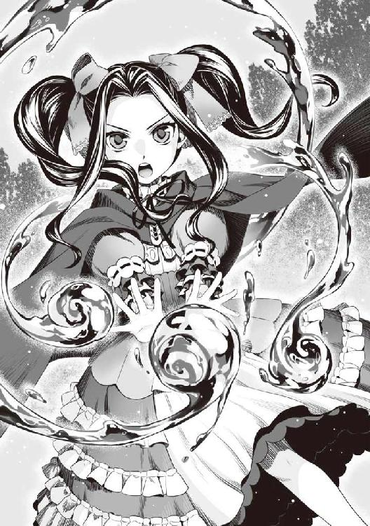
「エアストシールド」
「あぐ！」
跳躍し、第二王女に飛び掛かる軌道の間に盾を呼び出す。
「まだだ！」
その隙に残った盗賊が一番弱そうな第二王女に向けて駆け出す。
「セカンドシールド、チェンジシールド」
二つ目の盾を呼び出し、行動を阻害、ついでにチェンジシールドで変化させた盾にぶつける。
今回はビーニードルシールドだ。毒系統では持続効果で殺しかねない。麻痺の方で抑える。
「うぐ、がは......」
二つ目の盾にぶつかった奴は麻痺して痙攣している。
「ま、だだ」
這うように第二王女に近づく不意打ち盗賊。
「いや、終わりだ」
「あ......」
その盗賊の上にフィーロの大きな影。盗賊も気付いたのだろう。何か泣いている。
多分、走馬灯とか、諦めの句とか心に描いているのだろう。
「メルちゃんは助ける！」
ドッスンとフィーロが圧しかかるのだった。
「陽も沈みかけているから丁度良い。お前等のアジトを教えろ」
全員、縛り上げてから尋ねる。
「俺達が話すと──」
「フィーロ」
「こちらです！」
「お、おい！ どうしたんだよ。なんでばらすんだ！」
盗賊内でも事情に疎い奴は居るんだな。
盗賊の中で前回遭遇した奴は必死の形相で説得を始める。
「素直に応じないとあの鳥のエサにされるぞ！」
「な、冗談だろ？」
「あいつが冗談を言うと思うのか？」
盗賊の一人が俺を見て言う。
「アイツは何者だよ。なんか変な魔法を使ってたけど」
「わからないのか!? 盾だよ！」
「い!?」
盗賊の連中、やっと相手がわかったのか全員顔が青くなった。
「あの人食い鳥を連れた悪魔!?」
「そうだ！ あの鳥は人間を頭から食うんだぞ！ あんなのけしかけられたらおしまいだ！」
「命あっての物種だろ！ 全財産と大将を捧げれば俺達は助かるんだ！」
噂が噂を呼んで俺の悪名はうなぎ登りみたいだなー......。
ラフタリアが嘆かわしいというかのように額に手を当てている。
「嘘を吐いたら──」
「わかっている！ だから命だけは助けてくれ！」
言い切る前に盗賊はアジトへと案内する。もちろん、圧倒的戦闘力で俺達はアジトを占拠した。
その日は占拠した盗賊のアジトを宿代わりに一泊し、盗賊達が溜め込んだ物資で豪遊した。
主に食べ物の類だ。ここ最近は逃亡生活もあって食事は魔物の肉など、貧相だったからな。
アジトに入った当初こそ怯えていた第二王女だが、しばらくしたら慣れたようだ。アジト内にあった金目の物は、主に金銭だけを徴収し、他は処分に困ったので一ヶ所にかき集めて焼き払う。
下手に捨てて盗賊が回収したら目も当てられないからな。
縛り上げた盗賊共が半笑いで絶望していたのは笑えたが。
「そういえば、第二王女、お前は魔法が使えるんだな」
「うん。護身用にって覚えたの」
「どれくらい使えるんだ？」
今後の事を考えて第二王女が戦えるのならパーティーに入れておいた方が良いだろう。
「ついでにＬｖは？」
「えっと、Ｌｖは18......中級の水の魔法までなら殆ど使える」
思いのほか低い。王女だからもう少し高いかと思っていた。
しかし中級魔法か。
「水が得意なのか」
「うん」
髪が青いからな。その辺りが関係しているのかも。
「あと、土の魔法が少し」
「へー......」
意外とレパートリーが広いな。
「そういやお前の姉は風の魔法を使っていたな」
思い出したくもない。決闘中に背後から飛んできた風の魔法のことなど。
む、考えていたらイライラしてきた。この思考は止めておこう。
「姉上？ 姉上は火が得意で風が少し」
まあ、髪の色からしてそんな感じだよな。
「母上は火と水が得意なの」
「ふうん。まあ良いや。一応パーティーの申請を送るから入っておけ」
「うん」
別に頼りにするつもりはない。だけど、いざという時の保険だ。戦えるのなら、いないよりはマシだろう。できれば第二王女を頼りにすることはない方向で行きたい。
「ねえ。何で盾の勇者様は父上をそんなに怒らせたの？」
「そういえば話していなかったな。お前の姉が俺を嵌めたことが原因なんだが──」
その日の晩、俺は今までクズとビッチから受けた苦難をこれでもかと第二王女に教え込んだ。
隣でなぜか紙芝居を聞くような顔つきでフィーロが俺の話を聞いていたが、概ね間違ったことは話していない。
嘘も偽りもない、真実だけを話したつもりだ。
若干俺の心情や恨み辛みも混じったが、それを含めての教育と思えばいい。
「父上と姉上ったら酷い！ そんなんじゃ盾の勇者様が酷いことを言っても文句なんて言えないじゃない！」
「そうだろう、そうだろう」
「母上は盾の勇者様はできる限り大切にしろってずっと言ってたのに」
「は？」
何を言っているんだ？ この国の宗教は盾を悪魔としているのだろう？ 女王は違うのか？
「どうしたの？ 盾の勇者様？」
「いや、お前の母親って俺をどう思っているんだろうとな」
「うーん......わかんない。でも他の勇者と同じに扱いなさいって父上に手紙を出してた」
第二王女の話だけではいまいちよくわからないが、どうも女王は俺の事も気に掛けていたみたいだな。まあ、庇いきれなかったのだから、クズと同罪だけど。
「ごしゅじんさま、フィーロが生まれる前には色々あったんだね」
「そうだな」
「へ？」
第二王女の奴、何か呆気に取られた表情をしている。
「えっとフィーロちゃんって何歳？」
「一ヶ月と三週間だな」
「ええ!?」
ま、驚くよな。魔物であっても急成長だろうし。
「フィーロちゃん早熟なんだね」
「えへへー......褒められちゃった」
「褒めてるのか？」
「じゃあわたしの方がお姉ちゃんなんだ」
「まあ、年齢ならな。そこのラフタリアはお前と同じくらいだぞ」
「ラフタリアお姉ちゃんはなぁ......」
フィーロが若干ガッカリした表情でラフタリアを見ている。その視線が嫌なのかラフタリアは微妙な顔だ。フィーロは突飛な事しか言わないから気持ちはわかる。
「な、なんですか？」
「亜人だし......同い年でも年上って感じ」
メルティがフィーロの言葉を繋げて感想を述べる。なんかラフタリアが可哀想に見えてきた。
「うう......なんか負けてないのに負けたような気分にさせられました」
「ま、これでラフタリアが年齢相応の外見をしていたら俺は変態のレッテルを貼られていそうだけどな」
ロリコンというレッテルをな。フィーロと第二王女は両方とも子供だからな。これでラフタリアが子供だと幼女ばかりを侍らせていることになってしまう。
「そういうことだから良いんじゃないか、ラフタリアは、今のままで良いんだよ」
「ナオフミ様......」
三人もロリがいたらロリハーレムとか言われそうだ。あの勇者共が何て俺を糾弾することか。
「とにかく、今日はゆっくりここで休んで、国境を越えるぞ」
「「おー！」」
「はい！」
「うわぁ......」
北東の国境沿いにある関所付近を見渡して俺は思わず呟いた。
なぜ呟いたかというと、国境沿いに凄い数の騎士や兵士が待ち構えているからだ。
これは全軍集まっているんじゃないか？ もしも他の国が攻めてきたらどうするんだ、コイツ等。
いや、さすがに全軍ってことはないだろうが、それでも多い。
「盾の悪魔は確実にシルトヴェルトへ逃亡を図るはずだ！ 貴様等、絶対に逃がすんじゃないぞ！」
「はい！」
なんともまあ......騒がしいことで。
アリが通る隙間もないってくらい関所は厳重な警備が施されている。俺だけなら正面突破することができるかもしれないが、今はラフタリアや第二王女がいる。無理があるだろう。
俺が正面から突破し、他の奴等が先に行くという手も考えたが......怖いのは他の勇者がいることだよな。
正面から、しかもあれだけの数を相手に時間を稼いで逃げ切れるかというとかなり怪しい。
しかし、俺がシルトヴェルトへ行くというのがどうしてこうも察知されているんだ？
まあ、奴等にとって都合の悪い国なのだろうとは思うが......どちらにしても想像以上だ。
「どうするかな......関所を通らず、道なき道を進んで越えるか」
「無理......」
第二王女の奴、ポツリと呟く。
「何が無理なんだ？」
「緊急配備が掛かってるみたい。国境を越えたら警報が鳴り響いてあそこの人達が駆けつけてくる」
「それは厳しいな......」
赤外線の警報装置のようなものが頭に浮かぶ。たぶん、そんな感じのものが国境沿いに設置してあるのだろう。あれだけの数に山狩りされれば見つかるのも時間の問題となる。
「フィーロの足なら逃げ切れるんじゃないのか？」
「先回りされちゃう。警報線はずっと前にあるから見つかったら逃げ切れない」
「うむ......妙に詳しいな」
「母上が緊急時には覚えておきなさいって......維持がとても大変なのだけど、緊急配備だから多分、惜しまない」
「そりゃあ念入りなことで」
殺意が湧いてくるな。どうやっても俺を逃がさないつもりみたいだ。
「とすれば、どこか別の国を経由してシルトヴェルトへ逃げるのが妥当か」
一番近い国境がここだったのだが、手段は選んでいられない。
という所で荷車に物を満載している村人と鉢合わせしてしまった。
変装しているから大丈夫だろう。俺と第二王女は馬車に隠れているし。
「あ......」
なんか謎の沈黙が村人とラフタリアの間で続いた。
「盾の勇者様」
ばれた!? どうやって逃げ切る？
「警戒しないでください。大丈夫です。勇者様に貰った植物の種のお陰でわが国は持ち直しました。あの節はありがとうございました。私達は国の兵士に通報したりしませんから」
よくよく見たら村人じゃない。隣国の奴だ。しかも行商中だったっぽく、古着を出す。
「お付きの方はもう少し、泥臭い感じにすると良いと思いますよ。美人のラクーン種の亜人というのでばれます」
さすがにラフタリアはラクーン種という亜人の中でも顔が良い方らしいからな。むしろ行商時は接客させていたし、有名人になっていたのか。
そもそも俺はラフタリアを買った時、奴隷商にこう言われた。
ラクーン種は人間に人気がない種族、と。それにもかかわらず顔の良いラクーン種というとラフタリアのことだとすぐにバレてしまう。知っている人からしたら一目でわかるということだ。
ラフタリアを置いていくわけにはいかないから、偽装手段を変えないといけないな。
「逃げ回るにはその馬車は目立って危険かもしれません。この荷車をお譲りしますので乗り換えてください」
「感謝する。やはり金属製の馬車だと目立って危険だ。乗り捨てて行くしかあるまい」
「グエエ!?」
変身中のフィーロが奇妙な声を出しブンブンと首を振る。
「グエ！ グエ！」
「しょうがないだろ！ お前は見つかって捕まりたいのか？ そうなると第二王女は殺されるぞ」
「グ......」
フィーロの奴、第二王女の命の危険に渋々、黙り込む。
あんなに大事にしていたのに......やはり友達の方が大事だよな。
「偉いぞ、フィーロ。お前は物と友達......人として大切な方を選んだんだ」
そう言って優しく撫でる。意味を理解していなくとも、フィーロの選択は決して間違っていない。
「グエ？」
「事件が解決したら絶対に取り戻してやるから」
「グエ！」
絶対だよ、と言ってるのがわかるな。
「馬車はお預かりします」
「すまない」
「......はい。後で近くの村に預けておきます」
「この礼はいずれする」
「既にいただいていますよ」
「そうか。よし、第二王女。この際だ、別の服に着替えろ。じゃないと一発でバレる」
「う......うん」
俺は彼等に礼として銀貨を何枚か渡した。
あとはフィーロの食料が問題だ。逃亡生活の所為で腹が減ったと騒ぐ。
そして何より移動速度が落ちるのが一番怖い。現状俺達の長所はフィーロによる足の速さと偽装能力にある。道行く賞金稼ぎや冒険者を相手にしていたら限がないからな。
第二王女は安物の服を着るのに若干抵抗があるのだろうが、事態が事態なので素直に頷いた。
村人が持っていた子供服で、随分と年季の入った品だ。
少々ボロイこともあって、第二王女は外見こそ今まで通りだが、村人と言えば納得される程度にはみすぼらしい姿になったと思う。
ただ、普段から良い物を食っている所為か発育が良いことと、珍しい青髪が高貴な生まれを自己主張している。遠目ならごまかせるが、近くで確認されればバレてしまうだろう。かといって置いていくわけにもいかない。
なかなかうまく事が運んでくれないな。
「他の雑貨は袋にでも詰めておけ」
持ち運びできそうなやつだけを軽くまとめて布をかぶせて隠す。かさばって持っていけない物は村人達に渡しておいた。順当に行けたとしても二週間以上は掛かる道のりだ。
「あ、行商人ですか？ ちょっと買い出しに来たのですけど......」
やば！ 兵士が隣国の奴へと近づいてくる。
「......盾の勇者様？」
く、兵士にばれた！ フィーロに命令して逃げ──
「私ですよ。ほら、波で勇者様と協力した」
よく見ると、兵士はあの時の志願兵だった。
そういえば、頼まれて城にまで戻ったが、クズと決別して後のフォローができなかった。
少し心配していたのだが、やはり俺達に協力したからこんな地方に飛ばされたか。
あの時は盾の悪魔という話を知らなかったからな。考えてみれば彼等からしてみれば相当な決意が必要だったはず。出世の道は確実に閉ざされただろう。
「......左遷されてしまったか？」
「いえ、お咎めはないですよ」
「そうか、だが国境警備は左遷ではないのか？」
「それが違うようなのですよ。騎士団の大半がここに集結しています」
俺のためだけに!?
おいおい。幾らなんでもあのクズ、どんだけ俺にシルトヴェルトへ行って欲しくないんだよ。
本格的に奴等の目的がわからなくなってきた。
もしかすると俺の知らない何かがシルトヴェルトという国に隠されているのかもしれない。
これは行くべきだ。敵が嫌がること＝こちらの最善手である可能性が高い。
理由はわからないが、行って確かめるだけでも実りはあるはず。
「とにかく、ここは危険です。一刻も早くお逃げください」
「感謝する」
「騎士団だけではありません......他の勇者様方もこちらに来ているようなので、鉢合わせをすると盾の勇者様が困るかと」
......確かに。あいつ等の実力は俺よりも遥かに上と見て良いだろう。
グラスと戦った時は直前の戦闘で消耗していたし、突然現れたグラスから突然必殺技を撃たれて、実力を出せていなかった。
なにより奴等の仲間はクラスアップしていて、こちらはしていない。
これでは勝てると考える方が愚かだ。下手に遭遇したら殺されるかもしれないな。
「とりあえず、手早く逃げるとしよう」
「疑惑が晴れることを祈っております」
何食わぬ顔で隣国の村人や志願兵と別れ、俺達は迂回するために南へ戻ろうとした。
十八話 説得
それから少しだけ進んだところだった。
元康一行と樹一行が道行く馬車や荷車をただ見ている。やはり志願兵の話通り来ているようだ。
......潜伏した荷車から僅かに盗み見る。それぞれの魔法が使える奴が何やら詠唱している。
「いました！ そこの荷車です！」
俺が不審に思い、嫌な予感がした直後の事だ。
元康と樹が俺達の荷車に向けて駆け寄ってくる。
く!? どうしてばれた？
いや、おそらくはあの魔法を使っていた連中だろう。解析か何か、そんな魔法だと推測する。
俺は被せていた布を払いのけて荷車から飛び出す。フィーロも事態を察知してフィロリアル・クイーンの姿に戻った。
「やはりいたか！」
近くにいたのだろう。錬一行まで駆けつけてきた。
くそ......幾らなんでも状況が最悪だ。
「見つけましたよ！ メルティ王女を解放しなさい！」
樹の奴、我こそは正義の使者であるとでも言うかのような顔で俺を指差していた。
「解放もなにも、別に拘束していないぞ」
「白々しい、証拠はあがっているんだぞ！ お前に正義はない」
「正義......ねぇ？」
波では基本的に人命は騎士団任せの連中が正義と言い放つか。
ホント、自らの正義感を満たすことしか考えていない奴等だ。
待てよ......よくよく考えてみれば、コイツ等に事情を話すという手もある。抜けてこそいるが錬は疫病の村を心配していたし、樹はアレで正義感だけは無駄にある。これを利用できないだろうか。
まあ、どうせ俺の言うことなんて最初から信じるつもりなんてないだろうがな。
それでも一応、説明してみる価値はある。
要するにコイツ等の正義感を別の方向に向けられれば良いんだ。
巨悪の陰謀を阻止する。
ゲーム好きが憧れるシチュエーションの一つだ。
信用させることができれば......あるいは国に対する疑心さえ抱かせることができれば布石になるかもしれない。
「お前等の言っていることは本当に正しいと、正義だと言えるのか？」
「どういうことだ？」
「第二王女はこの通り、怪我一つなく生きている」
どこから攻撃が飛んできても守れる態勢を維持しつつ第二王女を勇者達に見せる。
心配そうに俺を見上げ、第二王女は大きく頷いた。
「剣の勇者様、槍の勇者様、弓の勇者様。盾の勇者様は無実です。むしろわたしの命を守ってくれています」
第二王女は普段のような子供っぽい言葉使いではなく、王女然とした口調で話す。
その言葉に三人から動揺の表情が読み取れる。
自分のしていることが実は悪の片棒を担いでいる。そんな事になったら、正義感の塊であるコイツ等にとってはとてつもない屈辱だろう。
「どうか信じてください。此度の騒動には大きな陰謀が隠されています」
「しかし、メルティ王女はその男に連れ回されているではありませんか」
「それこそ、わたしの命を守ってもらうために、わたしからお願いしています」
第二王女本人の口から説明されて樹はたじろく。
「不自然ではありませんか。盾の勇者様がわたしを誘拐することに何の得があるのですか？」
「そ、それは......」
理由でも探しているのか？ 目が泳いでいるぞ。
「だが、コイツは──」
「勇者様方はメルロマルク国が盾の勇者様だけおかしな扱いをしていると考えませんでしたか？」
「確かに......」
「母上が仰っていました。今は人と人とが手を取り合い、一致団結して災いを退ける時だと......勇者様方にこのような不必要な時間を浪費させる余裕はこの世界にはないのです。どうか、武器をお収めください」
勇者三人は本来の目的に気付いたのか、構えた武器の握りを弱める。
少しくらい自覚はあるのだろう。自分達が前回の戦いで負けたことに。
第二王女の言う通り、俺達は早く自身を鍛え、武器を強くしなければいけない。勇者という使命を全うするつもりなら、レベルも武器も強化できないこの状況は、それこそ無駄この上ない。
「わかったか？ これは陰謀だ。これから俺の知る限りの真相を話す。戦うか否かはそれからでも良いだろう？」
俺がそう言った直後、ビッチが前に出て言い放った。
「盾の悪魔の言葉を聞いてはなりません！」
何を言うつもりだ。妹を心配している素振りでも見せてポイント稼ぎでもするのか？
「今回の事件が明るみに出た時に説明されたではありませんか！ 盾の悪魔は洗脳の盾を持っていると！」
「姉上!?」
第二王女が驚愕の表情で姉であるビッチを見た。
コイツ......見苦しいにもほどがあるぞ。
何が洗脳の盾だ。そんなものがあったら誰も苦労してないんだよ。人が苦労して得たものを洗脳で片付けるとか便利な言葉だな。というか洗脳とか宗教の常套句だよな。ふざけやがって。
「洗脳の盾、という邪悪な力を持った盾の話か。眉唾だったんだが......」
「いつ覚醒したかはわかりませんが、教会の推測では一月ほど前からだそうです」
行商が軌道に乗り始めた頃だ。あの頃は病人に薬などを優先的に売っていたからな。その辺りから神鳥の聖人という噂が広まり始めた。
なるほど、時期的に符合はするな。色々と教会側に都合が良いように捏造されているが。
「状況が証明しているじゃないですか。行く先々で情報が交錯していて、まるで尚文さんに力を貸しているような行動をしているじゃないですか。一般人の彼等が犯罪者相手にこんな一致団結したりするものですか？」
「国中の奴等がおかしい。盾の勇者がそんな事をするはずがないなんて言うし、元気なお婆さんまで盾の勇者を崇拝するかの如く絶賛してたもんな......」
あのババアか......言葉だけで特定できるな。
それにしてもいったい何をほざいているんだ？ コイツ等。
ここ最近多くの人に助けてもらっているのは事実だ。しかしそれは全部お前等が蒔いた種が巡り巡ってきているだけだろうよ。
自分の知らないこと＝敵の策略ってどうよ。コイツ等の頭は本当に何でできているんだ。
「おそらく、近くに居て話をするだけで自らの思うように相手を洗脳する力を持っています。現在、国の教会関係者が力を合わせて洗脳を解く準備を進めております」
「んな力あるかボケ！」
俺の突っ込みに誰も反応しない。
いや、ラフタリアをはじめフィーロも第二王女も呆気に取られている。
つまり、国中にお触れを出したが情報が集まらず、しかも俺に対する高い評価に奴等も首を傾げた。その理由として納得できる証言としてビッチ、もしくは三勇教が提唱した「洗脳の盾を俺が所持している」という話をした、というところか。
凄い捏造。無理がある。
「盾の勇者様はそんな力があるの？」
第二王女が心配そうに俺を見上げる。
「お前にはあるように見えるのか？」
「うーん......ないと思う」
「そこは即答して欲しかった」
そんな便利な盾があったらこんなに苦労してないだろ。それこそ村人から兵士、騎士団、魔術師まで洗脳して国取りでもしてるぞ。要するにこんな状況になる前に手を打っているはずだ。
つまり指名手配されて追われている時点で、洗脳の盾の信憑性自体が怪しいってことだ。
こんな簡単な事もクソ勇者共はわからないのか。
「ラフタリアちゃんやフィーロちゃんもアイツの力で洗脳されているってことだよな！」
「違います！ 私達は洗脳なんてされていません！」
「俺達が君達を救い出してあげるからね」
「フィーロはごしゅじんさまといたくているんだもん！」
元康の奴、まだラフタリアとフィーロを諦めていなかったのか！ どんだけ女が好きなんだよ。
「どうでも良いから話を聞け！ 事と次第によっては第二王女はお前達に渡してもいい」
「え!?」
なんか、第二王女が意外そうな声を出しやがる。
「......話を聞こうか」
錬が率先して尋ねてきた。一触即発の状況だ。できる限り言葉を間違えないようにしたい。
「まず前提として洗脳の力なんてものはない。そこから──」
「信じられませんね！」
「うるせえ！ お前には言ってないんだよ、副将軍！」
俺が説明する前に樹が遮るから怒鳴って黙らせる。
一方から与えられる情報だけで善悪を決める偽善者に用はないんだ。
「とにかく、これは陰謀だ。王かそこの女か教会の連中が、第二王女を暗殺して俺のしわざに見せかけようとした」
「......話はわかった。じゃあお前達の身柄を拘束して俺達に同行してもらおう。その代わりに絶対に危害を加えないと約束する。調べる時間をくれ」
「信じるのか!? このフィーロちゃんを洗脳した悪人の話を!?」
「そうですよ！ 僕は信じられません！」
「剣の勇者様！ 悪魔の言葉に耳を傾けてはいけません！」
やっと錬が信じようとしてくれているのに、ビッチ達が口を挟んできた。
「戦わずに済むのなら、それが良いだろう。真偽は後で確かめる」
錬の奴、さすがはクールを実践しているだけあって、冷静に状況を分析している。
話が......通じると見て良いのか？
「......ダメ」
第二王女がギュッと俺の手を握って小さく懇願する。その手は震えていて酷く青い顔だ。
「多分......殺される」
その言葉で、俺は状況を確認する。おそらく、第二王女は俺達とは別の扱いを受ける。
大方洗脳解除の魔法を掛けるからと国の魔法使い辺りに第二王女を預ける。するとどうだろう。解除しようとしたところで凶悪な呪いが発動して第二王女は絶命してしまった。
そんなシナリオが浮かんでくる。
だとすると俺を信じかけている錬は間違いなく俺が犯人だと確信するだろう。
俺に罪を擦り付けようとしているところから、ビッチは今回の事件の片棒を担いでいる可能性が非常に高い。実の妹すら手に掛けるとか......。
「助けて......」
それは掠れたように小さな懇願だった。やっと無実を証明できそうだというのに。
はぁ......。
「約束しただろう？」
「え？」
あの日、強姦の冤罪に陥れられた日だ。俺を信じる者は誰もいなかった。
そして今、第二王女は生か死の瀬戸際に立っている。
洗脳......便利な言葉で第二王女を殺す名目まで持っている集団に狙われている。
まったく......わかりきった願いをされたものだ。俺だってそれくらい想像するさ。
第二王女の死は俺達の敗北を意味する。信用できない他人に誰が任せるか。
「悪いな。どうもお前等を信じられない。ここで第二王女を渡しても、きっとお前等には守りきれない。俺はコイツと約束しているんだ。絶対に守るってな」
第二王女をフィーロの背中に乗せ、ラフタリアにも乗るように指示する。
「フィーロ、イヤだろうが荷車を放棄して、コイツ等から逃げろ！」
「はーい！」
「じゃあな」
臨戦態勢を取っていたフィーロは俺が最後に乗ったのを確認すると跳躍して走りだす。
「あ、待て──」
「はいくいっくー！」
「させるか！」
「な──」
元康がフィーロの足に向けて輪っかを投げつける。
フィーロはそれに足を引っ掛けて転んでしまった。
「うわっ！」
「キャ！」
俺とラフタリアとメルティは前のめりに転倒してしまう。
「いてて......」
咄嗟に受け身を取って飛んできた二人を受け止めた。
フィーロの『はいくいっく』を予期して妨害するだななんて元康の野郎......厄介な事をしやがる。
「くぬ......！ えい！ 取れない！ 取れないよごしゅじんさま！」
フィーロは元康が投げて足に巻きついた輪っかを取ろうと必死にもがく、だけど一向に外れる気配がない。
輪っかは黒い金属で作られたもので、何か付与されているのだろう。
でなければフィーロの馬鹿力で外せないはずがない。
「逃げられると思うなよ。さあ、メルティ王女を渡せ」
「誰が渡すか！」
お前の隣でニヤニヤしているビッチがこの事件の主犯格なのは明白だ。
第二王女をむざむざ殺されたら俺の無実が証明できないだろうが！
「フィーロ！」
「う、うん！ あ......」
立ちあがろうとしたフィーロが、なぜか力が抜けたかのように体勢を崩して、再度足をもつれさせる。
「あれ？ ち、力が入らない......う、うう......」
フィーロが淡く輝き、なぜか人型の姿に変身してしまう。
「何やってんだ！」
「フィーロじゃない。勝手にこの姿になったの！」
なに？ 考えられるのは元康がフィーロに無理やり着けさせた足輪だろうが......。
「ふふん。フィーロちゃんがずっと天使の姿になっていられるためのアイテムを国の錬金術師が作ってくれたんだ。その足輪がある限り、俺に暴力が振るえると思わないことだよ」
「むー！ 放せ！」
元康は必死に立ちあがろうとするフィーロを無理やり起こして捕まえ、俺達に見せつける。
「錬金術師達は良い仕事をしてくれた。フィーロちゃんの怪力まで封じてくれている」
く......フィーロの足の速さで逃げられるかと思ったが、こんな事態は想定外だ。
フィーロを人化させ、力を抑える効果のある力が備わっているだって？
なんだそのピンポイントな道具は！ そんなにまでフィーロが欲しかったのか......そういえば天使萌えとか熱弁していた。だからフィーロを得るための策略を巡らしていたと考えて間違いないだろう。それがこんな所で意味を成すなんてどんな状況だよ！
フィーロに付けられた足輪をどうにかしないと逃げ切ることはできそうにない。
「フィーロちゃん！」
「メルちゃん！」
フィーロと第二王女がそれぞれ呼び合って手を伸ばす。しかしその手が繋がることはない。
「乱暴なお姫様は嫌いじゃないぜ。大丈夫、君も来ればフィーロちゃんと一緒に居られるよ」
「むー！」
余裕を見せやがって。元康、お前に捕まったらフィーロも第二王女も一生の終わりだと理解しろ！
「なあ......」
「えっと」
「何をしているのです、剣と弓の勇者様方！ 盾の勇者を早く捕えましょう！」
「だが......」
錬と樹が状況に対応しきれず足を止めている。これで奴等が攻撃してきたら終わりだった。
まあ、なんだかんだで正義感しかない連中だ。逃げようとした俺達を追撃する前に元康に動きを抑えられ、しかも人質にしているようにしか見えない状況で便乗など、咄嗟にできはしない。ということなんだろうな。何が幸いするかわからん。
どうする？ フィーロを人質に取られては下手に逃げるわけにはいかない。
元康のところにはビッチがいる。何をされるかわかったもんじゃない。
「待ってて！ 今すぐ助けるからねフィーロちゃん！」
「あ、馬鹿！」
『力の根源たるわたしが命ずる。理を今一度読み解き、彼の者を水の刃の如き一撃で切断せよ！』
「ツヴァイト・アクアスラッシュ！」
第二王女が魔法を詠唱しながら走り至近距離で元康に向かって放つ。
「おっと！」
元康が横っ跳びで第二王女の放ったアクアスラッシュを避ける。
「むー！ 放せ！」
が、その時、フィーロが暴れた所為で羽交い絞めにしていた元康の拘束が解けた。
よし！ と思ったのもつかの間、逃げられたフィーロの代わりというかのように、元康は第二王女の手首を掴んで後ろ手に回す。そのまま彼女はビッチへ手渡された。
「マイン！ 大切な妹だろ、絶対に守るんだぞ！」
「メルちゃん！」
「フィーロちゃん！ 放して！ 姉上！」
フィーロが第二王女に手を伸ばすけれど、それは叶わず、元康がまたもフィーロを捕まえようとしたので俺はフィーロの手を掴んで引き寄せた。
「放しませんよメルティ、貴方は盾の悪魔に操られているだけなのです。早く洗脳を解いてあげますからね」
今だ！
「シールドプリズン！」
咄嗟に俺は憤怒の盾Ⅱに変化させて元康に向けて放つ。
「な──」
まだだ、怒りを抑えろ......。
「チェンジシールド（攻）！」
攻撃能力の高いビーニードルシールドを展開する。
「お前との因縁もこれまでだ！ 喰らえ、アイアンメイデン！」
全てのＳＰを犠牲にして元康へ必殺のスキルを放つ。本来はビッチな王女に向かって撃ちたいスキルだったがそうも言ってられない。これで元康を仕留められるのなら、悪くはない。瀕死にさせれば御の字程度かもしれないがな。
「させるか！ 流星剣！」
「やはり貴方の方が悪でしたか！ 流星弓！」
な──錬と樹が出現するアイアンメイデンに向かって各々、強力な必殺スキルを放つ。
バキンと音を立て、アイアンメイデンにヒビが入り、閉まる速度が遅くなる。
「みんな！ 今のうちに破壊するんだ！」
「はい！ レン様」
「了解しました！ イツキ様！」
「モトヤス様！ 今お助けします！」
錬と樹、そして元康の仲間がそれぞれの魔法と攻撃をアイアンメイデンに放ち、アイアンメイデンは甲高い音と共に......粉々に吹き飛んでしまった。
ぐ......アイアンメイデンの反動でＳＰが尽きた。
「さ、さんきゅ、みんな！」
チェンジシールド（攻）のダメージを受けていた元康が助けられて笑みを浮かべる。
「俺達を忘れてもらっては困る」
「ええ。さあ、第二王女は助けました。国中の皆さんに掛けられている洗脳を早く解いてください」
錬、樹が元康に加勢してしまった。しかもビッチに第二王女を人質にされてしまった。
早急に助けないと第二王女の命が危ない。
そういえば、憤怒の盾Ⅱにするとフィーロが暴走するはずだ。
しかし、フィーロ自身に何も変化がない。
ん？ ゆらっと俺の視界に憤怒の盾Ⅱから赤い何かがフィーロに向かっていき、それが弾かれる。おそらく、フィーロへの加護や何かすらも切断する効果があるのだろう。
本人が援護魔法によって足輪を破壊できないようにする処置が裏目に出たな。
暴走したフィーロは制御できない。その場合は憤怒の盾Ⅱで戦うのは難しい。
「ラフタリア！ フィーロの足輪はとれそうか？」
万が一、取れたら即座に憤怒の盾Ⅱから別の盾に変える予定だ。
「今やっているところですが、難しいです」
ガツンガツンとラフタリアはフィーロの足輪に剣を突きたてるが、上手くいく気配がない。
どんだけ強固に作った足輪なんだよ。その労力を他に割けっての。
どうしたものか......ＳＰが無い現在、スキルは使えない。フィーロも弱体化してしまっている。
頼みの綱はラフタリアだけど、ラフタリアの剣と魔法でこの状況をひっくりかえせる自信はない。
「ごしゅじんさま！」
「どうした？」
「フィーロ、もう捕まらないよ！」
「さっきむざむざ捕まっていた奴が何を言っているんだ」
「大丈夫だもん」
と、フィーロが羽から取り出したのは武器屋の親父が俺に馬車を引かせるために持たせたグローブだった。
そうか、考えてみれば怪力が出せる便利な道具がこっちにはある。
フィーロはグローブを手に嵌めて腕を交差させる。意識を集中させているのがわかった。
「今度はフィーロがメルちゃんを助ける番！」
「なんだそのグローブ？ それで俺を止められると思っているのか？ 可愛いなぁフィーロちゃんは、そんな手袋着けた程度で俺に敵うはずもない」
「負けないもん！」
「あ、フィーロ！」
俺の制止を振り切ってフィーロが元康に殴りかかった。
「ぐふ......」
元康はフィーロを捕まえようと無造作に手を伸ばしていたので、アッサリとフィーロの拳が元康の腹にめり込んだ。
元康は前のめりに腹を押さえてうずくまる。
「こ、この程度、なんともない......さ」
「えい！ メルちゃんを返せ！ えい！」
「ぐ......う......き、効かない！」
元康が立ちあがって距離を取った。
「フィーロ、落ち着いて戻ってこい！」
「うん！」
何度か元康を相手に実験したフィーロが戻ってくる。
「あいつ等相手に......戦えそうか？」
「まかせて！」
「じゃあフィーロは元康を、俺とラフタリアは他の二人の勇者と取り巻きを相手にする！ 隙があったら第二王女を奪還する」
元康はなんだかんだ言ってフェミニストだ。フィーロに乱暴な真似をすることはできまい。
「ナオフミ様」
「なんだ？」
「提案なのですが、ナオフミ様に敵の意識を集中させることは......できますか？」
「何かあるのか？」
「一応......」
ふむ......ラフタリアが何をしようとしているのか......考える。
なるほど、ラフタリアは姿を隠して相手の後ろを取るのが得意だ。
それを狙っているのだろう。
「わかった。できる限りしてみよう。じゃあ行くぞ！」
「わかったわ」
「はーい！」
「頑張ります！」
だが、三人もの勇者を倒すことは不可能だろう。
俺の目的はそれじゃない。
ここから逃げ出す手段がまだ残っているんだ。
「ラフタリア、少し......離れていろよ」
「はい」
「いくぞ！」
「たぁあああああああああああああああああああ！」
先陣はフィーロが切った。俺の指示通りにフィーロは元康に向けて駆け出す。
だが、元康もフィーロが脅威だと理解して槍を構える。もちろん、本気で戦ったりしないだろうがな。
「さあ、メルティ。少しだけ眠っていてもらおうかしら？」
ビッチが薬品を取り出して第二王女に嗅がせようとしている。
日本のアニメやドラマを見ている異世界から来た勇者からしたら眠らせる薬と思うだろうが。
ビッチの性格や立場を知る俺からしたら死へと誘う薬にしか見えない。
「フィーロちゃん！ 助けて！」
「メルちゃん！」
フィーロがこれでもかとグローブに魔力を込めるのを肌で感じていた。
「はいくいっく！」
一瞬ぶれたかと思うとフィーロは元康の前に立ち、拳を振るう。いや、親父がくれたグローブからフィーロの魔力が溢れだして青白い爪のような形状になっている。
なんだあれ？ 魔力が硬質化している......のか？
「ぐ......なんだ！ 威力が向上した!? やめるんだ！ フィーロちゃん！」
防戦一方で悶える元康。パワーグローブの爪が元康に命中する。
元康をあれだけ抑え込むとは、どんだけ威力が向上しているんだ？
「てい！ えい！ どいて！」
フィーロはフィロリアル形態の方が強い。だけどあの爪で戦う姿はそれに勝るとも劣らない気概を感じる。
守るべき相手が居るからこそ、フィーロは足輪の所為で力が出なくても魔力でそれを補って戦っているんだ。
俺は元康の方にも意識を向けながら、錬と樹に意識を集中している。
既に目的は俺だけになっているからな。下手に攻撃しても効き目が低いのはわかっているのか、出てこない。
いや、錬はこの状況に首を傾げて、本気になることができず、状況を見守っている。
樹は俺の事を敵だと認定しているけれど、単体で攻撃してこようとしていない。元康への援護射撃をするかと思ったが、よく考えてみれば錬も樹も正義感がある。
一騎打ちをしている奴の邪魔をするというのは自分の正義に反する行いだと思っているのだろう。
俺がアイアンメイデンを使用しようとしたのを邪魔したのは死人が出るかもしれないから......とかだな。
この状況を利用しない手はないな。
ラフタリアに目線を向けてそれとなく俺にだけ意識を集中させるべく、じりじりと距離を取る。
逃げるのはまだ先だ。
だけど意識を集中させることに意味がある。
「この武器の使い方......わかってきた！」
フィーロが爪を前に構えて、交差させる。
「とるねーど......」
「しょうがない......ごめんねフィーロちゃん。ちょっと痛いだろうけど我慢してくれ！」
元康がフィーロに槍を向け、スキルを放つ構えを取った。
「乱れ突き！」
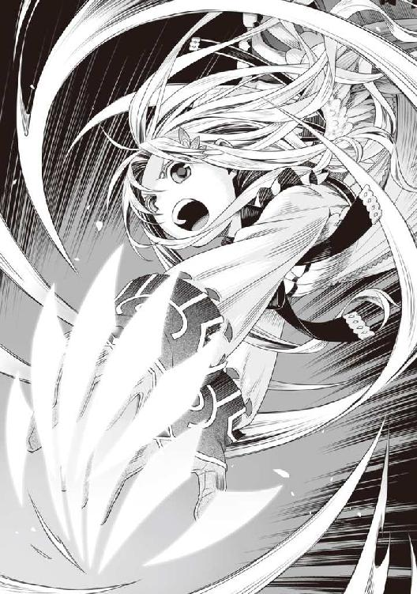
「くろー！」
フィーロが爪を構えたまま敵に向かって飛んでいった。途中でくるくると回転し始め、そのまま突撃する。
「な──」
フィーロの突撃は元康のスキルをくぐり抜け、元康を吹き飛ばしながらビッチに向かって進んでいく。
「いやぁあああ！」
抵抗する第二王女と薬を嗅がせようと必死のビッチ。そこへフィーロが突撃し、ビッチが我が身可愛さに第二王女を放した。
「メルちゃん！」
回転が収まり、フィーロはメルティの手を掴んでそのまま走り抜けた。
「く......」
ドサッと地に体を打ちつけた元康が立ちあがってフィーロと第二王女を見つめる。
「メルちゃんは離れてて、フィーロが槍の人を倒してから、ここから脱出しよ」
「うん！」
フィーロは再度元康に向けて爪を構えた。
これで元康とフィーロの一騎打ちから元康を援護するビッチとフィーロに協力する第二王女と、複数の戦いへと進んでいった。
そこで傍観していただけの俺達の戦いのゴングが鳴った。
「フィーロちゃん頑張って！ アル・ツヴァイト・アクアショット！」
「姉より優秀な妹はいらないのよ！ ツヴァイト・ヘルファイア！」
ビッチと第二王女が魔法の撃ち合いをしている。
ビッチ......何言っているんだ？ 継承権低いことを滅茶苦茶気にしているじゃないか。
よし、第二王女、俺はお前を支持するぞ。アイツは王の器じゃない。
「ツヴァイト・アースハンマー！」
「ツヴァイト・ファイアアロー！」
だが、奴等の連携は思いのほか悪く、攻撃はフィーロの方ではなく第二王女の方へと向かっている。
「何をしているんだ！」
第二王女に向かって飛んでいった魔法を錬が迎撃する。
「助けなきゃいけない王女を殺す気か！ たとえ洗脳されていたとしても、守るべき対象のＬｖを考えろ！」
そう、第二王女は錬や樹、元康にとっては守るべき対象なのだ。
ビッチの思う通りにここで抹殺など勇者がさせない。
これはチャンスだ。奴等の仲違いを誘うべきだ。
「ですが、第二王女様は既に盾の勇者に洗脳されております。手加減などできませんわ」
「にしても加減しなきゃ死んでしまうだろ。現にあの子は、本気で俺達に当てようとしていない！」
第二王女の放った魔法はあくまで牽制であって、フィーロと元康の間に入ろうとしていた者に避けられる範囲で飛ばしている。
逆にビッチとその取り巻きは第二王女を殺すために唱えているのだ。あからさまな態度だから錬には見抜かれたな。
「そこまでＬｖも高くない相手に、そんな魔法を当てたら死ぬかもしれないだろ！」
もしかしたら事前に第二王女のＬｖとかは判明しているのかもしれない。
「それは......そうですが」
ビッチが舌打ちし、目線を一度逸らして頷く。
「錬、樹、その女は第二王女に死んで欲しいんだ」
「なんだって!?」
「第二王女は継承権が一位なんだ。そしてその女は二位だ。後は......わかるな？」
「騙されてはいけません！ 剣の勇者様、弓の勇者様」
「何を焦ってるんだ？ 全て本当の事だぞ。なんなら自分の仲間に聞いてみろよ」
錬と樹は非常に動揺している。誰でもわかるくらいビッチが焦っているからな。俺が偉そうに言ったことも効いているかもしれない。まあ実際全て事実だし、少し調べればわかることだ。
「これが洗脳の力なんです！ 聞き入れてはいけません！」
苦しい言い訳だな。
「そうです。死ね！ 盾の勇者！」
樹の取り巻きである派手な鎧を着込んだ戦士が俺に斧を振りかぶる。
それを待っていた！
「だああああああああ！」
「うりゃああ！ 死ね！ 盾の悪魔！」
俺は鎧の攻撃を盾で受け止める。
「今よ、この隙にみんなで攻撃しなさい！」
「「「了解！」」」
「こら、勝手に攻撃するな！」
「そうです。気を付けないと危険です皆さん！」
錬と樹の制止を無視して、樹の取り巻きと錬の取り巻きが俺に向かって群がってきた。
仲間内での連携がまるでなっていない。
これはチャンス！ こいつ等、俺に反撃手段がないと思って舐めてるのか？
俺を中心に、セルフカースバーニングが作動し、周囲を焼き尽くす。
「「「ぐああああああああ！」」」
「「きゃああああああ！」」
「な、何！」
樹が絶句してこちらを見つめる。
錬は第二王女に飛ぶ必殺の魔法を迎撃していて、遅れて免れてしまった。
「ぐ......体が......」
鎧を含め、樹と錬の仲間が揃って立ちあがれずにいる。
「いつまでも俺が何もできないと思うなよ。盾にはこういう戦い方があるんだ」
「く......」
錬は剣を握りしめて呻く。それは樹とて同じだった。
回復魔法を仲間達に唱えているようだが、残念だったな。セルフカースバーニングは回復を遅延させる呪いが掛かる。
しかし、反撃の所為で錬達の敵意が上がった。これでは交渉は難しそうだ。
「ハンドレッドソード！」
「アローレイン！」
錬と樹は俺に向かってスキルを放った。
ハンドレッドソードと唱えた錬の上空に何本もの剣が出現し、俺に向かって降り注ぐ。同様に樹が弓を空高く引き絞って矢を放つ。すると矢が光の雨となって俺に飛んできた。
遠距離範囲攻撃か。
「ぐ......」
咄嗟に盾を上に構えて受け止める。
ぐ......かなり痛い。体の筋に響く攻撃だ。
「やはりそうですか」
「ああ、そのようだな。ゲームにはない仕様外の力だが、あれは」
「「近接カウンター攻撃！」」
く......見抜かれてしまった。
そう、万能に見えるセルフカースバーニングには、近接攻撃でしか発動しないという大きな弱点がある。これを見抜かれると憤怒の盾Ⅱの効果は半減したも同然だ。
手痛い反撃としてセルフカースバーニングが存在するからこそ、手を出しづらいものがあった。だが、発動しない手段があるのなら、それで攻めれば一方的に俺は負けてしまうかもしれない。
その手段がわかってしまえば、俺が更に不利になるのは道理だ。
いつまでも憤怒の盾Ⅱにしてなどいられない。
このままではジリ貧で、憤怒の盾Ⅱから別の盾に変えねばならなくなるだろう。
となれば、連中は時間切れまで......いや、いつまで憤怒の盾Ⅱでいられるかわからないのだから、その考えに行きつくか怪しい。
手の内を明かす必要はない。ハッタリも立派な戦略だ。
「どうした？ たとえお前等が攻撃してきたとしても、俺は耐えきれるぞ？」
「どうでしょうね？」
「ああ、全員で一斉攻撃をすればどうにかなるかもしれないし、近くには国の兵士も集まっている」
チッ！ やはりこの程度の挑発は効かないと思って良いな。
だがな......俺の目的はそれじゃない。
「僕の攻撃はどうやっても反撃されませんよ！ イーグルピアシングショット！」
樹の弓から放たれた矢はワシをかたどって俺の方に飛んでくる。
エネルギーで構築されたワシをじっと見据える。すると一本の矢が見えた。
それが一直線で、しかもかなりの速度で飛んでくる。
スキル名からして貫通を意味する攻撃の可能性が高い。俺もネットゲームを何作かやっているから弓系のスキルは馴染みがないわけじゃない。
ピアシングとはピアスの穴を空けるという意味がある。
転じて貫通性能の高い矢を放つスキルとして、この名前が付けられているのだとしたら、あの矢を受けるわけにはいかない。
となれば、この貫通攻撃を無効化するには射程外まで逃げるか矢掴みか何かで押さえるしかない。
できるか？ やらねば危険だ。
......意識を集中する。
俺は飛んでくる攻撃に神経を集中し、鳴くワシのエネルギーの頭を軽く撫でつつ、首筋を掴んで息の根を止める！
「な！ イーグルピアシングショットを手で掴んだ!?」
樹の奴、俺の対応が予想外だったかのような声を出す。
思いのほか、エネルギーで構成されたワシは強くなく、力を込めると四散して矢に戻る。
「もう止すんだ。錬、お前ならわかるんじゃないか？ この戦いはおかしいと」
「おかしいとは？」
「俺に対して妙に敵愾心のある連中が多く、洗脳の盾なんて怪しいものを吹聴する事件。勇者にそんな武器があるのなら、お前等にもあるんじゃないのか？」
「......」
そう、できる限り交渉し、立ち去ってもらう。
ビッチもさすがに実行する側の勇者が思い通りに動かなければどうしようもあるまい。
そう思った直後、ビッチが空高く照明弾のような魔法を放った。
「増援を呼びましたわ！ これで国の兵士が駆けつけてきます」
く......どこまでも包囲網を狭める気か。
「てい！ やあ！ とう！」
「ぐ......」
フィーロが元康に連撃をしかけている。その動きはまるで踊っているかのようだ。
全身を回転させて裏拳の要領で殴りつけるその動作、元康を完全に翻弄している。
意外と人型形態でも戦えるじゃないか。
錬達を説得できれば良かったが、もはやそれもできそうにないか？
と、思っているところで兵士達が駆けつけてくる。
「さあ！ 第二王女を誘拐した盾の勇者を抹殺しなさい！」
「「「おー！」」」
兵士共は遠くから弓を引き絞って俺に向かって矢を放つ。
「待て！ まだ話が──」
言い終わる前に矢が俺に向かって降り注いだ。しかも火矢や魔法も一緒に放たれている。
俺だけ、みんなと距離があるからな。錬達の方には風の魔法でコントロールしているのか、矢はすべてまっすぐ俺に飛んでくる。
兵士共の攻撃は勇者ほど強力ではないが、厄介極まりない。
「マインさん！ まだ話の途中だ」
「いいえ、レン様、盾の言葉を聞き入れてはなりません。洗脳の盾の力に呑まれてしまいます！」
どこまでも......このビッチな姫は！
そう言いながらお前が本気で第二王女に向かって魔法を唱えようとしているのは、わかっているんだからな。
取り巻きの連中の動きがおかしい。何か魔法を練っているような気がする。
なんだ!? 普通の魔法よりも高圧的な何かを感じるぞ！
「さあ！ これでトドメです！」
ビッチが魔法を取り巻きと一緒に完成させて......俺ではなく、第二王女に向かって放とうとした。
「合唱魔法──」
空中に大きな炎の玉が出現している。あんなものを第二王女に落としたら確実に死ぬぞ！
そこに──
「ガハ──」
「残念ですが、させません」
背後からビッチの肩に一振りの剣が突き刺さった。
十九話 親父の道具
ゆらりと姿を現したのはラフタリアだ。
俺が注意をひきつけている間に、魔法を使っていたらしいな。
絶妙のタイミングだ。これで危機的状況が少しは良くなるか？
「お、おのれ！ お前は今、誰に剣を刺したのかわかっているのか！」
鬼のような形相でビッチはラフタリアを睨みつける。
「大丈夫ですか、マインさん！」
「待て、錬！ うわ！」
錬が咄嗟にビッチの元に駆け寄ってラフタリアに切り掛かる。
俺も駆け寄ろうとしたが、後方援護の兵士共が放つ矢と魔法に遮られて近寄れない。
ビッチに刺さっている剣だが、入り方が悪いのか引き抜けないようだ。引き抜けないのを悟ったラフタリアは予備の剣を抜く。
「何をする！」
「ナオフミ様を一方的に攻撃しようとしていた方々が何を言うのですか！」
「それでもだ！」
剣と剣がぶつかり合う音が響き渡る。剣術の経験は錬の方が上だ。ラフタリアは剣を撥ね飛ばされてしまった。
やばい。今のラフタリアは丸腰のようなものだぞ。
フィーロはまだ元康と戦っているし、第二王女もフィーロの援護に精一杯だ。
しかも少しずつ、回復した錬と樹の仲間が第二王女に近寄っている。
非常に不利だ。破れかぶれにラフタリアは親父がくれた魔力剣に手を伸ばす。
キュポッと音がして刀身の無い剣が姿を現した。
「あははは！ 何よそれ！ バカじゃないの！」
剣を引き抜き、即座に回復魔法を掛けてもらったビッチがラフタリアを指差して笑う。
だが、錬と樹の反応は別のものだった。
「刀身の無い剣？ みんな！ 気を付けろ！」
「はい！」
「ど、どういうことですか!?」
錬の言葉に仲間が尋ねる。
「あれは......魔力剣、魔力を刀身に変える威力の高い剣かもしれない」
「そうです。まさかあのような方が所持しているなんて......」
そういえば武器屋の親父が寄越したメモにもそんな文字が書かれていた。
「あの後、私は親父さんが意味のないものをくれるとは思えず、少し弄ったところでわかりました」
ラフタリアがそう呟くと、強く柄を握り締める。すると眩い光の剣が出現した。
ビッチの顔が不快そうに歪む。
「では......行きますよ！」
ラフタリアは魔力剣を前に向け、錬、そしてビッチに向けて走り出す。
「くっ！ 流星剣！」
錬の必殺スキルが放たれる。
流星剣とは剣閃から星が飛び散るスキルみたいだ。おそらく直接切りつけるだけでも相当の威力があると思われる。とはいっても錬は本気で戦っているわけではなく、俺達を止めるために戦っているわけだから、加減しているのが見てとれる。
それでも、今のラフタリアには致命的なダメージになりかねない。
俺にできることはないのか!?
下手に近づけば後方援護をずっとしている兵士の攻撃にラフタリアを巻き込んでしまう。
だが、ラフタリアは流星剣で飛び散った星を避けて近づく。
「剣筋に迷いがあります！」
「う......」
戦闘の意味を疑問視する錬の剣を避けて、ラフタリアの剣が一閃した。
錬はめまいを起こしたように顔に手をあててフラッとよろめく。そして膝を突いた。
「なるほど......親父さんがこの剣を持たせてくれたのは、物質ではないものを切るためで......人を切るとこうなるのですか」
何か掴んだラフタリアは錬を切ったその足で走り、ビッチに向かっていく。
「犯罪者が私の前に立つとは何事だ！」
ビッチがラフタリアに向けて、剣で切り掛かる。
「少々静かにしていてください！」
と、ラフタリアは魔力剣の刀身を一瞬だけ消してビッチと鍔迫り合いになるのを回避し、そのまま体をのけぞらせてビッチの剣を紙一重でかわす。
そして魔力剣の刀身は、ビッチの胸に吸い込まれるように刺さる。
「ぐ、きゃあああああああああああああ！」
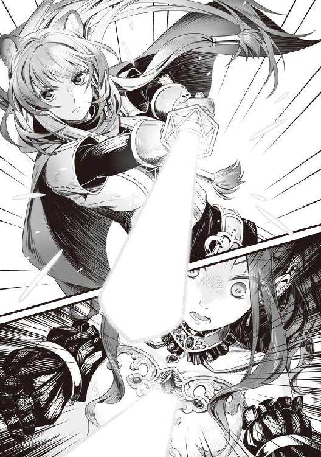
ビッチの絶叫が響く。
そしてビッチは意識を失ったかのように剣を落とし、ラフタリアに体を預ける。
ラフタリアは落ちていた自分の剣を足で拾い上げて、ビッチを盾に錬達に向かって構える。
「「マインさん！」」
「マイン！」
錬と樹、元康がそれぞれビッチに向けて声を掛ける。
「剣の勇者様？ おわかりでしょうが死んではいませんよ。ですが、意識を失ってもらいました」
剣をビッチに当ててラフタリアは脅す。
「どうか、ナオフミ様のお話を聞きいれてはもらえませんか？」
「そ、それは......」
「今すぐ人質を放してください！ そうしないと貴方の身に危険が及びます。尚文さんからも離れてください！」
樹の叫びにラフタリアは冷たい目で睨む。
「フィーロを人質にした方々が言うのですか？ メルティさんも人質にしましたよね。その上、洗脳等という怪しげな話を信じるのですか？」
「う......」
「それよりも、おわかりになりませんか？ ナオフミ様が動けなくなっております」
ビッチが失神して敵の状況が不利になっているのに、未だに俺はラフタリアの方へ近寄れない。
それは先ほどから全くやむ気配のない援護射撃の所為だ。
「今すぐ止めるんだ！」
錬が叫ぶが、後方にいる兵士共は俺に対する執拗な攻撃を止める気配がない。
「やめてください！ お願いします団長！」
「ええい！ それでもお前等はメルロマルクの兵士か！ そういえばお前は盾の悪魔に加担したものだったな！」
団長らしき奴に懇願したのは俺と一緒に波を乗り越えた志願兵だ。
「今すぐ成敗してくれる！」
視界がスロー再生された。
ゆっくりと......されど確実に俺を庇おうとしてくれた志願兵に剣が吸い込まれようとしている。
第二王女の時と一緒だ。
あの時は運良く助けることができたが、今の俺では届かない。救うことができない。
「やめろおおおおおおおおお！」
剣を部下に向かって振りおろそうとした団長に、俺は抑えていた感情が爆発した。
その直後、盾の宝石の上に嵌めていた親父から貰った道具が光って砕け散った。
「うわ！」
な、何が......と思った時、俺の周りに光の結界のようなものが展開されたのに気が付く。
なんだこれは？ 範囲は俺を中心に三メートルくらい。意外と広い。
これは......。
兵士共の援護射撃をこの結界は阻み......砕け散って、その欠片が四方に跳ね返っていた。
「うわ！」
それは錬を含め、勇者全員とその仲間にも飛び火する。
幸いなことに、俺が仲間だと認識している者には飛んでいかないという便利な効果があったらしく、ラフタリアをはじめ、フィーロ、第二王女、志願兵には怪我一つない。
そしてその欠片は......黒く燃え盛った。
幸運だったと片付けるには偶然が多すぎる。
おそらく、親父がくれた道具が俺の盾と何か反応を起こして......黒く燃えたということは憤怒の盾の効果が宿った反撃になったのだろう。
そうでなければ説明できない。
「な──」
「う......」
今や、錬、樹でさえ、黒い炎で焼かれ、戦えているのはフィーロと接近戦をしていた元康くらいだった。
「とー！」
「皆！」
「くっ！ 尚文、逃げるな！」
状況が悪いのを悟った元康がフィーロから一歩以上離れる。
「皆、一ヶ所に集まるんだ」
「はーい。ほら、メルちゃんも」
「う、うん」
思わぬ幸運。とにかく今は逃げることを優先すべきだ。
だが、五体満足の元康からどうやって逃げ切るか......。
まだフィーロは足輪の所為で人型だ。乗って走って逃げるのは不可能。
錬や樹も戦闘不能というわけではなく、あくまで黒い炎で焼かれて傷を負ったに過ぎない。
「マインを解放しろ！」
元康がビッチを担いでいるラフタリアに向かって槍を向ける。
「させるか」
「ナオフミ様」
咄嗟に元康の前に立つが、ラフタリアは俺の背後に回る直前、ビッチを落としてしまった。
元康の視線がビッチに行く。
人質がいるだけでこちらが有利になれたというのに。
手を伸ばして回収しようと試みたが。
「マイン！」
元康がビッチを抱きとめる。
ぐ......ビッチを人質にできなくなった。
また初めからか......しかし、状況は徐々に不利になっている。これ以上の戦いは難しい。
正直このままじゃ負ける。
というところで、ゴロゴロと足元に......何かが転がってきた。
爆弾？ 咄嗟に前にでて盾を構えるが、ぶしゅーっと音を立てて爆弾から煙が噴き出した。
「うわ──」
「な──」
煙で辺りが見えなくなった。一歩歩いただけで、誰が誰だかわからない。
囲まれていた所でこんな攻撃をしたら敵味方の判別が難しくなるぞ。
「こっちでごじゃる」
「あ、この声。盾の勇者様、声に付いていって」
第二王女が指示をする。
「大丈夫なのか？」
「うん多分大丈夫。念のためにラフタリアさんは幻影の魔法を唱えて」
「は、はい！」
第二王女が導くまま、俺達は走り出した。
「ま、待て！ どこへ行った！」
俺は立ち去る前にこう告げる。
「錬、お前なら理解してくれるはずだ。こんな強引な手段で、犯人を俺だと言い切れるのか？」
「......」
「風の魔法を唱えます！ 使える方は合わせて」
「待て、樹」
「なんですか？」
「今は──」
樹が魔法を唱えて煙を吹き飛ばそうとしている。それを錬が引きとめているような声が聞こた。
大丈夫か？ そう思いながら俺達は声のする方角へと走っていった。
やがて煙が晴れると錬達とはずいぶん離れた所にまで距離を稼げていた。しかも念のために唱えたラフタリアの魔法もあって、あっちは俺達を捜している最中だ。
これなら......。
「ついでにこのローブを羽織るでごじゃる」
と、謎の声が俺達に布をかぶせる。
「大丈夫なのか？」
「し......静かに、じゃあ移動するわ」
第二王女はそう告げて、フィーロと手を繋いで走っていった。
俺達もそれに続く。
こうして、俺達は勇者達から逃げおおせることに成功したのだった。
その後、しばらく経ったところで結界は消えてしまった。
とにかく、親父がくれた餞別によってどうにか窮地を脱することができたに過ぎない。
次は対処しきれるだろうか？ 勇者達も馬鹿じゃない。すぐに対策を講じてくるかもしれないな。
ただ......錬はこの事態が何かおかしいことに気付いていたようだった。それに期待するしかない。
......とにかく今は考えるよりも逃げることを優先しよう。
二十話 影
「ここまで来たらしばらくは大丈夫でごじゃる」
ローブを脱いで俺達は声の主を見る。
そこには、先ほど隣国との国境で話をした村人が立っていた。
いや、喋らなかった方の奴だ。
「お前......？」
なんか別人のような気がした。
「前に母上の変装をしていた影武者の話をしたわよね？」
「あ、ああ......」
「この人よ」
「お初にお目にかかるでごじゃる。何故メルティ第二王女には拙者の見分けがついてしまうでごじゃるかな？ 影としては非常に遺憾でごじゃる」
「その喋り方に問題があると思うのよ」
「メルティ第二王女の指名でごじゃるからしょうがないでごじゃる！」
「内輪ネタはそれくらいにして教えてくれないか。どうして助けてくれた？ お前は何者で、何を目的にしている？」
「拙者は、メルロマルクの秘密警護部隊『影』の一人でごじゃる。理由あってお助けした所存でごじゃるよ。ちなみに拙者に個人名はないでごじゃる。あえて言うなら影と呼んで欲しいでごじゃる」
影とか......何カッコつけているんだ？ 前にも似たようなのと会ったな。リユート村で元康とレースをした時だったか。
この世界の住人と異世界人の俺では微妙に思考の差でもあるんだろうか。
色々と指摘したいところは山ほどあるが......気にするのはやめておこう。
「どうして助けてくれたんだ？」
これが一番聞きたいので尋ねる。一応理由はいくつか憶測できるが、どれも決定的ではない。
「答えられないでごじゃる」
「ふむ。秘密主義ってやつか」
「あえて言うとしたらメルティ王女の護衛が拙者の仕事でごじゃる」
「できてねえぞ」
じゃなきゃ第二王女が戦闘している最中コイツは姿を現したはずだ。
「そこは盾の勇者殿が守れるのをわかっているから、出なかったでごじゃる」
「てめぇ......」
「先ほどの戦いはかなり危なかったでごじゃるが、結果的には成功でごじゃる。これで他の勇者の方々も事件に関して疑問を抱いたと思うでごじゃる」
つまり知っていて黙って見ていたな。ずいぶんと有能なことで。
「あと、盾の勇者殿に女王陛下が滞在している国を教えに来たでごじゃる」
自称影は地図を見せて、国の南西の方角にある隣国を指差した。
シルトヴェルトとは完全に逆の方向だ。
「現在、女王陛下がいるのはこの国でごじゃる。ついでに盾の勇者殿が亡命しようとしている亜人の国とは逆方向なので警備も手薄でごじゃる」
「まあ......」
どうも薄々感じていたが、俺が亜人の国へ逃げるというのが奴等の認識なんだよなぁ。
理由として思いつくのは亜人の国が三勇教会とは逆に盾を信仰している可能性だ。俺が上手く亡命し、事実を伝えたらクズや三勇教には非常に悪い結果になるというところだろう。
ぜひとも亡命して痛い目に遭わせてやりたいとも思うが......あの警備を突破するのは不可能に等しい。フィーロで二週間半も掛かる道のりだし、勇者共に先回りされると厳しい。しかもフィーロには戦闘力が低下する足輪まで準備されている始末だ。
だが、迂回してでも行きたい。
「今回の件は根が深いでごじゃる。できれば盾の勇者殿には協力して欲しいでごじゃるよ」
「どういう意味だ？」
「今、三勇教会は盾の勇者殿の活躍で虫の息でごじゃる。だからこんな無茶をして事件に仕立て上げたでごじゃるよ」
「虫の息？ とてもそうは見えなかったが......」
「メルティ王女暗殺未遂事件後の国民を見てもらえばわかると思うでごじゃる」
確かに各地の奴等が俺を庇ってくれたおかげでここまで来ることができたと思う。
......もしかして信仰が揺らいできている？
「ね？ 父上が犯人じゃなかったでしょ？」
「この自称影がウソを言っているかもしれないだろうが。信じ切れるわけないだろ」
まあ、仮に、と付け加えて話をするとしよう。
「仮に肯定したとして、洗脳しているという無理な暴論を通そうとしているのにはそんな理由があったわけか」
ここ最近までの俺の活躍......薬を売ったり、困っている村人を助けたりしていたことが大きく関わってきている。結果的にだが、他の勇者が原因で起こった問題を解決してしまったのも一因か。
盾以外の伝説の勇者を信仰している連中からしたら信仰が揺らぐ出来事だ。ここで俺が実は悪人で洗脳が事実だと大々的に証明できれば信仰は回復する。だけど、俺が無実を証明できた暁には三勇教会は壊滅的打撃を受けるわけか。
「どうするでごじゃる？ このままシルトヴェルトに亡命して助けてもらうでごじゃるか？」
「それは......」
なんていうか、手柄を誰かに渡して自分は安穏とするなんて趣味じゃない。シルトヴェルトとメルロマルクが戦争を起こしている間に波が来たら、やはり俺は敵の真っ只中に呼び出される。それは非常に都合が悪い。
考えてみれば俺をここまで陥れて苦しませた連中だ。おそらくビッチもこの教会の手の物なのだろう。クズ王は第二王女曰く、違うらしいがな。
となれば、無闇に亡命して力ずくで奴等に痛い目を見せるよりも、今まで俺を信じていた奴等に掌を返させるというのが、一番効果的に思える。上手くいけば日数の節約になるし手堅い。
だが......。
「俺が女王と会ってお前等に何の得がある。三勇教会は壊滅してしまうかもしれないんだぞ」
「答えられぬでごじゃる」
影とやらはあくまで俺に女王の情報を与えるだけで、そこからどうするかは答えないつもりみたいだ。
だが、コイツ等が女王の配下であるのは間違いない。
第二王女とも接点があり、女王の側近なのだから女王が不利になることはしないはず。となると俺が女王と会うことで女王が何か得をするということになる。
正直、女王とやらの目的が見えてこない。
第二王女の言動から他国との戦争を極力避けようとしているのは見て取れる。
更に盾の悪魔という伝承が根強いこの国で俺を気に掛けていたというのも、災厄の波に強く入れ込んでいるというのがわかる。
影はこう言った──『協力して欲しい』と。
女王の方針と三勇教会の考えが一致していない。
ふむ......一つ言えることは、女王は敵ではないのかもしれない。味方であるかどうかは怪しいが、現状を打破するために賭けてみるのも悪い手ではないか。
「一度だけだ」
「どういうことでごじゃる？」
「俺はお前に助けられた。一度だけ信じてやる。女王に会えば良いんだな？」
これでふざけた茶番を終わらせることができるなら参加しない手はない。
「誰かの考えに乗っかるのは不服だが、それが一番良さそうだ。もしも騙したら......」
「心得ているでごじゃる。では拙者は一度お暇するでごじゃる。いつ、教会側の影が来るかわからないでごじゃるから」
「教会側にもいるのか？」
「一枚岩の組織ではないでごじゃる。なので十分注意するでごじゃるよ？」
「どうやって？」
「盾の勇者殿はその疑り深いところがカギでごじゃる。たとえ喋りが似ていても拙者が本物か、信じられるでごじゃるか？」
確かに、次に出会っても疑って掛かっていると思う。
「それでは失礼するでごじゃる」
そう言うとごじゃるは一瞬で消えていった。
語尾はふざけているけど、仕事は正確そうだ。
「アイツ、信用できるのか？」
正直、ちょっと疑わしい。
「大丈夫......母上が信用していたから」
「その母上って奴がいまいち理解できないんだよな」
クズやビッチとは考え方が違うみたいだが、何を考えているのかわからないし、これまでの第二王女や影の情報から味方のようにも見えるが、目的が見えてこない。
なにより第二王女の暗殺と三勇教会に一枚噛んでいる可能性も否定できないのが痛い。
全てが女王の陰謀で俺を殺すことだけを考えているような奴だった場合、もはや手がない。
俺達はシルトヴェルトとは逆方向に進んでしまい、一網打尽。信じたくはないが、第二王女自体が切り捨てられている可能性だってある。
だが、一度は女王とやらの思惑を知るのも必要だ。
白黒つければ、今度こそ俺が成すべき事が見えてくる。
「とにかく、行く場所は決まった」
「はい。行きましょう」
「うん。行こうね。フィーロちゃん」
当てもなく国外脱出の方法を模索する段階から一歩前進だ。
俺達は南西に向けて歩を進めるのだった。
「うん。でも、フィーロちょっと疲れた。両手が痛いし、魔力も切れちゃった」
へたりとフィーロは座り込んで疲労を訴える。
「ですね......ですが、荷車も荷物も置いてきてしまいました」
「しょうがないさ」
金と携帯食、簡易の料理用ナイフ以外を置いてきてしまった。
しかもラフタリアの防具まで......。
更にフィーロがまだ人型だ。どうやったらこの足輪、外せるんだ？
「ラフタリア、どうにかこの足輪外せないか？」
「やってみますけど」
ラフタリアがフィーロの足に着けられた足輪に手を掛けて外そうと試みる。
だが、思う通りにいかないようだ。
「......難しいですね」
些か不安だ。だけど表情に出すわけにはいかない。
「わたしもやってみる」
第二王女も立候補する。
「魔法で壊せないかしら」
そう言えばウォーターカッターというのが俺の世界にあったな。
高水圧で大抵の物を切断できるってやつ。
俺がそんなことを考えている間も、第二王女はフィーロの足輪を弄っていたが......。
「ダメねこれ、錬金術師か細工技師じゃないと壊せないんじゃないかしら」
「えー！」
フィーロが露骨に嫌そうな顔をする。
まあ、意味もなく人型にされて力が出ないんじゃイヤだろうな。
「細工技師ですか？」
「そう。魔法的加護が掛かっているかもしれないから、鍵開けで外れるかわからないもの」
「細工技師......」
ラフタリアが俺の方を見る。なんだよ？ まあ、細工はできるけどさ。
「ナオフミ様、細工できますよね。やってみてくれませんか？」
「まあ、できなくはないけど、鍵開けはしたことないぞ」
細工用の針金が無いわけじゃない、とりあえずやってみるか。
フィーロの足輪に付いている解錠用の穴に針金を差し込む。
これで上手く外せたら、俺の技能に鍵開けとか余計な物が付くのだろうか？
念のために魔力を込めてやってみる。ん？ なんか......魔力で反応するところがあるな。
アクセサリー商が教えてくれたコツを併用して針金をカチャカチャと弄る。
施されている加護は......なんか複雑な式があるみたいだけど、強引に破壊できそうだ。いや、正確には壊すと、普通に外せなくなるんだろうけど、品質自体を落とすことで、フィーロに掛かった効果を打ち消せるんじゃないか？
魔力付与を遠慮なく掛け、取っ掛かりに針金を引っ掛ける。するとガチッな音がして足輪が劣化する。電子錠とかを高電圧のスタンガンで破壊する感じのアニメみたい？
「あ」
ボフンとフィーロがフィロリアル・クイーン形態に変身した。
「後は力ずくでどうにかなるな？」
「うん！」
フィーロが足輪の掛かっていないもう片方の足と翼で、足輪を思いっきり引きのばした。
「凄い強引な外し方」
「うるさい。器用に外してどうするんだよ」
「ごしゅじんさまありがとう！」
「これからは気を付けろよ。元康の事だ、きっとまた持ってくるぞ」
この外し方は時間が掛かる。戦闘中では難しいな。
「うん！」
それから俺達は隠れながら南西に向かって歩き出した。
説得が通じたのか、錬と樹が追ってくる気配はない。それともどこかで見張っているのか。
まあ、さすがに洗脳している、っていうのは暴論だったしな。逆に元康がしつこいけど。
どちらにしろ、三人の勇者の中で一番強そうな錬と遠距離攻撃の樹がいないのは幸いだ。元康はフィーロで対処できるし、アイツも第二王女がいるから本気で俺に掛かれないしな。
しかしそれを踏まえても問題が山積みだ。
「どうしたものか......」
俺達はこれからの方針を話し合った。
エピローグ 名前
俺達は南西に向けて進路を進めていた。
荷車のないフィーロに乗る移動なので長時間の移動は窮屈だ。
「どこかで荷車でも失敬するか？」
どうせ賞金首になってしまっている。荷車くらいなら......それもなぁ。
「やー！」
フィーロがすっごい反応を示した。
「悪いことをして手に入れた荷車は引きたくない！」
なるほど。フィロリアルの感覚からしたらアウトなのかもしれない。
「盗みはともかく、ずっとフィーロに乗っているのもきついですよね」
「第二王女もそう思うか？」
「むぅ......」
第二王女の奴、俺の問いに不愉快そうに顔を逸らした。
どうしたというのだ？
「少々危険だけどラフタリアがどこかの村で荷車を買ってくるという手が妥当かな......」
この際乗れれば良いのだ。あの影とかいう奴に頼めば良かったか？
「おっと、もうすぐ日が落ちる。そろそろ休憩を取るか」
「うん！ あ......」
頷きこそしたけど、第二王女の奴、やっぱり俺の顔を見て不快そうな顔をした。
一体どうしたというのだ。
ぐー......とフィーロの腹が鳴っている。
「お腹すいた」
「フィーロちゃんの食いしん坊」
第二王女がフィーロをツンと指で突く。
「えへへ」
仲が良いのは結構だが、その動作はバカップルみたいでちょっとむかつく。
焚き火の準備を終えて、その日の食事をする。
「ほら、第二王女」
俺が今日の晩飯を作って渡そうとするなり、第二王女の奴、不機嫌な顔で拒む。
一体どうしたというんだ？
「メルちゃん食べないの？」
「食べるよ。だけど......」
第二王女の奴、なんか俺をチラリと見て、迷っているようだ。
何なんだ？
「どうしました？」
「なんでもない」
ラフタリアが尋ねたところでひったくるように第二王女は晩飯を受け取った。
「どうしたのメルちゃん？」
「う......」
様子がおかしいのでフィーロが尋ねると第二王女は困ったような顔をする。
「別に俺には洗脳の力なんてないぞ」
「違う！」
それっきりプイッと第二王女はそっぽを向く。
なんていうか、普段の態度は変わらない。人の姿のフィーロと楽しく談笑するし、ラフタリアとも楽しげに言葉を交わしている。
なぜか俺だけを妙に不愉快そうな表情で見たり、無視したりするのだ。
まったく、わけがわからないな。
「──って言わないで」
「ん？ どうした第二王女」
第二王女の奴、なんか震えながら小さく何かを喋った。
「なんて言ったんだ？」
「第二王女って言わないで！」
俺を涙目で睨みながら第二王女は叫ぶ。
「ど、どうしたんだ？ いきなり」
「わたしは第二王女って名前じゃない！ メルティよ！」
「は？ 何を当たり前のことを言っているんだ」
「盾の勇者様がわたしの名前を呼ばないのが原因でしょ！ 最初はメルって呼んでくれたじゃない！」
第二王女の奴......長旅のストレスが爆発したのか頭を掻き毟りながらヒステリックに叫んだ。
フィーロとラフタリアが、叫ぶ第二王女を見て目を白黒させて驚いている。
「何度だって言うわ！ わたしにはメルティっていう名前があるの！ なのに盾の勇者様は第二王女第二王女って、それはわたしの立場であって名前じゃないわ！」
「なんだ？ 名前で呼んで欲しかったのか？」
「そういう意味じゃない！ どうして盾の勇者様はわたしを仲間はずれにするの！」
「仲間はずれ？ そりゃあ、お前は俺のパーティーからしたら部外者だろ」
「でも今は苦楽を共にする仲間よ！ 立場名で呼ばないで！」
「......お前も俺の事を盾の勇者と呼ぶじゃないか」
第二王女の理屈だと自分だって該当する。
俺の名前は盾の勇者ではない。
「じゃあこれからわたしはナオフミと呼ぶわ。だからナオフミもわたしの事をメルティって名前で呼びなさい！」
「はぁ......」
「ホラ！ 呼びなさいよ！ ナオフミ！」
呼び捨てというのも何か嫌だなぁ。
そもそも第二王女......ラフタリアにはさん付けなのに、俺は呼び捨てか。
だが、コイツに様付けで呼ばれるとビッチを思い出す。あのビッチは勇者様だったが。
ここで下手に反論しようものならもっと騒ぎそうだし、あの勇者共の戦いではフィーロを守るために戦ってくれていた。
ウソを言っているわけでもないし、騎士共に襲われるまで俺とクズの仲を取り持とうとしていた。更に振り返れば、元康が街中で暴れた時も助けてくれている。
ウソもなく、別にフィーロを俺から奪おうとしているわけでもなかったのだろう。
......この世界の人間は信じられないと思ってきたが、コイツなら信じても良いかもしれない。
フィーロは無邪気だけど人を見る目は......あると思う。そのフィーロが信じている友達なんだから、俺も......少しは信じてみようと思う。
「わかったよ。メルティ。これで良いか？」
「絶対に守りなさいよ！」
「はいはい。わかってるよ」
まったく、不機嫌だったのは俺が第二王女と呼ぶからか。面倒な奴だな。
「フィーロ、ビックリした」
うん。コイツは騒がしいがヒステリックとは違うな。なんというのか、子供特有の騒がしさだ。
フィーロにも似た部分がある。要するに歳相応ってことだ。
「メルティ王女様も気になさっていたのですね」
「ラフタリアさんもわたしの事を王女って呼ばないで！」
「わかりました。メルティちゃん」
「うん！」
言ってはなんだがラフタリアはどうなんだろう。俺の事を名前で呼ぶようになったのは双頭黒犬と戦った時からだ。そう思うと、名前で呼び合うというのは信頼の証......なんだな。
「ラフタリア、お前は手が掛からなくて助かる」
手が掛かったのは最初の頃くらいで、後はそこまで自己主張せずに付き従ってくれている。
フィーロと違って堅実な戦いをするので、盾である俺ともやはり相性は良い。何より行商では俺の代わりに商売をしたり逃走生活では偽装したりと、かなり貢献してくれている。
「褒め言葉なんですか、それ？」
「違うのか？」
「本気で言ってますよね......はぁ」
「どうしたのごしゅじんさま？」
フィーロはどうだろう？
なんかー、フィーロに名前で呼ばれるのは抵抗があるから良いような気がする。
「フィーロは俺の事を名前で呼ぶなよ」
「なんでー！」
「ふふ、フィーロちゃんったら仲間はずれ」
「なんでなんでなんで！ なんでフィーロだけ名前でよんじゃだめなのー!?」
「じゃあ呼んでみろ」
「ナオフミー！」
いきなり呼び捨てかよ。しかもなんか凄くカタコト。ラフタリアよりも違和感がある。
「ないな。しかもいきなり呼び捨てとか......」
「ぶー！」
「まあまあ、フィーロちゃん落ち着いて」
「だってー」
「そうだぞ、メルティの言う通り、お前だけは俺をご主人様と呼ぶんだ。仲間ハズレとも言うが、逆にフィーロだけ特別という表現もある」
「ぶー！」
「じゃあ、育ての親なんだから、パパとかお父さん、父上とかは？」
「えー......なんかいやー」
「なんでだ？」
まあ、こんな大きな奴の親とか俺が違和感でイヤだけど。
「おとうさんって呼ぶよりもごしゅじんさまがいいー」
「ああそう、ならそれでいいだろう」
なんかフィーロなりの概念でもあるのか？ まあいいや。
「ナオフミ」
「なんだ？」
メルティが振り返って俺に言う。
「もう一度、名前で呼んで」
「ん？ どうしたんだメルティ？」
メルティは静かに目を閉じ、耳を澄ますように俺の声を聞いていた。
「なんでもない」
「......変な奴だな」
まったく、騒がしい奴が増えた。
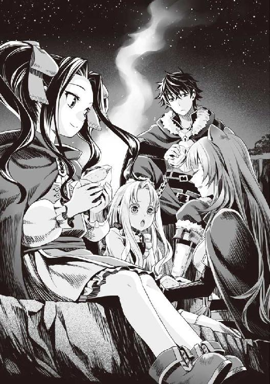
とはいえ、不快ではないのは、たまたま機嫌が良かったからということにしようと思う。
「さて、明日に備えて今日は早めに寝るとするか」
まったく、ここ数日というか疫病の村から始まって、メルティと知り合ってから色々なことがあったな。
何度死に掛けたことか、命がいくつあっても足りない。嫌な事もあったけど、こうして逃亡の旅を続けられるならまだ良い。
また一人、信じられる人が増えたと素直に喜ぼう。
あのビッチの妹を信じるなんて俺も驚きだけどさ。
信じて行けば、無実を証明して、この苦しい旅を乗り越えられると、根拠のない自信が出てきた気がする。
今は......静かに休むとしようか。
──俺には頼れる仲間がいるんだから。
番外編 一番の友達に出会うまで
わたしの名前はメルティ＝メルロマルク。メルロマルク国第二王女にして継承権第一位の王女です。
見聞を広めるため、世界各国を母上と共に旅しています。
母上の仕事はメルロマルクが戦争にならないように他国と外交をすることです。
わたしはそんな母上の仕事ぶりを学ぶために一緒にいます。
その日は、母上がわたしに新しい仕事を教えてくれると期待に胸を躍らせていました。
父上からの手紙を受け取っていた母上が、どんな仕事をわたしに与えるのかわかっていました。
正直に言えば父上は嫌いではないのですが、少しだけ気持ちが悪いです。昔は立派な人だったという武勇伝は数知れないほどなのですが、姉上を溺愛して何でも叶えようとする姿に幻滅していました。
今の父上を見たらとても信じられません。
ただ、戦争ではとても強いというのは母上と知的遊戯をしている時にはわかります。
なにせ、母上が頭を捻り続けているのに欠伸混じりに勝ってしまうのですから。
別に母上が弱いわけではありません。母上も知的遊戯では父上以外の人に負けているところを見たことがありません。
わたしが幾ら勉強しても勝てない母上を父上は軽く凌駕しているのです。
大好きな父上ではあります。とても家族思いなんだとは思うのですけど、ワガママ放題の姉上を叱れないのはどうなのでしょう。
ちなみに知的遊戯で一番弱いのは姉上。手加減している父上に勝って喜ぶのはまだ良いですが、少しでも強い相手と勝負すると圧力、買収、卑怯な手と幾らでもズルをします。
知的遊戯は国によって色々な呼び名のあるものの総称です。元は過去の勇者様が異世界から伝来させたと言われています。その時の名前はチェスといったと母上が言っていました。
圧力や買収が通じないわたしには何をするのかというと。
「最弱の駒は特殊能力で全部一度に動かせるルールがあるのよ！」
と、言いながら全部の駒を動かした時は呆れました。
それでもわたしに勝てず、盤を反対に引っくり返して。
「機動性の高い駒の能力！ 敵味方が全て逆さになるのよ！ そしてこの能力で次も私の番！」
そこまでは良いのですけど、自分が良い駒を取った時に。
「敵を欺いて、王の眼前に跳躍するわ！」
とまで言って、王の駒の前に駒を置いた時は見下げました。
「じゃあ......逆さの能力を使うね」
わたしが同じ能力を使うと思わなかったのでしょうか？
「じゃあ──」
「まだ私の番だよね。はい」
逆さになる能力を持った駒を取って、使えなくしました。
「......」
凄く忌々しそうに姉上はわたしを睨みつけました。
自分でルールを追加して利用されたらこれですか？
「私以外は使えないの！ だから戻すわ」
「それはもう平等なゲームではありません。幾らでも父上とやっていてください」
わたしが立ち去ると姉上は腹が立ったのか盤を投げ捨てていました。
何を考えているのでしょうね。
そんな二人に国を任しているのですから不安でしょうがありません。
当然ながら国は有能な側近に任せ、二人は実質お飾りです。
さて、話を戻します。
約二ヶ月前、世界の脅威となる災厄の現象である波が到来しました。
その時、わたしと母上は変わらず外交の旅をしている最中でした。
国に戻る前に波に対抗するための世界会議に出ることになったのです。
母上と共にフォーブレイという国に向かい、各国と会議を行いました。
わたしは母上の仕事を見て、次代の国を守るためにという名目で参加させてもらっています。
勇者召喚を行うというのは権力を示すためでもあると同時に、外交において強い牽制力となるのです。
その儀式を行う順番を話し合いました。
そして......各国が行う召喚の儀式を確認するため、国の首脳陣がついて行くことになります。
最初の召喚はフォーブレイで行われました。
しかし、儀式は失敗。勇者は出てきません。
「母上......なんで勇者召喚をしてから話をしないのですか？」
「国と国、人と人の間には合理だけでは言い表すことのできない、難しい取り決めがあるのですよ」
各国が召喚の儀式をするのにわたし達も少しだけ参加しています。
やがて判明するのが、なんとわたし達の国であるメルロマルクが無断で召喚を行ったということでした。
ただでさえ世界が大変だというのに、この影響でとても大きな国際問題になってしまいました。
それからは大変でした。母上に暗殺者が差し向けられたり、会議では常に糾弾される始末。
犯人は父上と教会関係者だというではありませんか。おそらく姉上も関わっているでしょう。
「メルロマルクの女狐め！ 勇者を一人占めして何を考えている！」
指を差されて怒鳴られても母上は一歩も引かず、扇で口元を隠しながら答えた時は驚きました。
「世界征服......と答えるのは面白そうですね」
「なんだと！」
「おやおや、四聖勇者を抱え込んでいる我が国に戦争を仕掛けられるとお思いで？」
「ぐ......」
わたしは母上が内心で焦っていたことを知っています。
体調は優れず、熱を出して食事も喉を通らない状態でした。
そうとは察せられずに、会議では国を守るため、常に強気で答えたのです。
わたしは......母上がとても意志が強いんだと尊敬しました。
「まあ、条件次第では勇者を渡すのはやぶさかではありませんね。条件次第ですが」
「どうせ守るつもりはないのだろうが！」
「おや？ 世界が危機に瀕しているのに、自国の事だけを考えているとでも？ 我が国と同じように出し抜こうとしている国が無かったのですか？」
母上の返答に、相手も声を詰まらせていました。
国の暗部に収集させた資料を母上は提示したのです。
「フォーブレイ王？ どうでしょうか？」
母上がフォーブレイの王様にそう話を投げかけました。
正直、フォーブレイの王様は気持ちの悪い人物です。
うごめく肉塊のような......近寄りたくない豚のような化け物です。
「ぶふふふ、メルロマルクの女王よ......ワシが何を望んでいるか、お前ならわかっているであろう？」
「......ええ、その条件さえ飲めれば良いのでしょう？」
その条件に各国は息を飲みました。
この条件を飲むのに、母上は苦しい決断をしたことをわたしは知っています。
ここまで交渉するのにとても大変な道を歩いてきました。
「では、各国の皆さまは我が国、メルロマルクに使者を出し、勇者様方の意志を尊重しながら来国してもらいましょう」
母上の言葉に各国の首脳陣は頷きました。
これが世界会議後にメルロマルクに勇者が召喚されて数日の事でした。
それから一週間後......四聖勇者全員が話を断ることになるとはその時のわたしには予想もできませんでした。
「話が違うではないか！」
勇者を招く準備をしていた国々は母上に詰め寄ります。
中でも盾の勇者様に対するあまりにも非道な待遇が問題になりました。
メルロマルク国内では盾の勇者様を排斥するのに躍起になっている、と。
「......どうやら勇者様方は、我が国の膿を見抜き、排除することに力を注いでいるご様子です。真に申し訳ないですがしばしの時が必要かと」
「おのれ女狐め！ 偽りを申したな！」
盾の勇者様を信仰する亜人の国、シルトヴェルトの代表が身を乗り出します。
「おや？ 盾の勇者様から近寄るなと宣言されたと伺いましたが？」
「ぐ......」
「ぶふふふ......良いではないか。好き勝手にさせておけばよい。まだ勇者は強くなっている最中だと聞くではないか」
フォーブレイ王がそう母上を擁護してくださいました。
「シルトヴェルトの者よ。過去の盾の勇者がお前等の国でどれだけの日数、生存したか記録が残されていないとでも思うてか？」
悔しそうにシルトヴェルトの代表が拳を握ります。
勇者は丁重に扱わねばならない。それは大昔からの取り決めです。
ですが先代の盾の勇者様はシルトヴェルトで召喚され、数ヶ月で亡くなられています。
事故か陰謀か、あるいは本当に身体の弱い方だったのかはわかりませんが、シルトヴェルトは度々この話を持ちだされてしまう負い目がありました。
「来るべき時まで待つしかないですね。覚悟の上でやるのでしたら......自国の膿を出すことになりますがよろしいので？」
「く......」
悔しそうにわたし達を睨みつける代表達にわたしは腰が引けてしまいました。
このように、メルロマルクは各国から糾弾され、いつ戦争が起こってもおかしくない状況でした。
それを母上が必死に説得して、宥めているうちに二ヶ月が経過。
何故、盾の勇者様が好条件の勧誘を拒んだのかわかりません。
メルロマルクでは扱いがとても悪いのに......。
母上も報告を聞いた時には困惑の表情を浮かべていました。
「メルティ、あなたには仕事をしてもらいます」
「はい！ 何でしょうか？」
「我が国メルロマルクに戻り、オルトクレイが盾の勇者様に行っている差別をやめさせるために極秘で注意しに行って欲しいのです」
この事はわたしの耳にも入っていました。
父上は姉上と結託して盾の勇者様を不当に差別しています。そして盾の勇者様に不利になるような画策しているとの話です。
事前に阻止された出来事を数えれば星の数ほどあります。
母上も国へ兵士を送ったそうですが、尽く無視されており、父上に意見できるわたしにこの仕事が回ってきたのです。
昨晩、母上は父上の肖像画を魔法で何枚も処分していました。
このままじゃ父上の暴走に、母上の我慢も限界に達して不仲になってしまいます。
それは......絶対に阻止したいです。
「お任せを！」
わたしは背筋を伸ばして答えました。
「任せましたよ」
「はい！」
こうしてわたしはメルロマルクへ向かうために馬車に乗っていくことになりました。
メルロマルクまでの道中、休憩を挟むことがあります。
人間や馬車を引くフィロリアルさんを休ませたり、母上に経過報告をしたりするためです。
「では拙者は経過報告のため、僅かな時間でごじゃるが留守にするでごじゃる。メルティ王女、絶対に移動しちゃダメでごじゃるよ」
「ええ、わかっていますわ」
影が一人、わたしの護衛としてつき従っています。
影とは表に出せない仕事をする隠密部隊の名称で、密かに護衛の任務などをしています。
本来は交代で警護を行っているのですが、色々と忙しくてたった一人の影がわたしについてくれています。
なのでわたしの警護をしている影は報告のために留守にする時があるのです。
「......ふう」
馬車の旅は嫌いではありませんが、退屈でもあります。
影が戻ってくるまでの間、暇すぎて欠伸が出てきます。
退屈しのぎに馬車の窓から顔を出すと、わたしはある生き物を見かけました。
「あ！」
「な、なんでしょうか!?」
わたしの声に従者は驚きました。
わたしは馬車から降りて、道から外れた草原の茂みを掻き分けて進みます。
「グアグア」
そう、そこには野生のフィロリアルが空の馬車を引いて歩いていました。
フィロリアルとは馬車を引く鳥型の魔物です。
勇者の乗り物として使役されている神聖な生き物として世界中に生息しています。
わたしは母上から色々な勇者の伝承を教えられていましたが、その中でもフィロリアルは格別に大好きな魔物だったのです。
フィロリアルの共通点として「馬車を引くことが好き」というものがあります。詳しいことはわかってはいませんが、何かを引いていないと落ち着かないらしいのです。
わたしは馬車の旅をしているうちに、フィロリアルと遊ぶことが趣味になっていました。それがきっかけで、今ではフィロリアルのことが大好きなのです。
「あれは何種かな？ 見たことないわ」
わたしが今、草陰に隠れて見ているのは一匹のフィロリアルです。
羽が空のような青色でした。
パッと見で判断するとフィロアリア種に見えるけど、あの色合いは見たことがありません。
羽の生え方も違うし、筋肉の付き具合も何か異なります。
何より、一本の冠羽が目立ちます。きっと珍しいフィロリアルさんに違いありません。
どうにかしてお友達になれないかな？ 珍しいフィロリアルさんと仲良くなりたい。
珍しいフィロリアルさんの背中に乗って一緒に走りたい！
野生のフィロリアルはちょっと臆病なところがある魔物です。
だけど食いしん坊でもあるから干し肉や干し草さえあれば仲良くなれます。
だからわたしはこういう時のために干し肉を携帯しています。
そっと取り出し、藪から出ました。
「グア？」
フィロリアルさんは気付きました。
わたしは警戒されないように、ゆっくりと、干し肉を片手にフィロリアルさんに近寄っていきました。
「どうぞ。フィロリアルさん」
フィロリアルさんはわたしを警戒しつつ、ゆっくりと近づいてきました。
クンクンとわたしの持つ肉の匂いを嗅いでいました。
だけど......。
「グア！」
だっだっだ！ と音を立ててフィロリアルさんは走り去ってしまいました。
「あ、待って！」
あんなに珍しいフィロリアルさん、絶対に友達になりたい。
走るのが大好きなフィロリアルさんには追いついてくる相手しか認めない種類もいます。
わたしは馬車に戻って従者に命じました。
「あのフィロリアルを追って！」
「で、ですが！」
「お願い！」
わたしの言葉に従者は戸惑ったようでしたがすぐに頷いて、手綱を強く引きました。
この馬車を引いているのもフィロリアルさんです。
「グアー！」
フィロリアルさんが声を上げて空色のフィロリアルさんを追いかけ始めました。
「待ってー！」
逃げる空色のフィロリアルさんを追ってわたしは馬車を走らせていきました。
やがて道はどんどん険しい森に入り、山に差しかかっていきます。
「待って！ 本当に待って！」
空色のフィロリアルさんは楽しそうに颯爽と走っていきます。
凄く速いです。馬車を引くフィロリアルさんは既にバテ始めていました。
「ストップ」
「え？ あ、はい！」
「グア......グア......」
わたしは馬車を降りて、馬車を引いているフィロリアルさんに水を飲ませ、水の魔法で熱を冷まさせました。
「大丈夫？」
「グア！」
ちょっと無茶をさせすぎました。もう追いかけるのは諦めるべきなのかもしれません。
そう思いつつ、先を走るフィロリアルさんを見ます。
すると、追いかけてくるのを待っているかのように、わたし達を遠くから眺めていました。
遊んでいるつもりなのか楽しそう。
「行ける？」
「グア！」
馬車を引くフィロリアルさんが元気よく返してくれました。
「じゃあ出発！」
再度馬車に乗って指示をします。追いかけっこが再開されました。
空色のフィロリアルさんは楽しげに走っていきます。
とても速くて付いて行くのがやっと。珍しくて足が速いって凄い。
「──いけない！」
わたしは失念していたことを思い出しました。
わたし達は折り返しのような坂を下っています。急坂の連続カーブです。
空色のフィロリアルさんは山の下の方を走っている最中です。
この先は人が入って良い領域ではありません。魔物の中では凶悪なドラゴンが住む縄張りです。
フィロリアルはドラゴンととても仲が悪い魔物なのです。
つまりそんなドラゴンの縄張りに空色のフィロリアルさんは、今まさに入ろうとしているのです。
きっと走るのに夢中で気付いていません。
「急いで止めないと......しょうがない！」
ちょっとずるいとは思いますが、わたしは馬車から飛び出し崖から身を乗り出して、空色のフィロリアルさんに向けて跳躍しました。
危ないですが、魔法で自身の身体くらいは守れます。
「メルティ様！」
従者の方が声を出しますが、後の祭りです。
わたしは一直線に空色のフィロリアルさんに飛びつきました。
「グア!?」
「ごめんなさいフィロリアルさん！ だけどこの先はドラゴンの縄張りなの！」
「グア！」
バタバタと暴れるフィロリアルさん。
だけど、時すでに遅く。
「グルアアアアアアア！」
空からドラゴンが舞い降りてきました。
馬車よりも遥かに大きいドラゴンです。
ドラゴンの雄たけびとフィロリアルさんの鳴き声が辺りに響き渡ります。
フィロリアルさんは警戒態勢に入ってしまいました。
ドラゴンは強靭な鱗の生えた凶悪な魔物です。空を飛び、剣でも傷が付けづらい鱗を所持し、強力な牙と爪を持っています。
そして、強い人の使う魔法とは異なる魔法を使いこなします。
そんな強力なドラゴンがわたし達の目の前に居ました。
どうしよう。わたしは、フィロリアルさんが怪我をしないように前に出ました。
「わ、わたしが相手になります」
わたしのＬｖは18だけど、強力な水の魔法が使える。
一番強い魔法を唱えれば追い払うくらいはできるかもしれない。
従者の方も近くにいるし、こんな時用の道具が馬車にあったはず。
ドラゴンは興奮していて、わたし達に襲いかかろうと距離を測っています。
このまま、下手に攻撃すれば、すぐにでも襲い掛かってくるでしょう。冷静に......対処しなければ。
「わ、わぁああああああああ！」
従者は腰を抜かして逃げ出してしまいました。
そんな。ここで従者が逃げたら、誰が馬車からドラゴン用の道具を出すのよ。
「グア！」
馬車を引くフィロリアルさんがドラゴンからわたしを守ろうと走ってきました。
あのフィロリアルさんは馬車で国に戻るまでの間に仲良くなったフィロリアルさん。わたしの一方的な思いじゃなかったんだと嬉しくなりました。
そのフィロリアルさんがわたしを庇って──
「グ......あ......」
馬車を引くフィロリアルさんの首に......深々とドラゴンの牙が突き刺さり......馬車を引くフィロリアルさんが！
「やめてぇ！」
カッとなったわたしは震える体を気力で押さえつけて、魔法を唱えます。
『力の根源たるわたしが命ずる。理を今一度読み解き、彼の者を水の刃の如き一撃で切断せよ！』
「ツヴァイト・アクアスラッシュ！」
わたしの手から作り出された水の刃がドラゴンに当たる。
僅かな傷を付けることはできたけれど、致命傷にはなりませんでした。
僅かに鱗に傷が入った程度でした。
こんなにもわたしは無力だというの？
「グア！」
空色のフィロリアルさんがドラゴンを蹴り飛ばしました。だけど、噛まれているフィロリアルさんを思って強く蹴れないようです。
わたしは、ドラゴンに向けて再度魔法を唱えます。
『力の根源たるわたしが──』
「グルアアア！」
「あ──」
ドラゴンはわたしを邪魔だと尻尾で薙ぎ払いました。
「キャ！」
軽くはたかれたような感触があったかと思うとわたしは驚くほど吹き飛ばされ、転がりました。はたかれた場所が青く内出血していました。
「う......うう」
辛うじて体を起こして立ちあがると、わたしは力を入れました。
「グア......」
ドラゴンは空色のフィロリアルさんにもう一度蹴られてよろめいて、噛みついていたフィロリアルさんを放ります。
「グルアアアアアア！」
ドラゴンは空色のフィロリアルさんを追いかけるのに夢中でわたしは見ていません。
わたしは倒れたフィロリアルさんの元へゆっくりと、駆け寄りました。
傷が深く、今にも死んでしまうかもしれません。
急いで馬車の──
「グルアアア！」
新手のドラゴンが出現し、倒れたフィロリアルさんに向けて爪を振るおうとしています。
このままじゃ、フィロリアルさんが殺されてしまう。
わたしは無我夢中で魔法を唱えようと意識を集中させました。
「させない──」
前に出て助けようとしました。だけど、ドラゴンの羽ばたきで風が起こってわたしは吹き飛ばされてしまいました。
「キャ！」
木にぶつかり、意識が朦朧としています。
ドラゴンが起こした風で馬車が薙ぎ倒されて壊されました。
動かなかったら巻き込まれず、逃げられたかもしれない。
だけど、わたしはフィロリアルさんを見捨てられません。
小さな頃から仕事で忙しい母上と共に旅ばかりしていたわたしは馬車を引くフィロリアルさん達が友達だから。友達を見捨てることなんてできない。
「う......あ......」
軋む体と、朦朧とした意識の中で、わたしは手を伸ばしました。
たとえ、何もできなくても......せめてフィロリアルさんだけは......。
『力の......根源たるわたしが......命ずる。理を......今一度読み解き、彼の者を......水の刃の如き一撃で切断せよ！』
「ツヴァイト・アクアスラッシュ！」
魔力を最大限込めて、わたしはドラゴンに向かって魔法を放ちました。
そして魔法を撃ち終わったわたしは力尽きて、前のめりに倒れてしまいました。
「グルアアア──」
遠のく意識の中でも、ドラゴンの絶叫が聞こえます。
できれば......わたしの魔法で退散してくれることを......願いました。
「私を守ってくれてありがとうね」
声が聞こえました。誰の声かはわかりません。
優しい風が......強く吹いているような、そんな錯覚を覚えつつ、わたしの意識は遠のいて......いきました。
「グア！」
「あ......れ？」
気が付くと空色のフィロリアルさんがわたしを見つめていました。
そしてフィロリアルさんの馬車の中には怪我をしたフィロリアルさんがいます。
まだ生きています。
辺りを見渡すとさっきの山ではありません。どこかの草原みたいです。
「わたしを助けてくれたの？」
「グア！」
空色のフィロリアルさんは頷きました。
どうやら空色のフィロリアルさんはドラゴンからわたしと怪我をしたフィロリアルさんを連れて逃げ出してくれたみたいです。
「ありがとうございます」
「グア！」
元気よく空色のフィロリアルさんは答えてくれて、わたしを舐めてくれました。
わたしも空色のフィロリアルさんを撫でます。
気持ちが良さそうにフィロリアルさんは目を細めました。
それからわたしは怪我がないか自分の体を調べました。
大きな外傷はありません。服も特に何も。打ち身とかしているか心配でしたけど......というところで空色のフィロリアルさんが重傷を負ったフィロリアルさんの首元に翼をかざしていました。
回復魔法が使えるみたいです。凄いなぁ。
お礼にわたしは持っている干し肉を二匹のフィロリアルさんに上げました。
それから少しだけ空色のフィロリアルさんに乗って、辺りを走ってもらったところで気付きます。
「そうだ......わたし......」
影にあの場所で待っているよう言われていたんだ。
どうしよう。馬車は壊れてしまったし......フィロリアルさんは怪我しているからわたしを乗せられないよね。魔物紋はわたしが掛けたわけじゃないし、怪我をしているから無理をさせられない。
「グア？」
「ごめんなさい。わたし、そろそろ行かなきゃ」
寄り道をしてしまったけど、影と合流するかメルロマルクに急いで向かわないと。
「グアグア」
わたしと一緒にいたフィロリアルさんも空色のフィロリアルさんに鳴きます。
「グアアア！」
何度も頷いた空色のフィロリアルさんは大きく鳴きました。
するとぞろぞろと辺りから沢山のフィロリアルさんが出てきます。
こんなにいっぱいのフィロリアルさん。わたしは驚きました。
そして空色のフィロリアルさんに三匹のフィロリアルさんが近寄ってきます。
なんか畏まっているように見えるのは気の所為じゃないです。きっと、この空色のフィロリアルさんは母上と同じで群れの長なのだと思いました。
「グア！」
「「「グア！」」」
空色のフィロリアルさんはわたしに三匹の方へ行くように翼で合図します。
「えっと」
わたしは空色のフィロリアルさんから降りて、三匹のフィロリアルさんの元へ行きます。
すると三匹のフィロリアルさんは腰を落としてわたしに乗るように鳴きました。
「送ってくれるの？」
「グア！」
コクリと三匹のフィロリアルさんは頷きました。
「グア！」
空色のフィロリアルさんは翼を振っています。
「ありがとう！」
わたしが気持ちを籠めてお礼を言うと同時に三匹のフィロリアルさんは走り出しました。
フィロリアルさんと不思議な経験をしてしまいました。一生の思い出になりそう。
三匹のフィロリアルさんはわたしの行きたい道を察してくれて、メルロマルクの国境を通って、進みました。
途中、疲れたので、休憩をしました。確か、メルロマルクの東の村の草原です。
「「「グア!?」」」
誰かが近づいてきたかと思うと三匹のフィロリアルさんが驚愕の声を上げました。
そして何かを見つめたかと思うと走り去っていってしまいました。
「あ......」
もうお別れなの？ こんな所に置いてかれても困るのに......とは思いますけど、ここからならメルロマルクの城まであと少し......馬車に乗れば行けるかな。
「なんかおいしそうな鳥だよねー。人が飼ってるのとすれ違うたびに思うの」
「あれはお前の同族だ」
そんな声が聞こえてきました。
「今なら追いかければ仕留められるよ、ごしゅじんさまー」
わたしは声の方へ近づきます。
そこには......フィロリアルさんに見えるけどなんか変わった子がいました。
横に広く、白と桃色の羽がふわふわで、とても大きな身体をしています。
青い透き通った瞳......楽しそうな顔をしていて、凄く純粋そうなフィロリアルさんです。
空色のフィロリアルさんも珍しいと思いますが、こんな子は生まれて初めて見ました。
夢中になってわたしはフィロリアルさんに近寄ります。
「わぁ......フィロリアルさん？」
「ふえ？ フィーロのこと？」
「おしゃべりできるの？」
人の言葉を喋れるフィロリアルさんに出会えるなんて夢みたい！
これが、わたしとフィーロちゃんが出会う時までの不思議な出来事です。
フィーロちゃんと出会ってから、一番の友達になるまで色々とあるのですが、それはまた別の話にします。
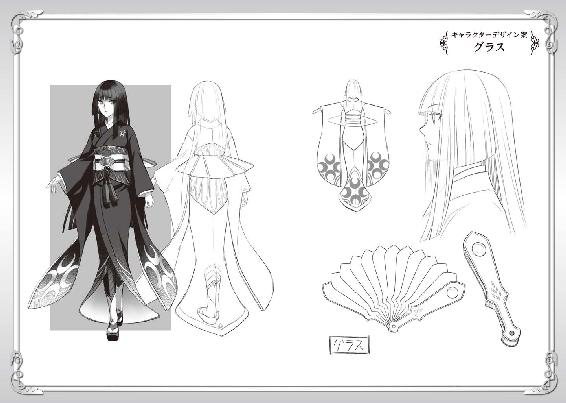
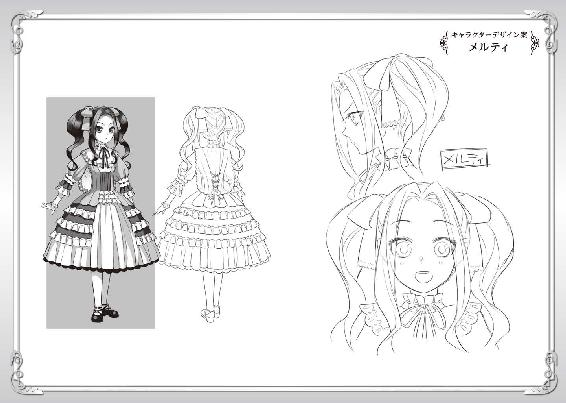
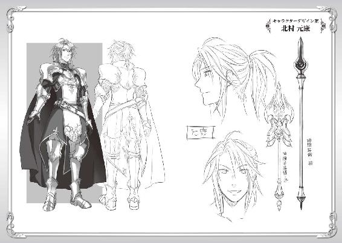
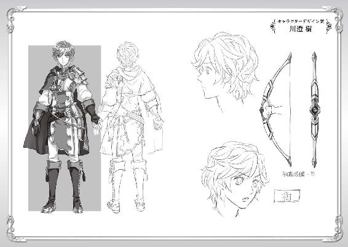
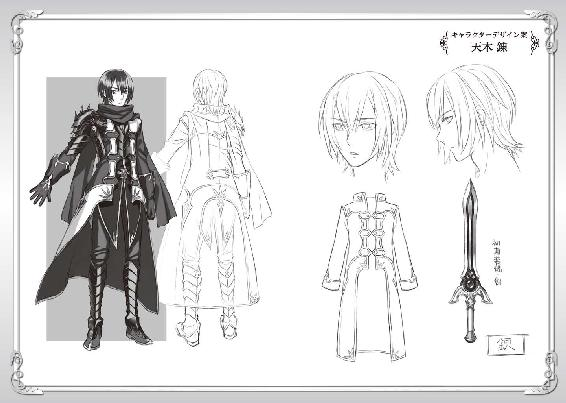
著者プロフィール
アネコユサギ
Aneko Yusagi
神奈川県出身。ゲームと読書好きが高じて、小説を書き始める。
『盾の勇者の成り上がり』を執筆し、ネット上に作品を公開。
作品発表後、連日欠かすことなく更新することで病み付きとなる読者が続出し話題となる。２０１３年８月ＭＦブックスから商業デビュー。
「どん底からどこまでも出世して行きます」と語る。
企画
株式会社フロンティアワークス メディアファクトリー
担当編集
堤 由惟／大原康平（株式会社フロンティアワークス）
ブックデザイン
ragtime
イラスト
弥南せいら
本書は小説投稿サイト「小説家になろう」（http://syosetu.com/）初出の作品を加筆の上書籍化したものです。
盾の勇者の成り上がり３
2013年12月31日発行 ver.1.0
著者 アネコユサギ
発行者 三坂泰二
編集長 金田一健
発行所 株式会社ＫＡＤＯＫＡＷＡ
〒102-8177
東京都千代田区富士見2-13-3
03-3238-8745（営業）
編集 メディアファクトリー
0570-002-001（カスタマーサポートセンター）
年末年始を除く平日10:00～18:00まで
©Aneko Yusagi 2013
※無断で複製・複写・データ配信などをすることは、かたくお断りいたします。
本電子書籍は下記にもとづいて制作しました
ＭＦブックス
盾の勇者の成り上がり３
発行日 2013年12月31日 初版第一刷発行

本作品の全部または一部を無断で複製、転載、配信、送信したり、ホームページ上に転載することを禁止します。また、本作品の内容を無断で改変、改ざん等を行うことも禁止します。
本作品購入時にご承諾いただいた規約により、有償・無償にかかわらず本作品を第三者に譲渡することはできません。
本作品を示すサムネイルなどのイメージ画像は、再ダウンロード時に予告なく変更される場合があります。
本作品は縦書きでレイアウトされています。
また、ご覧になるリーディングシステムにより、表示の差が認められることがあります。